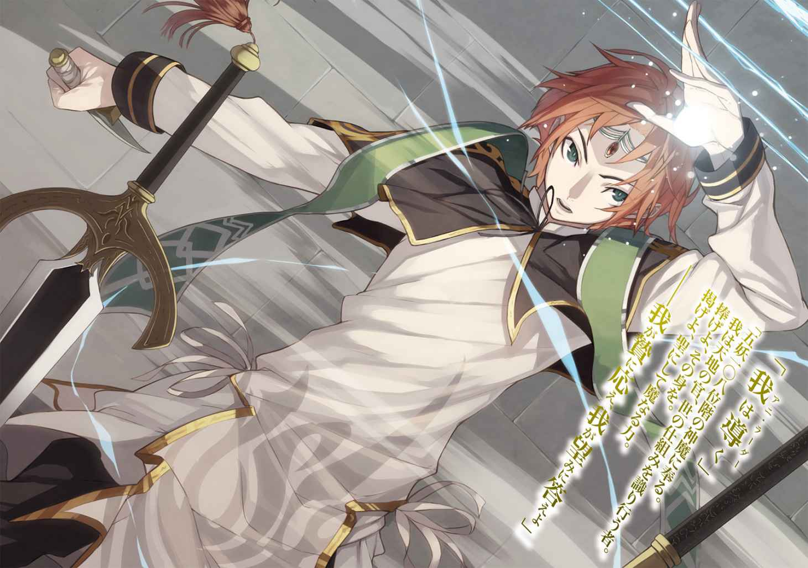
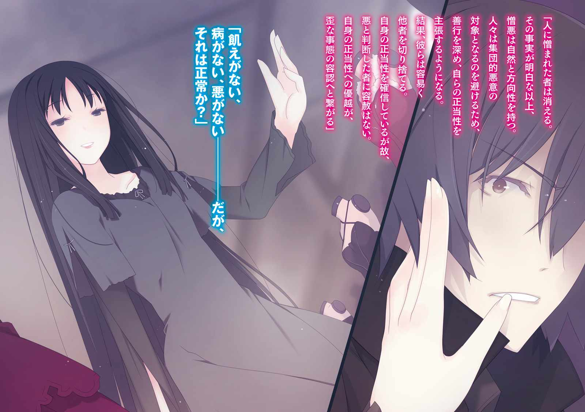
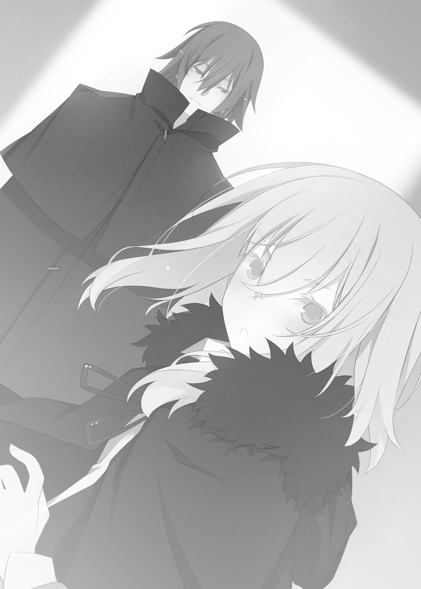

| ファミ通文庫 トライアルセット ファンタジー編 vol.1 | |
| むらさき ゆきや & 竹岡 葉月 & 嬉野 秋彦 & 佐々原 史緒 & 綾里 けいし | |
| (2014) | |
本作品の全部または一部を無断で複製、転載、配信、送信したり、ホームページ上に転載することを禁止します。また、本作品の内容を無断で改変、改ざん等を行うことも禁止します。
購入時にご承諾いただいた規約により、有償・無償にかかわらず本作品を第三者に譲渡することはできません。
本作品は、底本の表現や演出を考慮して本文縦組で制作しております。また一部のページを改変しております。ごらんになるリーディングシステムにより、表示の差が認められることがあります。
覇剣の皇姫アルティーナ
著者 むらさきゆきや
イラスト himesuz
電子版 ファミ通文庫
鉛色の雲が垂れこめていた。
辺 境 に左 遷 される辞令を受け取った日も、こんな空だったな──とレジスは思い出す。
視線を地上へと戻すと、空は同じでも街並みは帝都とまるで違っていた。
煉 瓦 と大理石と街灯を懐かしむわけではないが、土壁石壁ばかりの街並みは、どこか牢獄めいて見える。
辺境都市テュオンヴェル。
帝都から一〇〇 Li （四四四km ）も離れ、馬車で五日もかかる。
街は昼間だというのに薄暗くて、風は痛いほど冷たい。辺境だからではなく、曇りで北国で冬だから仕方ないのだが、先行きを暗喩するようであった。
僕は失敗したのだろう──とレジスは思う。
主を失い、立場を失い、将来を失い、こんな北の最前線まで飛ばされたのだから。
「まぁ、いいさ......出世ばかりが人生じゃない。むしろ、これで読書の時間が増やせるというものだ」
隊商 が街に着いたとき、ちょうど教会が正午の鐘を鳴らした。
同行していた人々が食事処を求めて散っていくなか、レジスが向かったのは、およそ昼食とは無縁な店だった。陳列窓 に本が飾られている。
木戸を押して石壁の建物に踏み入ると、本棚がならんでおり、紙とインクの匂いが満ちていた。
「──ああ、本があれば、私は自由であり、そこは我が家となる」
出典『ブルゴーニュ紀行』著者キュエール・ロメロス──と心の中で付け足す。
レジスは読書家を自称しているが、実際のところは偏執的愛書家（le rat de bibliothèque）であった。
新入荷（C'est nouveau）の案内がある棚を熱心に見つめる。
唇をわななかせた。
「ど、どういうことだ......!? 」
「おや？ なにかありましたかね、軍人さん？」
店の奥にあるカウンターから髭 面 の店主が話しかけてきた。頰の刀傷といい筋骨隆々の体つきといい、書店員というより士官学校の教官といった風体だが。
気 圧 されつつもレジスは尋ねる。
「キュエール先生の新刊がないんだ。ルドッセル伯爵のも、イルーエ教授の本も......まさか売れてしまったのか？ いくら大 人 気 とはいえそんなひどい」
「軍人さん、中央から来ましたかね？」
「ああ、さっき帝都から着いたばかりだけど......」
「じゃあ、知らないのも無理はないですがね。この街じゃそういう本は売れないんで、ほとんど入荷しないんですよ」
「......な、ん......だっ......て？」
レジスは砂漠で水を求める遭難者のごとき声を出してしまった。
一瞬にして、喉 が渇 ききっている。
店主が首をすくめた。冗談を言っているわけではなさそうだ。
「ここは戦地ですからね。売れるのは英 雄 譚 とポルノばかりですよ。ああ、こいつが、ウチのベストセラーかな」
指差されたのは『後悔しない遺書の書き方』だった。
嫌だ！ とレジスは頭を抱える。
「ちょ、ちょっと待ってくれ......あの有名な大作家の新刊が入らないだって？ 本当にここはベルガリア帝国領内なのか？ 僕は間違えて蛮族の集落に来てしまったんじゃないだろうね？」
「まぁ、五十年前は隣国の土地でしたがね」
「ううぅ......しかも、この値段はどうなってるんだ？ 帝都の十倍以上だなんて......」
ようやく読みたい本を見つけて、手に取ったレジスだが、もう泣きそうな顔になっていた。
髭面の店主が淡々と説明する。
「まぁ、本は重いですからね。最近は街道に野盗も出るし、運んでくるのも一苦労です。そのうえ、買う客も少ない......この辺境じゃ、まだまだ書籍は上流階級の嗜 好 品 なんですよ」
「なんてことだ！」
「すみませんね......」
店主の手が、レジスの持っている本に伸びてくる。
あわてて抱き寄せた。
「ま、待て待て、買わないとは言ってない......!! 」
「えっ!? 本気ですかい？ 見たところ、まだお若い軍人さんだ。値を付けた俺が言うのもなんですがね......失礼ながら、週給がブッ飛ぶんじゃないですか？」
「ぐううぅ......ここは、地獄だ......」
レジスはうめいた。
そのとき──店主が「うおっ!? 」と妙な声をあげ、目を丸くする。
視線を追いかけてレジスは振り返った。
店の戸口に、背後から外の光を受けて少女が立っている。
燃えるような赤い髪と宝石 のごとき紅い瞳 をもつ美しい少女だった。歳は十三か十四だろうか。幼さの残る顔立ちにもかかわらず、その容姿は視線を捕らえて放さない。思わず見とれてしまうほどだった。
唇の前に、人差し指を立てている。
──静かに？ どうして？ どういう意味がある？
書店に他の客が来るのは不思議でも珍しいことでもない。それなのに、レジスは妙に動揺してしまっていた。
少女が指をおろして薄紅色の唇を開く。
「最前線に派遣されて、戦場で地獄だと嘆 く新兵は多いけれど、本屋さんで言ったのはあなたが初めてだと思うわ」
涼やかな声だった。
そして、快活な笑みを浮かべる。
「ようやく会えたわね！ あなたが、レジス・オーリック五等文官でしょ？」
「え？ あ、僕？」
「違うの!? 」
「いえ、はい！ 僕がレジス......です」
「よかった～。人違いだったらどうしようかと思ったわ」
安 堵 の笑みには、年相応のあどけなさがあった。
レジスの頰が熱くなる。
目の前にいる少女が美しいから──ではない。そうではなく。明らかに年下の少女に名前を呼ばれたくらいで、うろたえてしまった自分のみっともなさに恥じ入ってのことだ。
「あれ？ 名前......どうして僕のことを？」
「当然、迎えに行く相手の名前くらい覚えてるわよ。子供だと思ってバカにしないで」
「いやいや、そんなつもりは......そうか、迎えだったのか」
レジスは少女のことを改めて眺める。
茶色いローブをはおり、その下には革ズボンとブーツが見えている。荷馬車の御 者 によくある格好だ。
「砦 からの迎えってことは、君も軍人なのか？」
「あら、そう見える？」
「いや......まさかな。未成年だろう？」
「そうね、十四歳になったばかり」
ベルガリア帝国では十五歳からが成人と見なされる。未成年者は、よほどの例外がないかぎり軍人に採用されない。
「なるほど、日雇いされた荷馬車の御者ってところか......砦へは駅馬車を使うつもりだったんだけどな。迎えをくれるなんて、ずいぶんと厚待遇だ」
「うれしい？」
「......早く働け、と言われてる気がして滅入る」
「ふふ、意外と正直者ね」
「僕は噓が嫌いだよ」
「そうなの？ でも、あなた──軍師なんでしょう？」
少女の紅 玉 の瞳が見つめてくる。
レジスは四歳も年下の彼女に、言い得ぬ迫力を感じた。
「......まぁ、そんなふうに言う人もいるけど......僕は軍図書館の司書になりたかったんだ」
「おもしろそうな話ね。続きは馬車で聞こうかしら」
「ああ......」
なんとなく息苦しさを感じ、レジスは首もとを指先で引いて緩めた。
少女が外へとうながす。
「さあ、急ぎましょう。雲が重たいわ、雪が降るかも」
「そうだね......あ、忘れてた！」
外に向かいかけたレジスだったが、気がついて店主のところへ戻る。カウンターのうえに本の代金を置いた。
「これ買わせてもらうよ......ん？ どうかしたのか、店主？ 顔色が悪いぞ？」
「いや、平気です。まいど、軍人さん」
理由はわからないが、髭面の店主は両手で口元を押さえてうつむいていた。なにかを我慢している様子だ。
少女が険しい表情をして、レジスに近づいてきた。
「あなた、もしかしてバカなの!? 」
「な、なんだ、急に......？」
「この辺境じゃ本は贅 沢 すぎる道楽よ。そんな大金を出すなんて、よっぽどのお金持ちかバカだわ！」
「そりゃまぁ、自分を賢いと思ったことはないけど......知識欲は人間を人間たらしめる誇 るべき性質であり、その欲求にしたがい本を読むのは、僕の生き方だ。いかなる障害があろうとも......金がなかろうともだな、読書をあきらめるのは、人生をあきらめるのと同じだ、と思う」
言ってしまってから──子供相手にムキになって恥ずかしい、とレジスは口をつぐんだ。
少女が意外なほど真剣な表情になる。
深くうなずいた。
「人生をあきらめるのと同じ、か......そうね。そういうことなら理解できるかも。あたしも......」
「あたしも......？」
「なんでもない！ 行きましょう！」
「あ、ああ」
レジスは買ったばかりの本を小脇にかかえ、荷物をつかんで少女を追うように書店から出た。
店の軒 先 に一頭立ての小さな幌馬車が駐めてある。
焦げ茶色の瘦せた馬が、こちらを見た。
腰の高さにある御者台に、少女が長い髪をなびかせて飛び乗る。
「ほら、早く乗って！」
「うん......あ、ところで、君の名前はなんていうんだ？」
レジスは彼女を見上げて尋ねた。
相手の目つきが剣吞になる。少女が声を低くして、区切るように一言一言をはっきりと口にする。
「置いてくわよ ？」
レジスはあわてて御者台によじのぼった。
タイミングが悪かったらしい。
†
ガラガラガラ......と木製の車輪が土の街道を踏む。
辺境都市を囲む石壁、その北門を抜けた。最前線であるシエルク砦へと向かう。
御者台には、手 綱 をつかんだ少女が座っていた。
右隣でレジスは荷物をかかえている。
後ろ側は幌のかかった荷台になっており、どうやら材木や煉瓦が積まれているようだ。
「──で、あたしの名前？」
「うん。どう呼んだらいいんだ？」
「そうねえ......」
少女が形のいいあごに、ごわごわした革手袋の指先を当てて思案する。
考える必要のあることだろうか？ とレジスはいぶかしむ。
彼女が真横に結んでいた口元を緩めた。
「うん。あたしのことは、アルティーナと呼んでいいわ」
「もしかして、偽名？」
そう思うほど間があったから訊いたのだが、失敗だったらしい。アルティーナと名乗った少女が眉をしかめる。
「......失礼ね......素敵な愛称じゃないの。特別に許してあげようと思ったのに、やっぱりやめようかしら」
「ごめん、ごめん。アルティーナって呼ばせてもらうよ！」
「まぁ、どうしてもって言うなら許してあげる」
「どうしても」
「ふぅ～......あなたって本当に軍人っぽくないわよね」
「はは、自覚はしてる」
レジスが苦笑すると、つられるようにしてアルティーナも微笑 んだ。
左右には小麦畑が広がっている。まだ冬なので、下草のような小さな苗がならんでいるばかりだ。
世界は灰色の空と土色の大地の二色 に塗りたくられていた。
前を向いたままアルティーナが話しかけてくる。
「ねぇ、あなた、ここへは志願したわけじゃないのよね？」
「僕の希望は軍隊に入る前からずっと軍図書館の司書だよ。そもそも、軍人になったのだって生活費と本を買う金に困ったからだし......そういえば、シエルク砦に図書室はあるかい？」
「いずれ、あなたの部屋が、そう呼ばれそうね」
「ああ、神はないのか」
「......それ紙 と神 を掛けてるわけ？ つまらないわ」
「かかか掛けてなんかないよ」
「あなた、前の部隊でなにをしたの？」
「なんだい？ 僕の軍人としての存在意義に対する問題提起かな」
「そうじゃなくて。なにをしたせいで、こんな最前線の辺境送りになったのかって話」
「敗戦の責任ってことらしい」
「自分では納得してるわけ？ あなたは若くて下級士官だわ。部隊の指揮権すらなかったのに責任を取らされるだなんておかしいじゃない。なにがあったの？」
レジスは視線を遠くへと投げる。
苗のならぶ小麦畑。
地平線の向こうには、起伏のある山々が見えていた。
「......いい人だったんだ」
「誰が？」
「前の主がね。僕は剣も乗馬もダメで士官学校じゃ落ちこぼれだった。そんな落第生を雇ってくれたのが、テネゼ侯爵だった」
「落ちこぼれ？ 士官学校で軍略は負けなしって噂を聞いたわ」
「意外と物知りだな。誰から聞いたのやら......まぁ、噂なんて尾ヒレがつくものさ......軍略だけは評点を稼げたけど、あれはチェスみたいなものだからね」
「でも、テネゼ侯はチェスの相手ではなく軍師としてあなたを雇ったのでしょう？」
「数いる参 謀 の末席だよ。学校を出たときは、まだ十五歳だったし、いわゆる見習いってやつ」
「末席だろうと見習いだろうと貴族でもないのに若くして幕 僚 だなんて、すごいと思うけど......不満だったの？」
「まさか！ 僕を雇ったのは侯爵の気まぐれだったかもしれない......それでも大変な恩義を感じてるんだ。今でも」
だからこそ、別れを思うと目頭が熱くなる。
レジスは手に持っていた荷物を、ぎゅっと摑む。
革鞄がひしゃげた。
「......侯爵は、僕を必要だと言ってくれた。それなのに......僕は、あの人を、見殺しにしたようなものだ」
自分が発したとは思えないほど重たくて低い声だった。
アルティーナが表情を固くする。
「たしか、テネゼ侯は夏頃の会戦で──」
「ああ......」
日雇いの御者にしては、ずいぶんと詳しいな、とレジスは思った。戦地だから戦局に関心が強いのか、アルティーナが変わり者なのか、あるいは別の理由があるのか。
「見殺しって？ どういうこと？」
「僕の主観になる......」
「あなたの主観が聞きたいの。噂話じゃなく、あなた自身から話を聞くために、あたしは............ねぇ、話してくれない？」
しばし考えた。
まだ道中は長い。隠すようなことでもないだろう、どうせ軍法会議で洗いざらいしゃべって帝都の週刊新聞にも出たことだ。
あの夏の日のことは──
掛けられた言葉や、人々の表情は、ずっと頭から離れないのに、いざ話そうとするとどこから始めたものか。
すこし思考を整理する間 が必要だった。
「......あの会戦のとき......テネゼ侯爵は、参謀長が立案した作戦を採用した。まぁ、細かい内容はいいだろう。五〇〇人程度の蛮族を相手に、帝国軍は三〇〇〇人ほどの大軍だった。勝利は間違いない戦局で、本陣での会話は作戦についてよりも、ディナーの鴨肉に合うワインはどれかって雑談のほうが多かったくらいだ......」
「戦う前から戦勝ムードだったわけ？」
「よくあることさ、帝国軍は強いからな......問題は、敵が背後に回りこんできたときの配慮がなにもなかったことだ」
「相手は蛮族でしょ？ そういう小難しいことはしないんじゃないの？」
「たしかに、統制されていない蛮族は小細工しても成功しにくいから、いつも正面からの激突を好む。しかし、過去の記録を読めば、兵力に大差があるときには奇襲があったんだ。警戒が必要だと......僕は二度の進言をした。でも、参謀長には臆病者と笑われ、テネゼ侯爵には後方から戦 というものを見ておくように......と」
「本陣を追い出されたわけね」
「ああ......」
軍法会議でも似たようなやり取りがあったな、とレジスは査問か面接を受けているような気分になった。
あのとき、強く叱 責 を受けたとしても三度目の進言をするべきだったのではないか、と今でも思う。
見張りを立てておくだけで、敵の奇襲を防げたのに。
アルティーナがつぶやく。
「自分を責めてる？」
「......僕は、本陣からの退去以上に重い罰を受けるのが恐くて......三度目を言わなかったんだ」
「その参謀長は貴族だったのでしょう？」
「ああ、そうだが......？」
「それなら、平民の進言は何度しようと受け入れなかったわ。重 用 している貴族の体面を傷つけるようなことは、テネゼ侯もできなかったでしょうね」
「あ......」
平民出身で、貴族社会に馴染みがないレジスには、侯爵が参謀長の体面に気を遣っていることまでは見えていなかった。
深く考えていれば、貴族同士の立場や関係について知識は持っていたのに。
アルティーナが慰めてくれる。
「だから、自分を責めないほうがいいわ」
「いや、言われてみれば、思い当たる言動はあった......そういう貴族の間 の機微に気づけなかったのは、僕の過失だ......あのとき、作戦会議の場ではなく内密に侯爵へ進言していれば......あるいは......ッ!! 」
歯を嚙みしめる。
胃の底が重たくなった。目頭が熱くなる。
視界が滲 んだ。
アルティーナが凜 とした声をあげる。
「レジス・オーリック！」
「えっ!? 」
急に名前を呼ばれたことよりも、声の迫力に驚いた。たんなる御者の娘とは思えないほどだった。
「過ぎたことだわ。あなたは全力を尽くした。そうでしょう？」
「......ああ、そうだな。でも、貴族の体面なんて下らないもののために侯爵が亡くなったなんて思いたくないんだ......僕が浅 慮 だった」
今更なのは、わかっているけれどね──と付け足しておく。
アルティーナがうなずいた。
その顔を小さくて白い粉つぶがかすめる。
空を見上げた。
いくつもの白い影が舞い落ちてくる。
「雪......」
彼女がつぶやいた。
レジスは肩をすくめる。
「転属初日に雪に降られるとは......歓迎されてるなあ......ははは」
「吹雪 になると、笑ってもいられなくなるわ」
「ああ、知ってはいるけど」
「北国で暮らしたことがあるの？」
「本に書いてあった」
「......あっそ......急ぐから、落ちないようにつかまってて！」
アルティーナが怒ったような呆れたような声をあげ、馬に鞭を入れた。
†
遠くで狼が鳴いた。
ウォーン！ という獣の声は、旅人にとって恐怖の対象だ。それは馬車を引いていた馬にとっても同じであったらしい。
突然、首を大きく振って馬が街道を逸 れてしまった。
「戻りなさい！」
アルティーナが手綱を引く。
馬のいななき。
レジスは硬直した。
雪の積もりはじめた道を蛇行した幌 馬車が、湿った土をえぐってスライドする。斜めに傾いた。
背後の幌掛けの荷台に積んである材木やら煉瓦やらが滑って騒々しくがなりたて、最後に木がへし折れたような嫌な音がした。
衝撃に尻を蹴飛ばされ、レジスの身体が浮く。
「うひゃあっ!? 」
「こらえて！」
悲鳴をあげたのはレジスで、その肩を摑んで支えてくれたのはアルティーナだった。
なんとか御者台から転げ落ちるのはまぬがれる。
幌馬車は街道の真ん中で停まってしまった。
馬が足を止めて、いななく。やがて落ち着きを取り戻したのか、チラチラと御者のほうを見た。
やっちまった──と馬でも自覚できるものらしい。失敗を怒られるのを不安がる子供のようだった。
アルティーナは御者台を飛び降りると、馬に取りすがり、その首をなでる。
「大丈夫？ どこか、ケガしたの？」
ブルル、と馬が応える。
どういう返事なのか、レジスにはわからなかったが、彼女が馬の右後ろ脚を気にしているのは気づいた。
「もしかして、悪いのか？」
「......無理させれば歩いてくれそうだけど......治らないくらい脚を悪くしたら処分されちゃう」
彼女は馬をなでながら、ため息をついた。
馬車からハーネスを外して休めるようにしてあげる。迷子にならないよう、縄はつないではおくが。
レジスは雪に煙る地平線を眺めた。
「シエルク砦までは、かなり遠いのか？」
「ここから、五 Li （二二km ）ってとこかしら......でも、今から歩いて行くのは無理ね」
「どうして？」
「吹雪になりそうだもの。しかも、ランタンなんか持ってきてないから夜になったら真っ暗よ。道を外れて小麦畑に入ってしまったら朝まで歩いても砦に着かないわ。用水路に落ちちゃうかも」
「まぁ、そもそも、この荷物を持って五 Li も歩きたくないけどね」
「あなた本当に軍人なの!? 」
「はは......山中行軍の教練は最悪だったな。あれはもう行軍の訓練というより、遭難の訓練って感じだった」
はぁ～、とアルティーナがこめかみを押さえる。
レジスは首をかしげた。
「どうしようか？」
「こういうときに案を出すのが軍師なんじゃないの？」
「いや、兵団を動かすのは、いくらか評価してもらったことがあるけど......こういうのは、兵士とか行商人とか冒険者の領分だよ」
「あなたも一応、兵士よ!? 」
「おっと、そうだった」
「呆れた人ね」
「まあまあ、落ち着こう、アルティーナ。人間、なるようになるものさ」
「そうね......吹雪のなかで凍死するのも〝なるようになった〟と言えるわね」
「厳しいなぁ」
「ねぇ、本当になんの考えもないの？」
「うーん、そうだな......これを読んでおくか」
レジスは街で買った本を出す。
「あら、こういうときに役立つ本なわけ？ やるじゃない！」
「どうだろう？ この作品は──とある少年のもとに妖精があらわれて、物語から六人の美少女たちを現実のものとしてくれるという空想小説なんだけど──」
「バカなの!? 荒 唐 無 稽 な作り話を読んでる場合じゃないでしょ!? 」
「荒唐無稽とは失礼だな。作者にあやまれ」
「このままだと明日には冷たくなって、本なんて二度と読めなくなるわよ!? 神父様が聖書を読みあげてくださるでしょうけど」
「だからこそだよ......最後に買った本くらい読んでおきたいじゃないか」
「あきらめるの早すぎ！」
「冗談だ。でも焦るのはよくない。落ち着いて考えないと。ひとまず荷台に移ろうか。幌があるから少しはいいだろう」
「......そうね」
馬車にあがってきたアルティーナの肩や頭には、すでに雪が積もりはじめていた。
荷台に積んであった材木や煉瓦が片側へと寄っているのは、先ほど滑ったせいだろう。
空いた場所にレジスは腰をおろした。
近くに彼女も座る。
「あまり風がこないのは助かるわね」
「寒いけどな」
「それは仕方ないわよ。砦についたら、すぐお湯を浴びるわ。絶対に！」
「御者にしては厚待遇だな......もしかして、砦のお偉いさんと知り合いなのか？」
「うっ」
なぜかアルティーナが言葉に詰まった。
当たらずとも遠からずといったところだろうか？
「まぁ、砦に着けばわかることだな」
「無事に帰れればね......」
雪と風は強さを増して、すっかり吹雪と化していた。
幌の中にまで入ってくるものだから、アルティーナが肩を震わせる。
「ううぅ......」
レジスは記憶の中にある本を漁ってみる。
「やっぱり、こういう場合は下手に動かないのが一番か......」
「そういうもの？」
「動いて体力を消耗するより、他の馬車が通るのを待ったほうがいい。砦の人たちは、どのくらい君のことを気に掛けてると思う？ 日雇いの荷馬車のことは覚えてもいない？ それとも、友人を待つかのよう？」
「ど、どうかしら......忘れてはいない、と思うわ。心配してる......はず。たぶん」
「だとすると、夜まで待たずに捜索が来る可能性が高いな。砦と街の間 は一本道だ。街まで行けば会えると考えたら、そう足が重くもないだろう」
「なるほど......なかなか頭が回るじゃないの」
「知ってるだけだよ」
似たような状況の物語を読んだことがある──レジスにとっては、それだけのことだった。
「あとは、寒さをしのぐための物があれば使っておきたいところだな」
アルティーナが立ち上がる。
「そういえば、あるわ！」
「ん？」
「荷台に布があるの。小さいのが一枚きりだけれど」
そう言ってアルティーナは、ごわごわした布を材木の下から引っ張り出した。
「たしかに小さいな」
「でも厚手だから暖かいでしょ、使って」
「ありがとう......でも、それはアルティーナが使ってくれ」
「え......？」
「こんなふうだけど、僕は軍人だ。市民を守るのが軍人の役目だろう？」
「建前ではね」
「僕は本気だよ」
「ふーん、面白い人よね、あなた......それなら、こうしましょ」
アルティーナが布を持って、レジスの左隣に座り、ぐっと身を寄せてくる。
自分の左腕に、彼女の右腕が絡んできた。
「な、なんだ!? 」
「こうすれば、一枚でも二人で暖まれるでしょ？」
「ああ......なるほど、そう、かな？」
布よりも少女のぬくもりが、暖かい。
心臓の鼓動が加速して大変なことになっていた。背中に汗をかくくらい。
レジスは内心で自分に言い聞かせる──落ち着けよ、僕。彼女は十四歳の子供だ。まだ未成年で年下じゃないか。たしかに綺麗だとは思うけれど、腕を絡められたくらいで動揺するなんて、年長者として恥ずかしいぞ。
アルティーナが顔を近づけてくる。
「大丈夫なの？ なんか赤いけど......？」
「な、なんでもない」
「そ......」
静かになる。
聞こえるのは、風の音と、アルティーナの息づかい。
「......レジス」
「え？ な、なに？」
「あなたって珍しい人だと思うわ」
「はは......よく言われる」
「軍人は市民を守るべきだなんて、名目だけよ。軍人のほうが偉くて大切って考えてる者のほうが多いわ」
「そうかもしれない......でも、持てる者は持たざる者を庇護するべきだ。それこそが、人類が社会を形成する理由なのだから。大人が子供を守るように、強者が弱者を守るのは当然で......軍人は市民を守るべき、だと思う」
「貴族は平民を守り、皇帝は国民を守るべきってこと？」
「本来はね。今の貴族たちは、無益な戦争を続けて国民の命と財産を浪費するばかりだけど」
「蛮族との戦いは無益なもの？ 彼らと講和は結べないし、負けたら皆殺しにされるんでしょ？」
「......たしかに、蛮族は恐ろしい。けれど、本気で国土と国民を守りたいなら、もっと守るのに適した地形まで引いて、大きくて長い防壁を築くべきなんだよ」
「長い壁なんて、越えられちゃわない？」
「騎兵とか馬車が簡単に通れなくなる。大規模な進軍を止めるには、それで充分だ」
「あ、そうよね......どうして将軍たちは、そうしないのかしら？ 思いついてないから？」
「僕が言ってることは、もう本になって広まっているような知識ばかりさ。上流階級の連中が戦争をやめないのは、それが商売だからだ。蛮族を退ければ軍人としての評価が上がる。戦争をするための武器や食料は高く売れる。兵隊の学校も貴族の収入源だ。国民に負担があったとしても一部の権力者は潤う......」
「そんなの許せない！」
アルティーナが食ってかかるように顔を近づけてくる。
レジスは気圧されて身を引いた。
腕を絡められているから、逃げられないわけだが。
「お、落ち着いてくれ、アルティーナ......全ての上流階級の人たちが、そんな連中ばかりだとは言ってない。現にテネゼ侯爵は違ってた」
「......そうなの？」
「ああ、彼は帝国領土の拡大をやめて、国内の安定に尽力するべきだと皇帝に奏上していたくらいだ。防壁を作るプランを貴族議会で提案してたしね」
「それは素敵だわ。戦争がなくなれば貧困も戦死者も、すごく減るはずだもの！」
レジスの言葉にアルティーナは瞳を輝かせ──
それから、無言になった。
一瞬、険しい表情を見せる。
「......まさか、そのせいなの？」
「ん？ どうかしたのか、アルティーナ？」
「ううん、つい余計なこと考えちゃっただけ。そうなのね、貴族のなかにも、いろいろな人がいるのね」
「ああ、だからこそ、皇帝がしっかりしてくれなきゃ困るんだけどな」
レジスは苦々しげに言った。
びくっ、とアルティーナが身じろぎしたのが、密着しているからこそ伝わってくる。
「......今の皇帝は......悪いと思う？」
「悪いって言うと、不敬罪だろうけどさ......」
今でも充分に言い過ぎているかもしれない。とはいえ、この吹雪のなかだ。聞いているのはアルティーナと馬くらいだろう。
レジスは饒 舌 になっていた。
「今の皇帝は、長く在位しすぎたよ。もう公務もままならないご老体だ。本来は五年前に第一皇子に帝位継承するべきだった。しかし、第一皇子は病弱で、第二皇子のほうが政軍両面に才を見せている。後ろ盾も第二皇子のほうが強力だしな」
「ややこしいのよね......」
最初に産まれた第一皇子は、側室の第二皇 妃 の息子だった。
次に産まれた第二皇子は、正 妻 である皇 后 の息子だ。そして、貴族としての格は皇后のほうが上である。これが帝国の継承問題となっていた。
「二人の皇子の継承争い......まぁ、実際には後援者たちの権力争いだな。それがもつれた結果、老皇帝の在位は伸び、貴族たちは好き勝手にやって、国は傾いてるわけだ」
「その他にも皇族はいるわ」
「ああ、第三皇子か。まだ十五歳で学生だし、二人の兄皇子の対抗馬にはなりえないだろうな」
「も、もう一人......いるでしょ？」
「ん？ あー......そういえば、シエルク砦の司令官も皇族だったか」
「そう！ ど、どう聞いてる!? 」
またもアルティーナが身を寄せてきて、レジスは右のほうへずれた。荷台から落ちてしまいそう。
「うーん、矢 雀 皇 姫 か......」
「なに、それ？」
「帝都でのマリー・カトル第四皇女の渾名 だよ。本名は長ったらしくて、みんな覚えてないからな」
「たしかに、ちょっと長いかしらね......」
「マリー・カトル・アルジェンティーナ・ドゥ・ベルガリアだったかな......物語はよく覚えてるほうだけど、こうも長い名前を覚えるのは大変だ」
「無理しなくてもいいわよ。それより、矢雀皇姫って、なに？」
「これからお世話になる方だから、悪口みたいに取られると困るけど......帝都で知られてる渾名だよ」
「だから、どういう意味なわけ？」
「僕が聞いた噂話になるけど......まぁ、時間だけはたっぷりあるしな。これは、辺境に飛ばされた、かわいそうなお姫様の物語だ──」
†
十五年前──
前置きになるが、マリー・カトルの母君の話をしよう。
帝都ヴェルセイユでは、皇帝陛下の五十回目の誕生日を祝う大規模なパーティーが催されていた。
宮廷楽団 が舞曲 を奏でる。
豪華な料理が次々とテーブルにならべられ、ここぞとばかりに将軍たちは戦勝報告を手土産に祝辞を述べる。
有力な貴族や高名な富豪ばかりでなく、末端の下級貴族やその家族すら招かれた、それはそれは大きな式典であった。
末席に座る平民のなかに、周りが息を吞むほど美しい娘がいた。
夜色の髪に黒曜石の瞳が白い肌をより白く見せる。
その十六歳になる少女に声をかけてきたのは──あろうことか、玉座を降りて会場を割って進んだ皇帝陛下であった。
「よろしければ、余 と踊ってはいただけませんか、お嬢さん 」
このとき、クローディット・バルテルミ嬢は丁寧なお辞儀をしてから、こう返したと帝国式典省の公式記録に記されている。
「はい、よろこんで、紳士様 。お名前はなんとおっしゃるの？」
なぜ彼女が皇帝の名前を訊いたのかは、いくつかの説が挙げられている。『気づいていなかった』という説は、さすがに侮 辱 であろう。『気づいていたが、教えこまれたパーティーマナーを押し通した』説と『皇帝に冗談が言えるほどの女傑である』という説が有力である。
いずれにしても、真実は彼女本人しか知り得ない。
その美しい黒髪の少女が手を伸ばすと、受け取った皇帝は笑みを浮かべた。
「これは失礼をいたしました。余は、リアン・フェルナンディ・ドゥ・ベルガリア。皆はリアン十五世と呼びます」
「では、私のことは、クローディットとお呼びください」
帝国最高と名高い指揮者 は、一瞬のためらいの後、指揮棒 を振りオーケストラに演奏をうながした。
通称クローディット事件である。
半年後──
十七歳になったクローディット嬢は、皇帝の四人目の妃 となる。
名を『メアリー・クローディット・ドゥ・ベルガリア』と改められた。しかも、婚礼のときには、すでに懐妊していたと言われている。
皇帝が五十一歳の誕生日を迎えるよりも早く、皇妃は第四皇位継承者となる皇姫を出産した。マリー・カトル・アルジェンティーナ・ドゥ・ベルガリアである。
公式には正当な息女であるが、世間においては落 胤 であった。
侍従長から第四子誕生の報告を受けたリアン十五世は、
「髪は赤いか？」こう尋ねたという。
ベルガリア帝国の初代皇帝は《炎帝 》の異名をもつ赤 髪 紅 瞳 の巨 軀 であった。近隣の蛮族たちを大剣で打ち倒し、帝国の礎 を築いたのだ。
リアン十五世も、瘦せてはいるが長身で赤髪紅瞳であった。
しかし、三人の兄皇子たちは瞳こそ赤色であったものの、髪は母方の金や茶色を受け継いでおり、巨軀とも言い難かった。
政治軍事に無関心なリアン十五世であったが、初代皇帝の血が薄まることには心を痛めていたらしい。
侍従長がうやうやしく礼をして告げる。
「陛下、赤色でございます。しかし、女児であらせられます」
リアン十五世の第四皇女への関心は、そこで途絶えたようだった。
平民の娘が側室となり、一年も経たずに子を授かるなど、高名な貴族たちには耐え難い屈辱だった。
もしも、クローディットの子が男児であったなら、早 々 に暗殺されていたかもしれない。まことしやかに〝第一皇子が病弱なのは、毒を盛られたせい〟という噂が流れていたほどだ。
幸いにして女児であったため、マリー・カトルは十三歳まで無事に育つことができた。
皇姫であるのに剣術を習ったり、政治を勉強したりと奇行も目立ったが宮廷の笑い話になる程度だった。
しかし、そろそろ社交界に出ようという年齢になったとき、問題が起きる。
マリー・カトルは母親に輪を掛けた美貌を宿していた。
その頃、甘い顔つき と渋い声 とほどほどの歌唱力で社交界の注目を集めていた若い吟遊詩人がいた。その男を、皇后が宮廷に招いたのだが──
マリー・カトルとすれ違った瞬間、吟遊詩人が美貌を称える詩を歌ってしまう。
「おお～、なんと素晴らしい日だろう！ 太陽のごとき天使に逢うことができるなんて。燃える炎は私の心を焦がし、輝ける紅玉は私の言葉を奪い去る～」
当然、皇后は激怒した。その吟遊詩人をすぐさま宮廷から叩き出し、社交界からも追放してしまう。
それだけでは済まなかった。
皇后の息子──第二皇子アレン・ドウ・ラトレイユ・ドゥ・ベルガリアは鋭利な刃物のような人物である。
軍人としては第一軍司令官でしかないが、老いた皇帝や、病弱な第一皇子に代わり、二十三歳にして帝国軍の実権を掌握していた。
そのラトレイユが老皇帝に奏上する。
「美しい皇姫が指揮を執れば、将兵の戦意も向上するにちがいありません。膠 着 している北方を任せるべきかと存じます」
「善きに計らえ」
この頃には、リアン十五世のクローディット皇妃への寵 愛 は完全に失われていたようだった。
帝国歴八五〇年──
老皇帝が玉座に腰掛け、赤 絨 毯 の左右には冷ややかな笑みを浮かべる貴族たち。
母親の姿はなかった。
マリー・カトルは赤い髪を揺らし、頭を下げる。
「陛下には、ご機嫌うるわしく」
「......」
リアン十五世は首 肯 だけを返した。
侍従長が辞令書を広げて、皇帝の名をもって勅 命 を読みあげる。
マリー・カトルは皇姫で未成年にもかかわらず、バイルシュミット辺境連隊の司令に任命されてしまった。
貴族たちの間 に低い笑い声があがる。
皇姫の心中を推し量ることができた者は、この謁 見 の間 には居合わせなかった。
侍従長が下がったあと、老皇帝が小さな声でつぶやく。
「......餞 別 に欲しい物はあるか？」
この問いは皇帝の血縁者が帝都を離れるときの慣例であり、伝統的に〝陛下のお言葉がなによりの励 みになります〟と答えるものだが......
マリー・カトルは胸を張り、
「炎帝 の剣を頂きとう存じます！」
と言い放った。
どよめきが広がる。
貴族たちからは露骨に嫌悪の目を向けられ、「礼節も知らぬか物乞いめ」と陰口さえ叩かれた。
しばらく老皇帝が思案して。
「......初代皇帝の剣は七本、そなたは第四子だ。四番目の剣を貸し与えよう。いずれ、帝都に戻ったとき、宝物庫に返すがよい」
四番目の宝剣──
甲冑姿の兵士たちが運んできたのは、あまりにも巨大すぎる両刃剣だった。
《帝身轟雷ノ四 》である。
この大剣は初代皇帝の身長にちなんで作られたもので、二六 Pa （一九二cm ）もの全長があった。
マリー・カトルは少女にしては背が高いほうだが、そんなものは誤差だと笑い飛ばすかのごとく、宝剣は重厚長大に過ぎた。
貴族たちから下卑た嘲笑が浴びせかけられる。皇姫が剣を持ちあげることもできず、みじめに辞退するだろう──と大半の者たちが予想していた。
少女は一礼し、大剣の柄を右手で握りしめ、鞘に収められた刀身を左手で支える。
「ありがたく......お借りいたします......ッ!! 」
マリー・カトルは全身の力を込めた。
大理石の床が軋 む。
彼女は大剣を持ち上げた。
見ていた貴族たちから笑い声が消え去り、驚嘆へと変わる。
皇姫は身の丈よりも長い大剣を携えた。
「......大任、拝命いたしました」
老皇帝に深く礼。
そして、冷たい表情を浮かべている第二皇子ラトレイユと、憎々しげに睨んでいる皇后を見据える。
このときマリー・カトルが何を想ったのかは、憶測しか飛んでいない。
彼女は踵 を返し、静まりかえった謁見の間を後にするのだった。
†
「──とまぁ、そんな噂話さ」
吹雪が幌を叩いた。
レジスが話を締めくくろうとすると、アルティーナが嚙みついてくる。
「ちょっと待ちなさいよ」
「ん？」
「矢雀皇姫ってのは、どこに出てたわけ!? 」
「ああ、それか。皇姫が大剣を腰に吊るしたじゃないか」
「なにか変なの？ それしかないじゃない、あんな長い剣。背負ったら引きずってしまうわ」
「アルティーナも見たのか。皇姫はシエルク砦でも、そうしてるんだな」
「え？ あっ、そ、そうよ......見たわよ」
「君は思わなかったか？ 大剣を携えた小さなマリー・カトルを見た民衆や兵士たちは、〝まるで矢を射られた雀のようだ〟と評したらしいぞ」
「なっ!? 」
アルティーナが目を見開いた。
固まる。
「それまでは、美しいと噂されてはいても、ほとんど国民の前に出たことはなかったし、目立った逸話もなかったからな。すっかり《矢雀皇姫》って渾名が定着したみたいだ。僕は戦地にいたから見てないけど」
「ぬぬぬ......」
「どうした、肩を震わせて......そんなに寒いのか？」
「違うわよ！ あなたに文句を言う筋合いはないけど、不本意だわ！」
「本人には内緒で頼むよ。いきなり嫌われると、やりにくくなるからな」
「それは安心して。噂を聞いたからって、その話をした相手を嫌うほど愚かじゃないもの」
レジスは肩をすくめた。
「だといいけどな......そうだ、腹が減らないか？ 昼を食べてないだろう？」
「なにかあるの？」
「本を読みながら食べようと思って、パンを残しておいたんだ」
革鞄を開け、長剣を横にのける。
堅焼きパンが出てきた。
「温かいミルクが欲しいところだけどな」
「分けてくれるの？」
「僕の主義は話しただろ？ いらないなら、無理にとは言わないけどさ」
「......欲しい」
レジスは笑みを浮かべ、堅焼きパンを半分に割って、片方をアルティーナに渡した。
「そら」
「ありがと......笑顔といっても、ぜんぜん違うものね」
アルティーナが半分のパンを見つめて、そうつぶやいた。
レジスはかじったパンを飲みこんでから。
「なんの話だ？」
「......あたしは、もっと冷たい笑顔をたくさん見てきたのよ」
「ふーん、どこでだい？」
「宮廷よ」
アルティーナは堅焼きパンに、はむっと歯をたてる。
そのとき、馬がいなないた。
切迫したような、助けを求める悲鳴にも似た、いななきだった。
二人して御者台のほうへ身を乗り出す。
「な、なにが......？」
「あれ！」
アルティーナが指をさした。馬車の前方、前足をばたつかせている馬の向こう。
吹雪のなかに、黒い影があった。
暗闇に金の瞳が光る。
血の色をした口が、五つ。
レジスは悪魔に心臓を摑まれたような気がした。
「......狼だ」
「灰狼（loup gris）よ」
「ひ、火だ......松明を投げよう。あ、火 口 箱 はあるかい!? 」
「落ち着きなさい、レジス！ あるわけないでしょ」
「うっ......そうだった」
「このままだと、馬が危ないわね」
「その次は、僕たちが喰われる番だろうな......うううぅぅ......ッ!! 」
レジスは幌のかかった荷台へと身を引く。
転がしてあった剣を摑んで、馬車の後ろから飛び降りた。
アルティーナが目をすがめる。
ため息をついた。
「まぁ、市民を守るとか言ってもね......」
いくら格好のいいことを口にしていても、命の危険があれば別だ。そうアルティーナは知っている。
──彼も同じか、と思った。
しかし、レジスは馬車の前へと回りこんできた。
逃げなかったのだ。
馬車の前で、五匹の灰狼のうち、一番大きなやつに向けて剣を構える。
「ううぅ......!! 」
「な、なにしてるの、あなた!? 灰狼は騎士でも苦戦するような凶暴な獣なのよ！」
「知っているさ！ だから、これしかない」
剣を持つレジスの手が震えているのは、寒さのせいではないだろう。
構えからして素人 。
いや、それより酷い。
猫背で、腰は引け、今にも後ろに転がってきそうだ。
ごっこ遊びをする子供でも、もうすこし胸を張って構える。
アルティーナは頭をかかえた。
「そんなんで勝てるの!? 」
「はは......自慢じゃないが、僕は剣術教練で誰にも勝ったことがない」
「本当に自慢にならないわね！」
「アルティーナ、逃げろ......馬に無理してもらってくれ。このままじゃ、どうせ狼たちの餌 食 になる......」
「本気で言ってるの!? あなた、死ぬわよ!? 」
悲鳴にも似た叫び声だった。
レジスは笑う。
安心させるためだとか、余裕の笑みだとか、そういうことではない。自然と笑みがこぼれたのだ。
理由は自分でもわからなかった。
「それでも......生き方を曲げてしまうのは、死ぬよりつらいと思うからな」
「ッ!? 」
アルティーナが息を吞む。
レジスは自分でも不思議だった。どうして笑ったのか？ バカな自分に対する自嘲だろうか？ いや、それは後ろ向きに過ぎる。絶望的な状況でも信念を貫くことができた勝利の賛歌だと思っておこう。
「僕でも......時間稼ぎくらいはできるだろう、狼は逃げずに立ち向かってくる相手であれば、うかつに攻撃しないんだ。相手の力量を見定めて、勝てると確信したら近づいて......あ、あれ？ なんか、近づいてくるぞ!? 」
「そうね。あなたの構えって、どう見ても弱そうだもの」
アルティーナの声は、なぜか明るかった。かすかに笑いさえ含んでいたような？
一番大きな灰狼が近づいてくる。
牙のならぶ口が開いた。
うなり声。
まだ遠いとわかっていたが、レジスは威嚇のために剣を振る。
「え、えいや!! 」
剣の重さで身体が泳いだ。
先端が地面を叩く。
同時に、ゴッと音があがった。金属の鍔 が、自分の左膝を打ったのだ。
「～～～ッ!? 」
「ありがとう、レジス......あなたは市民を守ってくれたわ。御者としてのアルティーナをね」
「え？」
嬉しそうな声に、振り返る。
アルティーナの深紅の瞳が煌めいた。
幌馬車の荷台から、彼女が銀色の何かを引きずり出す。そいつは、薄暗い吹雪のなかにあって、まばゆく輝いて見えた。
木材と煉瓦を押しのけて、その下に隠していた物を少女の細腕が引き抜いていく。
ゴリゴリザリザリと不協和音が響いた。
ありえないことが起きている。理解不能なことが起きている。
重 厚 長 大 。
それは、あまりに巨大すぎて何であるかを認識するのに時間が必要だった。
荷台にようやく収まるほどの長すぎる全長。人間が振るうには重すぎるであろう金属の塊。
巨大であるにもかかわらず、その研ぎ澄まされた刃には曇りひとつない。
鏡のような刀身。
レジスの唇が震える。
「......帝身轟雷ノ四 」
アルティーナが右手に掲げたのは覇者の剣であった。
風にあおられたローブが、王のマントのようにひるがえる。燃えるような赤い髪を左手でかきあげて。
「そろそろ、あたしが守る番でしょう、レジス。そこで、しっかりと見ていて」
「な、に......!? 」
「この剣が大きすぎるだけの、雀に刺さった矢なのか、覇者の振るう剣なのかを!! 」
踏み出したアルティーナの足が雪に沈む。
積雪を蹴って、進んだ。
掲げられた大剣が、風を斬って鳴く。
「てやあああぁぁぁぁぁぁぁぁぁ～～～～～～～～～～～～～～～!! 」
振り下ろした。
大地を砕く。
地面に積もった雪が爆散する。
これはもう斬撃というより、大砲の直撃のほうが近い、とレジスは思った。
足下が揺れた気がした。
灰狼といえど、ひとたまりもなかっただろう。
──当たっていたならば。
吹き飛んだのは積雪だけで、難を逃れた灰狼たちは、あわてて遠巻きに距離を取っていた。
アルティーナが服の胸元に押しこんでいた堅焼きパンを取り出す。それを狼に向かって放り投げた。
「えい！」
風に運ばれていき、パンは彼らの前に落ちる。
「それをあげるわ！ 帰りなさい！」
警戒しつつも灰狼は投げられたパンの匂いを三度嗅ぎ、くわえて、素早く身をひるがえした。
吹雪の白闇のなかへと消えていく。
レジスは腰から力が抜けて、へたりこんだ。
†
アルティーナが地面に大剣を突き刺して、こちらを振り向いた。
「ケガはない？」
「はは......左膝が痛い」
「それって自分の剣が当たったわけ？」
「夢中だったから覚えてないけど」
彼女が苦笑いを浮かべた。
レジスは頭をかく。
「まいったな......君が......あ、いや、殿下がマリー・カトル・アルジェンティーナ・ドゥ・ベルガリア第四皇女だったのか......じゃない......そうなんですね、殿下」
「今さらじゃない？」
「はぁ......人が悪いな」
ため息も出るというものだった。
してやったり、とアルティーナが満面の笑みをはじけさせる。
「本当に気づいてなかったの？」
「そりゃな、赤い髪とか紅い瞳は気にはなった。アルティーナはアルジェンティーナの愛称としては長すぎる気もするけれど......」
「お母様が呼んでいたのよ」
「アルジェンティーナって名の由来は、クローディット・バルテルミ嬢の生まれ故郷なんだ。その土地の愛称が、アルティーナらしい......」
「そこまで知ってて気づかないもの？」
「あまりにバカバカしい考えすぎて、すぐに頭から捨てていた。転属先の砦の司令官で、第四皇女といえば皇族だ。それが、左遷されてきた下級士官の出迎えに、御者の格好をして、なんて」
「本屋さんでバレるかと思って、ドキドキしてたわ」
「店主が挙動不審だった理由がわかったよ。いつも、こんなことを？」
「しないわよ！ そんなことしていたら、うつけの皇女と噂が立ってしまうじゃないの」
「......今ごろ街では、そんな噂が流れていそうだがな......荷馬車皇姫ってとこか」
「矢雀皇姫と、どっちがマシかしらね」
彼女が真剣な顔で悩む。
レジスは小首をかしげた。
「いつもやっているわけではない、って言ったが......どうして、僕にだけこんなことを。なにか恨みでもあったのか？」
「恨みって？」
「どう甘く見ても、僕は不敬罪だろう。身分を偽っていた君への言動はともかく、皇帝批判は重罪だ」
「わかっているのに、どうして言ったの？」
「平民の間じゃ、挨拶みたいなものさ」
うーん、とアルティーナが腕を組んで眉をしかめる。
落ち着いてみると事態は悪化しかしていなかった──あいかわらず吹雪は続いており、陽が暮れて寒さは増している。
「......勘違いしないで欲しいのよ。あたしは、あなたのことを恨んでないし、不敬罪で咎める気もない」
「じゃあ、どうして？」
「噂を聞いたの、有能な軍師がいるって」
「まさか僕のことなのか？ 誇張されてると思うぞ」
「可能性はあるけど......あたしには、そういう賢者の協力が必要で......だけど、有能なだけじゃなく、考え方とか価値観も調べておく必要があったの」
「それで御者の真似を？」
「皇族を前にしたら言えないこともあるでしょ？ あたしは、あなたの本心を知りたかったのよ、レジス・オーリック」
「今日のことでわかったのは、僕の軍務への熱意が限りなく無 に等しいことくらいだと思うけど」
「それと剣の腕前もね」
アルティーナが冗談めかして笑い、レジスは頭をかいた。
ふと彼女が視線を遠くへ投げる。
「あっ......どうやら、あなたの予想が当たったようね」
「なに？」
アルティーナが耳を澄ませる。
レジスも同じようにした。
しばらくして──
積雪の街道を蹴立てる馬 蹄 が近づいてくる。
話しながらだったのに、ずいぶん耳がいいのだな、とレジスは感心した。
「......あ、でも野盗や蛮族じゃないだろうな？」
「金属鎧の音がするから違うわ」
「そ、そこまでわかるのか」
彼女の言うとおり、馬に乗った騎士が五名ほど、吹雪の向こうから姿を現した。
軽装鎧を着けた騎士たちが、アルティーナの前で馬を降りる。
跪いた。
「ご無事でしたか、姫様!! 」
禿 頭 に黒 髭 の中年男性だった。
アルティーナがうなずく。
「出迎え、ありがとう。あたしは平気よ......だけど、馬にケガをさせてしまったわ」
「心得ました！ 私の馬で馬車を引きましょう」
「うん、お願いね」
馬を替えて、馬車は元通りだ。
ケガした馬も引いて連れ帰るという。
騎士が二人がかりで、アルティーナの大剣を支え持ち、荷台へ運んでいく。
てきぱきとした軍人たちの作業を眺めていたら、アルティーナが近づいてきた。
へたりこんだままのレジスに、白い手を差し出してくる。
「さあ、行きましょう」
「えーっと......姫、様？」
「やめてよ。今さら、そんな呼び方されてもね」
「いや、御者だと思ってたからなぁ......」
「あたしの気分が悪いでしょ。一度、愛称でいいと言ったのに。噓つきになれって言うの？」
「えー......」
御者の振りしてたじゃないか、とは言えなかった。
レジスの背筋を冷や汗がつたう。
最前線に左遷されただけでもヤバイと思っていたが、これは予想以上にとんでもない場所へ来たかもしれない。
一度、天を仰いだ。
差し出された小さな手に、レジスは手を乗せる。
「......空気は読めるほうだと自負してるんだが......本当にいいのか、アルティーナ？」
もちろん！ と彼女は声をはずませる。
「あたしの辺境連隊にようこそ。いっぱい働いてもらうわよ、レジス・オーリック！」
この続きは製品版でお読みください。
著者
むらさきゆきや
Yukiya Murasaki
執筆しているときはよく珈琲を飲んでいます。缶ボトルの珈琲ばかり飲んでいますが、たまに贅沢したくなったときは、味もわからぬのに専門店へ行きます。執筆しながら、ちびちび飲むのですが、冷めても美味しいと妙に嬉しかったりします。
http://murasakiyukiya.net/
イラスト
himesuz
himesuz
魚と豆腐と納豆とお酒をこよなく愛するピチピチの××歳。最近は口内炎がよくできるようになってしまって、醬油が天敵な日々を送っています。栄養摂取が今後の目標です。イラストを描いて細々と暮らしています。
http://himesuzu.xxxxxxxx.jp/
パナティーア異譚１
英雄のパンドラ
著者 竹岡葉月
イラスト 屡那
電子版 ファミ通文庫
はじまりは終わり。
終わりははじまり。
つながっているよ。
たぶんきっと。
どれだけ離れていても――。
冒 険 の 終 わ り が 近 づ い て い た
【宝 王 暦二七六年 アーマット岳山頂・夢 幻 城 にて】
魔神アルゴスの放つ凍 てつく吐息 が、《女 剣 士 》ラーナ・エルンの攻撃を、体ごとはじき飛ばした。
「ラーナァ！」
理 人 は転がっていく彼女を追いかけた。
ひび割れと段差だらけの石畳は、ある所でぶつりと途切れており、その先に地面はない。
――ここは魔神の棲 まう浮 遊 要 塞 、『夢幻城』。
俗に『蟲 の孔 』と呼ばれる、巨大なクレーターの上を漂う城だ。
遠い昔に無数の島がぶつかり合い、現大陸を構成する時に、つながりそこねてできたという、世界一の大穴。それがアーマット岳の『蟲の孔』だ。ここから落ちて生 還 できた人間は皆無だという。
幸 いラーナは、二、三度転がるうちに意識を取り戻したらしく、自力で体勢を立て直した。
「大丈夫、ラーナ！」
「......ああ、生きてるよ。くそったれなことにね」
彼女は片 膝 をつき、切った口元を拳 でぬぐう。
凄 腕 の傭 兵 としてならした女剣士は、野生の豹 のようにしなやかで毅 く美しい。
涼しげな切れ長の瞳に闘 志 を宿し、けれど彼女の利 き腕でもある左腕は、だらりとのびきったまま動かなかった。
「もしかして、腕を――」
「すまないね、リヒト。こんな時にしくじった」
「たいへんだ。ろ、老 師 ！ ハギリ老師！ ラーナが――」
理人の呼び声に応じて、すぐに残りの仲間が駆けつけてきた。
「なんてこと！ ああ、もうだめです。おしまいですなんでこんなことに！」
早々に弱音を吐いたのが、パーティーの《魔 術 師 》、ハイダル・ワムーだ。
理人がひどいと思う暇もなく、そんな彼の膝 裏 を、《盗 賊 》イシュアン・トロールがローキックで蹴 り飛ばした。
「縁 起 でもねーこと言うんじゃねーやハイダル！」
「ですが」
「ですがも出っ腹もデブオヤジもねえって。二度とそんな口きくな！ いーか！」
この威 勢 の良さ。年は理人と同じ十一歳だというイシュアンだが、度胸と口の悪さは何倍も上だ。どこにいても目立つ赤いケープは、その証 だろう。
「さよう。イシュアン殿のおっしゃる通りですぞ、ハイダル殿。拙 僧 にかかれば、これしきの傷――」
「やめときな、じいさん」
《僧 侶 》のハギリ老師が、ラーナの腕に回復の祈りを捧げようとしたが、当のラーナがそれを止めた。
老師の長い眉 毛 が、ぴくりと動く。
「なにゆえに」
「この感じじゃ、たぶんちょっとやそっとじゃ戻らない。麻 痺 か毒か――」
理人は息をのんだ。
「じいさん。いくらあんただって、もう無駄弾を使う体力なんて残っちゃいないだろう」
「ですがラーナ殿、魔神を封じるには、破 魔 の聖 剣 による一撃が必要です」
「剣を使えるやつなら他にもいる」
ラーナは腕の痛みをこらえるように、視線をめぐらせた。
最後――理人と目が合う。まさかと思った。
「リヒト。おまえがやれ」
「ええっ！」
理人は悲鳴をあげてしまった。
「ぼ、僕が？ 僕がやるの？」
「そうだ。おまえしかいないからやるんだ」
「無理だよ！」
泣きたかった。
「だって僕、ただの小学生だよ。体育だって『３』なんだよ。六年生にはいじめられるし、ピーマンだって食べられない。野球のレギュラーはぜんぜんもらえないし、それとそれとそれとそれと」
「それでも 、勇者だ 」
ラーナが右手で、理人の手に『破魔の聖剣』を持たせた。拒みたかったのに、剣の柄 は、吸いつくように理人の手のひらにおさまった。
「ショーガクセイでタイイクが『３』で、ロクネンセイがどれだけ邪悪でぴーまんが食べられないかなんてどうでもいい。ヤキュウの話もさんざん聞き飽きた。あたしが知ってるのは、あんたがやれる奴ってことだけだ」
やっぱり涙が浮かんでくる。でもそれは、悲しかったからじゃない。
ここに来るまでの旅路を思った。長くて険しい旅だった。
こんな僕でも、ラーナに認めてもらえる人間になれたんだろうか。勇気の心を、育てることができただろうか――。
「いよおしっ」
イシュアンが、流れを変えるように両手をたたいた。
「どうせ泣いても笑っても最後の戦いだろ？ なら使えそうなアイテムでもなんでも、みんなこいつに渡しちまえ。みんなかかれっ」
「わかった」
「承知いたした」
「わかりました！」
そんな仲間の声がこだまする。
その場にいた全員がぼろぼろと装備を取り外し、理人にあれもこれもと押しつけてきた。
「いいかリヒト。これを使え」
剣士のラーナからは、鸚 鵡 の形をした『物まねのピアス』を。身につければ見た技を模 写 することができるという。
「あたしの剣技をトレースして突っ込めばいい」
「わ、わかったよ」
「リヒト殿。こちらをお飲みくだされ。拙僧の切り札、ワイト寺 院 の秘 宝 にございますぞ」
「う」
「飲めば竜の加護あり。負傷を恐れぬ体になれまする」
ハギリ老師からは、『星 竜 の肝 』を。その場で飲んだら、ピーマンの何倍も苦かった。
「......頼みますよ、リヒト。失敗は許されませんからね。頼みますよ」
ハイダルは、青い顔で『底上げ』に役立つ補助呪文をかけまくってくれた。
「ごめんね、ハイダル。がんばるよ......」
「がんばってください。ううう」
「なあリヒト、これも使うか？」
イシュアンが、つけていた腕 輪 をはずそうとしたので、慌てて首を横に振った。
「それはだめだよ！ 『思い出の護 り』でしょう！」
「え、なんで」
「だって。大事なものでしょう」
その腕 輪 は、ただの魔法の品 ではない。イシュアンの亡くなった両親が遺 した、大事な形見の品だ。名前を『思い出の護り』といい、致 命 傷 にいたる危機を、高確率で回避してくれる。
たしかに便利でハイレベルの防具ではあるが、とてもではないが借りられない。
「それはいいよ。ちゃんとイシュアンがつけてて」
「ほんとか？ じじいの薬と合わせればかなり楽できるぞ？」
「そうだけど。だいたいイシュアンじゃないと効果が出ないよ」
「そうかあ？」
「もう、いい。十分だ。大丈夫」
噓 じゃなかった。こうしてみんながくれる気持ちだけで、なんでもできるような気がしていた。
夢幻城の端から中心部を見上げれば、今もなお巨大な魔神が、理人たちの前に立ちふさがっている。
――魔神、アルゴス。
その本性をおさえこんでいた大聖堂 は崩れ落ち、真っ黒い靄 のような、冷たい炎のような、邪悪な念の塊 がむき出しになっていた。
魔神がこのパナケイアに降 臨 して、今回が二度目になる。一回目が六十六年前。そして今。
世界に歪 みと混乱をもたらす、怪物の中の怪物。魔獣の発生源にして混 沌 の覇 王 。それが魔神アルゴスだ。
ふたたび聖剣で封じなおさなければ、未来はない――。
だからこそ、理人たちはここまでやって来たのだ。パナケイアに明日を創 るために。未来を描くために。
「行くよ――」
ラーナから託された聖剣を握りなおし、理人は気合をためる。
「ちょっと待て、リヒト。またやつの核が移動してる」
横合いからイシュアンが、《盗賊》スキルの『分 析 』を発動させて言った。
「狙 うなら右下だ」
「わかった」
「頼むぜ、ちびったれ」
ちびったれ、言うな。
思ったら少し楽になった。
――大丈夫。怖くなんかない。怖くなんかない。怖くなんかない。
みんながいるから。ここまでみんなで来たから。
「うわあああ――――っ！」
スタート！
理人は走り出した。ちびったれた体に似合わない大剣をたずさえて。最後の敵に向かって。
魔神の輪 郭 が、大きく歪む。体を包む黒い靄がふくれあがり、無数の蝙 蝠 となって理人に襲いかかる。
それは魔神が生む邪気の塊であり、魔獣と呼ばれる凶悪な怪物だ。この世界の人間なら、触れるだけで致命傷となる毒となる。
しかし、理人にかぎって邪気の影響はなかった。なぜなら理人は、異世界パナケイアの純粋な住人ではなく、地 球 の小学五年生だからだ。
「来るな！」
恐れることなく聖剣をふるい、蝙蝠の群を退 ける。すかさず魔神は、次の手を打ってきた。
魔神の周りの空間が次々に歪み、その内側から、巨大な氷の槍 が出現する。理人めがけて一斉に撃ち出される。
（この）
理人はバットでフルスイングする要領で、向かってきた槍を打ち砕く。
『弓 矢 よ、灼 熱 の意思と成せ！』
さらに後方のハイダルが、援護で呪文を唱えた。生まれた炎の矢が、残りの氷 槍 に襲い掛かる。
「ありがとう、ハイダル！」
「後ろは任せてください！」
理人は援護を背に走った。
加速する理人を捕らえようと、さらに歪みが発生していく。中から巨大な触 手 がのびてきて追走をはじめた。こちらの足元をからめ捕ろうと、触手が際限なく伸びていく。
「うっとうしいなっ！」
バスケットのピボットターン。ラーナの剣技を模 して、次々に聖剣で切り裂いた。
しかし、そうして分断したとたん、その切り口が変化した。上 顎 と下顎に分かれ、牙 が生えて炎を吐いた。
「――っ！」
頭から炎を浴びる。慌ててかばっても、ダメージは確実にきていた――が、動けないほどではない。大丈夫、まだ走れる。
（ハギリ老師の薬が効いてるんだ）
目標はたった一つ。この巨大な靄のどこかに隠れる魔神の核だ。
理人の猛 攻 のせいか、魔神が城の根を引き剝 がすように、ゆっくりと移動をはじめた。地響きとともに石畳が砕け、破片を巻き上げながら、さらに上昇していく。
「逃がさないぞ！」
理人は強く念じた。聖剣の柄にはまった宝珠が光り、周りに風が集まった。そのまま体ごと浮かびあがる。逃げる魔神を飛 翔 して追い始める。
核はイシュアンに言われた通り、魔神本体の中央から、右下へと移動していた。
無数に湧 き出る触手の魔獣をかいくぐり、理人は聖剣をふるった。
「届け！」
衝撃とともに本体の靄が一瞬吹き飛び、赤い心 臓 のような臓器があらわになる。鼓 動 にあわせて強い光が脈打っていた。
（あった。魔神の核！）
これさえたたけば。
――キイイイイイ！
その瞬間、背後で甲 高 い鳴き声が響き渡った。理人は後ろを振り返った。魔神から生み出された巨大な魔獣が、鋭利な牙をむき出しにしていた。
翼ある――ドラゴンだ。
核の破壊と、わが身の安全。どちらを優先するべきか、迷う自分がいた。大馬鹿だ。その迷いが致命傷を生むのだとわかっていたのに。
だがそんな理人の目の前で、ドラゴンの巨体が、短剣一本で切り裂かれた。
「ほんと、おまえってば世話がやけるやつだな！」
イシュアン・トロールだった。
浮遊する城の破片にワイヤーを巻きつけ、ここまで接近してきたのだ。最高レベルのスキルを使わないとできない芸当である。
向こうが軽く片目をつぶったのが見えた。そのまま、破片をつたって赤いケープが遠ざかっていく。
（イシュアン、すごいや）
この隙 を、逃してはいけなかった。
理人は、むき出しの赤い核に向けて、ありったけの力で聖剣を振り下ろした。
「うおおおおおりゃああああ！」
かえれ。
かえれ。
ここからかえれ。
――イヤダ。ボクハシニタクナイ。
あどけない子供の泣き声を、どこかで聞いたような気がした。
その泣き声ごと、無理やり剣でねじふせる。
ドン！ と体中がしびれるほどの衝撃がきた。『破魔の聖剣』により切り裂かれた核が、急速に縮んでいく。まるで隔 壁 を失ったジェット機だ。周りの闇や穢 れを猛スピードで吸い込んでいく。
（まずい、もってかれるよ......！）
吹き荒れる嵐の中、理人も核の中へ吸い込まれそうになったが、浮遊する聖剣にしがみついて必死に耐えた。
主 を失った夢幻城が、端から壊れていく。いくつもの瓦 礫 や植物が、眼 下 の『蟲の孔』に落ちていくのが見えた。
――そして。
ふと気がつけば、理人は地面に転がっていた。
あたりは殺風景な火山岩が広がるばかり。急 勾 配 の斜面に突き刺さった聖剣のおかげで、かろうじて体が『蟲の孔』の底へ落ちずに引っかかっている状態だった。
おそらくはアーマット岳山頂、『蟲の孔』の火口付近だ。
空は、非常によく晴れていた。死 闘 を繰り広げた『夢幻城』の姿はなく、もう何年も見えなかったという、雲ひとつない青空だけが広がっている。
（つまり）
理人は成し遂げたということだ。
「ほんとに......？」
つぶやきながら、起き上がる。体の上にまで小石がかぶさっていて、ぱらぱらと音をたてて下へ落ちていった。
「あぶな......」
「――いやあ、リヒト！ そこにいましたか！」
ハイダルが、魔術師の杖を片手に斜面を降りてくる。
「無事ですか。怪 我 はありませんか」
「う、うん......だいじょうぶ」
「それは良かった。まったくよくやりました！」
彼は赤い眼 をしていた。そして、くしゃくしゃの泣きそうな顔で（この顔つき自体はなじみがあるものだ）手をのばし、理人の体を強く抱きしめる。
「......じゃあ、ハイダル。魔神はほんとに」
「はい。封印されました。リヒト、あなたのおかげです！」
言葉だけでは、まだよく実感がわかなかった。それでも斜面の上から、ハギリ老師やラーナのような仲間が降りてくるのが見えると、胸の奥が熱くなった。
「僕、勝ったんだね......」
「そうです」
「やったんだね......」
「ええ。やりました」
ああ。理人は目をつぶり、続けて腹の底から力のかぎりにわんわんと泣いた。
いつまでも涙は枯れなかった。
＊＊＊
――こうして、闇の魔神アルゴスを封じたパーティーは、歓 声 とともにウィルタミア王国の市民に迎えられ、国王からは『五 英 雄 』の称号を授 けられた。
ここに偉 大 なる英雄の名をあらためて書き記しておこう。
名も無き者、《勇者》リヒト・アイカワ。
目 敏 き者、《盗賊》イシュアン・トロール。
切り拓 く者、《女剣士》ラーナ・エルン。
賢 き者、《魔術師》ハイダル・ワムー。
護りし者、《僧侶》ハギリ老師。
このうちどれが欠けても冒険は成功せず、異世界パナケイアは絶望の闇に包まれたままだったに違いない。それだけは確かだ。
小学五年の夏休み。
相 川 理人は、世界を救った。
「あいかわくーん」
放課後――路 葉 響 子 の猫なで声が聞こえたとき、少し嫌な感じはしたのだ。
「今日さ、なにか予定ある？」
「......べつに、特には」
「よかったうれしー！ たすかったー！ ありがとう相 川 君！」
僕は暇か暇じゃないかを答えただけのつもりなんだけどなあ。
理 人 の戸惑いとは裏腹に、響子は飛び跳ねんばかりに喜んでいた（というか実際に飛び跳ねていた。五センチぐらい）。
市内男子の間で絶大な人気を誇 るタータンチェックのミニスカートが、ひらりと揺れる。
理人は現在、高校二年生。彼女とは高校一年の時に、同じ委員会に入っていた仲だった。ちなみに図書委員であった。
入学当初、委員会決めのじゃんけん負けにより、一年の任期をこなさざるをえなかった理人としては、進級して当然のように委員会仕事から足を洗ったのだ。ところがこの路葉響子ときたら、自分から図書委員に再 立 候 補 し、二年次においては副委員長なんていう役職まで拝 命 しているらしい。根本的に理人とは人種が違うのだ。
「......ものは、なに」
響子はぱっと顔を輝かせる。
「あのねあのね、図書便りのプリント作り。コピーと紙折り。人がぜんぜん足りないの。相川君、お願い！」
ただ、彼女の清 潔 感 のあるショートカットや、くるくる表情が変わる顔立ちなどは、そんなに嫌いではなかった。
だからなんだと思う。
彼女の『お願い』に、なんだかんだと言ってつきあってしまうのは。
理人が通っているのは、東京市部の都立高校だ。
そのごく平均的な設備を誇 る図書室は、定年間際の司 書 の先生と、少々やる気に欠ける委員会メンバーにより運営されている。資金もなければ人も足りず、おかげでなんだかんだと雑用がたまってしまうのだそうだ。
理人は職員室脇 の印刷室で、がっこんがっこんと、『にしこう図書便り』を刷り上げた。
（でもなんだかんだ言って、毎月出してるんだから偉いよな）
図書便りの中身は、入荷した新刊の案内と、それに縛られない本のレビュー。文を書いているのは、ほとんどが響子だ。失礼ながら見ている人間も少ないだろうに、好きなんだろうなとしか言えない。
ほかほかとまだ温かい紙の束をまとめると、別棟の図書室へとって返した。
「路葉。できたよ――」
奥の整理室に、響子がいた。
偉いよなと思ったさっきの自分、ちょっとこっちに来い。
彼女はパイプ椅 子 の上で体育座りをし、携帯型ゲーム機でレベル上げの真っ最中だった。
「路葉響子？」
「ひゃあう」
響子は慌てに慌てて、ゲーム機を取り落としそうになる。パールがかった白い機体はお手玉のように手の上を転がり、なんとか落下だけはまぬがれた。
「......人が足りないんじゃないの？」
「そ、それはほんとだよ。徹 夜 してその原 稿 上げたから、ほんのちょっとだけ息抜きっていうか、フィールドがあたしを呼んでたっていうか、その......」
頭にウサギの耳が生えてたら、たぶんペタンとなっている場面だろう。
「ごめんちゃいです」
理人は、しょうがないなとため息をつくしかできなった。
「もういいよ。あとは折るだけだし、僕一人でもできるから。路葉はそれやってなよ」
「いいの？」
「かまわないよ」
「うう。かたじけないでござる......」
不 思 議 な礼を言われた。
理人は作業台の椅子に腰掛け、紙を折りはじめる。
響子があらためてゲームを再開する気配がした。
時計の秒針すら響く静かな時間が、狭い部屋の中に降り積もる。
「それ、アクションもの？」
「うーにゃ。あたし反射神経使うのダメなの」
「へえ」
「やるならＲＰＧが多いなあ。『クエドラ』とか『ラスファン』とか」
『クエイサー・ドラゴン』に『ラスト・ファンタジア』。どちらも『クエドラ』『ラスファン』の略称が定着し、国民的ゲームと呼ばれるほどの人気ＲＰＧだ。形を変えて何作もシリーズが出ている。
「もーね、ベッタベタな冒 険 モノとかいいよね。パーティー組んで、みんなでクエストとかしてね」
「ふうん......」
響子は今やっているゲーム画面を、ちらりと見せてくれた。
青いフィールドに、船か何かが映っている。有名なゲームなのかもしれないが、理人にはわからなかった。
「クエイサー・ドラゴンって言えばさー。相川君」
ゲーム内で敵と戦いながら、響子が言った。
「あの手のゲーム世界って立体化すると、かなり変になるって知ってる？」
「え？ どういうこと？」
「うん。たとえばほら。フィールド画面上で、西に向かって船で進んでくでしょ？ で、ずーっと進み続けると、いつのまにか東から元の地点に戻ってくるの」
「......普通じゃないの？ 球形なんだったら」
「だと思うでしょー」
おそらく、地 球 でも同じことが言えるはずだ。西と東はつながり、北と南はつながっている。
「ここまでは簡単に想像できるよね。だって地球は丸いんだからって。たとえばこの図書便りがマップ画面だとしたら、右と左がつながってる状態を表すとこうなる」
響子は言って、作業台の上から『にしこう図書便り』を一枚取りあげた。
その右端と左端をつなげて、ぱちんとホチキスで留める。
いわゆる筒 状 の『にしこう図書便り』ができあがった。
「で、地球上で北を目指すと、どこから上がっていっても必ず北 極 点 っていう一点を通過することになるの。南なら南極点だけど。ほら、こんな感じ」
言いながら、筒の上端をつまんで絞 る。下側も、同じようにつまんで絞った。
かなり格好悪いが、ふくらませれば地球――球形といえなくもない『にしこう図書便り』ができあがった。
絞りの一番上と一番下が、地球でいう北極点と南極点にあたるらしい。
「でもね、クエドラ世界には、この北極点や南極点にあたる点がないの。北と南はつながってるけど、その場所は一箇所にまとまらないでばらばらのまんま――」
「ちょっ、ちょっと待って。路葉。わからない。混乱してきた。どういうこと？」
「だから立体に起こすとね、こういう感じ」
響子が次に示したのは、作業台の端に置いてあったドーナツ屋 の箱だった。箱のふたを開けると、中に狐色のオールドファッションが入っていた。
穴の開いた、とてもおいしそうな。
「......ドーナツ？」
「そ！ 西と東がつながり、北と南が無数につながっている世界――まさしく穴の開いたドーナツ形こそ、クエドラワールドを的確に表す形状なのです。いい加減っていうかファンタジーだよね」
そのドーナツを、響子がためらいもなくぱくつくので、思わずまじまじと見つめてしまった。彼女はカッと顔を赤くした。
「うわごめん！ まーたあたしったらパンピーな人にいらん解説を！ ごめんねうざい奴で」
「そ、そんなことないよ」
「ううん、わかってるし」
響子は口元のドーナツくずをぬぐう。
「......相川君ってさ、実のところ、かなりミステリーな出 木 杉 君だよね」
ぶっと吹きそうになった。
「なに、それ。ドラえもんの？」
「や。去年から思ってたんだけど。見た目おとなしいから誤解しそうになるけど、あんまりオタク要素ないっていうか、図書委員とかアミダで負けて仕方なくーって感じなんだったよね。真 面 目 だからさぼらなかったし、今でもこうやってつきあってくれるけど、さ」
どう答えればいいのだろう。これは。
「本とかゲームとかアニメとか、ぜんぜん興味ないもんね――」
そう言う響子の声は、同じ部屋にいるのに遠くにいる人に向けているようで、どことなく寂しそうだった。
――本当は、もっと話せたらいいのにね。
そう言外に重ねられているようで。
理人も喋 ろうとするが、のどが渇 いてひっかった。
いつもこうだ。この手の話題になると声が出にくくなる。
「......そうでも、ないよ。昔はゲームとか、むちゃくちゃやりこんでたんだ」
「そうなの？」
「クエドラもラスファンもやった。ほかにもダンジョンの奴とかシミュレーション物とか」
ランドセルを家に置くと同時に、ゲーム機の電源を入れていた。夢中になって敵や謎 を攻略した。
「だから、路葉が話してくれたことも、すごいおもしろいって思うよ――」
ただもう、二度とやる日は来ないなと思うけれど。
かわした剣 戟 の重さ。人を斬る感 触 。石造りの城の冷たさ。馬のいななき。奈 落 へ落ちていく瓦 礫 。思い出してしまうから。
本音はなかなか口にできない。それでも、目の前の路葉響子はうれしそうな顔をした。
「ありがとう」
理人はほっとした。
小学五年の夏休み。それは、ごく普通の少年だった相川理人にとって、唯一特別な出来事が起きた夏だったといえる。
異世界パナケイアという、地球とは次元を異 にするファンタジー世界に、突如として召 喚 されたのだ。
長く封印されていた闇の魔神アルゴスの復活によって、パナケイアの大陸は混沌とし、魔 獣 と呼ばれる怪物が跋 扈 する苦しみを味わっていた。
理人を召喚したのは、ウィルタミアという王国に仕える見習い魔術師だ。名をハイダル・ワムーと言った。
危機に瀕 する王国を救ってくれというハイダルの申し出に、小学生の理人はひっくり返りそうになったものだ。
ただの子供だった理人の冒険は、もちろん決して楽ではなかった。それでもハイダルをはじめとした旅の仲間の協力を得て、数々の苦難を乗り越え、魔神アルゴスを再び封印することに成功した。
魔神討伐を命じたウィルタミア王国は平和を取り戻し、理人は英 雄 の一人に数え上げられた。今考えても夢のようだ。
勇者リヒトの冒険は、六年前に終わっている。これはもう変えようがない。
魔神のために旅をした三カ月間と、その後の式 典 や祝 宴 に追われた一週間。ふたたび現実世界に還 ってきた相川理人の時計は、召喚前から一秒も進んでいなかったが、それでも百日の記憶や経験が消えるわけではないのだ。それゆえ理人は、大きすぎる現実とのギャップに振り回され続けることになった。
なにしろ、背中にいつも背負っていた剣がない。魔法がない。ドラゴンがいない。これはもう大変なことだ。
王様もいなければ英雄の称 号 もない。そんなことよりテストの点を上げなければいけない。跳び箱が跳べないなんてもってのほかだ。日曜日の野球の試合はどうする？
パナケイアに還りたいなんて、泣くことはできなかった。
そんなことをすれば、一緒に戦った仲間たちに笑われる。こっちの世界でもちゃんとやれると、誓って別れたのだ。唯 一 打ち立てた功 績 にまで、泥を塗 るようなことはしたくなかった。
だから理人は、あらゆることに注意深くなった。
人の話を聞いて合わせ、空気を読んで出すぎないように落ちこぼれないように。
そうして、苦労に苦労を重ねて出来上がった人格は、ある人いわく『ミステリーな出木杉君』――まあ、上出来だろう。
図書便りを完成させると、すでに閉館の時間だった。
「相川君。あたし鍵 閉めてから行くから、先に下 駄 箱 行っててくれる？」
「わかった」
「ほんと今日はありがと」
響子といったん別れ、理人はショルダーバッグを持ち上げると、図書室を出た。
本日の労働の報 酬 は、ドーナツ一個と下校後の缶ジュース一本ということに落ち着いている。たぶんこのまま、一緒に駅まで帰るのだろう。
路葉響子はよく喋り、自分はそれを聞くだろう。本のことゲームのこと、好きなバンドや歌手のこと。
つきあっているのかといわれれば、間違いなくノーと答える。では三カ月後の予定は？ そんな未来は誰 にもわからない。
本校舎への渡り廊 下 を歩いていくと、サッカー部員の掛け声が聞こえた。
まだ練習が終わらないメンバーが、グラウンドをところ狭しと駆け回っている。その上の空が、怖いぐらいに赤かった。
（明日も晴れかな）
これでいいのだと思う。こうやってときどき立ち止まって、明日の天気とか、夕飯のメニューとか、なんとなく程度の予想をたてる。理人の目の前に渡された、見えないロープから落ちないレベルで。
たぶんそれが、日本の高校生・相川理人に求められる空気なのだと思うのだ。
見上げるのにも首が疲れ、ふたたび歩き出そうとした――ときである。
――ザアァ......ン――。
まるで潮 騒 のような音を、聞いた気がした。
理人は、はじめ気のせいかと思った。
遅れてあたりを見回すが、誰もいない、何もない。ふたたび歩き出そうとしたとたん。
――ザアァ......ン――。
まただ。
理人は、かわりにとんでもないものを見つけてしまった。
部活が盛んなグラウンドとは反対側――校舎裏のプールから、滝のような勢いで水があふれ出しているのだ。
「な、なんだよ、これ......っ」
理人は、驚きプールのフェンスに近づいた。
今は十月で、水泳の季節はとっくに過ぎ去っている。地上とプールとの高低差は、およそ一メートル半。無人のプール内からあふれ出た水が、プールサイドを越えて、こちらの方にまで流れ落ちている。
（誰かがバルブをいたずらした？）
それにしても、水の勢いがひどすぎる。こうしている間も、ごぼりごぼりと、大きく水面が波うち泡立ち、そのたびに大量の水が、押し流されてフェンス外に流れこんでくる。あっという間に、理人の制服まで濡れた。
「――うわ、どうしたの相川君それ！」
路葉響子だった。
渡り廊下の端で、顔色を変えている。
「故障？ いたずらなの？」
「来るな路葉！」
理人は叫んでいた。
「いいから職員室！ 誰か呼んできて！」
「は、はい！」
不気味な水音が耳 朶 を打ち、さらに大きな鐘 の音が、二人の間で鳴り響く。
――ディン・ドン・ディン・ドン・ディン・ドン――。
まるで大 聖 堂 の鐘の音だ。
その上、理人は気づいてしまった。これだけ大量の水が流れ出ているのに、肝 心 の注水口は、一 滴 の水も吐いていないことに。
「わ、わかった！ ちょっと待っててね！」
響子が近寄らずに走り出す。助かったと思った。
それでも嫌な予感がやまない。理人はこの感覚を肌で知っていた。これは予兆だ。『あの国』への扉が、現実に開く鐘の合図――。
プールサイドから落ちてくる水が、生き物のようにうねった。
――リヒト。
ああ、なんて美しい水の乙女 。飛 まつが赤すぎる空に光る。
次の瞬間、理人は水の中に飲み込まれていた。深く深く、深く沈んでいく――。
＊＊＊
六年前は、市民プールの帰り道だった。
のんきに自転車で橋を渡っていたら、突然の川の増 水 に飲み込まれて意識を失った。
（落ちる――）
あの頃と同じく、ひたすら水の中で沈み続ける体が、ある一定のところで浮力を取り戻す。理人はそこを逃さず、水面へと泳ぎはじめた。
ゆらゆらと揺れる水面の向こうに、ぼんやりとした光が見える。あそこを目指していけばいいはずなのだが、これがなかなか距離が縮まらない。
視界を何か大きな影がよぎる。
それはぬらりとした曲線の、黒々とした何かの生き物のようだった。水面から差し込む光線の具合で、大きな鱗 らしい模 様 が赤 銅 色 に光った。魚だ。
理人の三倍はありそうな巨大魚が目の前に。
「――っ！」
ごぼっと大きな泡が口から漏れる。気づいた魚が旋 回 し、大口を開けて寄ってきた。
理人は必死に水をかいた。
（あと、ちょっと......）
幸 いにして巨大魚は、途中で理人に興味をなくしたらしく、ふたたび水底へもぐっていった。だがまずい。こちらの肺 の酸素も限界だ。
（保 ってくれ......！）
頼む。
あと水面まで三メートル。二メートル。五十センチ。一かき。
「ぷはあ！」
ぎりぎりで水面に顔が出た。
空だ。空が見えた。
学校で見た夕焼けではなかった。澄 んだ青空だ。そして双子のように寄り添う、二連の太陽も見えた。
瞬 きをしても、それは変わらなかった。
（は――）
悪い夢としか思えない。理人は水面に顔を出したまま顔をおおった。
（地球じゃ、ない）
ビンゴ。
完全に異世界パナケイアの空だった。『あの世界』だ。あそこでは、太陽が二つあるのが普通なのだから。
理人が浮上してきたのは、大きな石造りの人工池である。
おそらく昔は、屋根もついていたのだろう。水面には朽 ちた石柱が何本も突き出ていて、淡い色の睡 蓮 が浮かんでいる。聞きなれない鳥の声が高く響いた。
池の周りは、うっそうとした木々に覆われている。むせかえるような、水と緑の匂 いだった。
岸に向かって泳ぎ出す。
柱の間に安置された、折れて首から上がない女 神 像 にも見覚えがあった。あれはこの世界の創 造 神 パナティーアだ。すっかり苔 むしてしまっている。
理人の記憶が確かなら、ここは王国ウィルタミアの領地だろう。王都の郊外にある古い遺 跡 で、『水の神 殿 』と呼ばれていたはずだ。昔もここからパナケイアにやってきたのである。
なけなしの力を振り絞って岸まで泳ぎつくと、立ち上がることもできないほど体が重かった。
「......はっ、はあ」
とにかく水が冷たすぎるのだ。ただでさえ長 袖 の制服に、教科書を満 載 したショルダーバッグという、無理ゲーな重り つきである。
理人は驚きを通り越して、悪 趣 味 さに笑いがこみあげくる。
ぼたぼたと全身から水をたらし、寒さと理 不 尽 さに震えた。
ふざけてる。まったくもってふざけている。六年前に必死になってクリアして、なんとか元の世界になじんだところでなぜいまさら？
濡れそぼつスニーカーを脱ぎ捨て、理人はナイロンの鞄 を地面に下ろした。その場でかみ合わない歯の根を叩き続けていると、頭の上で人の気配がした。
「――ワムー様。いました。成功です。『名無し 』の勇者のようです！」
茂 みをかきわけ、兵士らしい男が現れた。
明らかに日本人でない赤毛の男は、剣の先で、ぶしつけにこちらを指してくる。
言葉に関しては、聞き取りだけなら問題ない。召喚時に自動で調整される仕様らしいと聞いている。
そして、密林に新種のサルでも発見したような口ぶりではあるが、『名無し 』『勇者』という単語を使うということは、ウィルタミアの人間で間違いはないだろう。それ以上のことは――まったくわからない。
抜き身の刀 剣 が、嫌でも気になる。こちらは丸腰。はたして敵か、味方か――。
「ワムー様！ 早く！ 動きます、逃げられます！」
「これ、言葉が過ぎますよ。仮にも救 国 の英雄に向かって」
続けて聞こえてきたのは、おだやかな、ともすれば弱々しいとさえ取れる声だった。
兵士の後ろから、背の高い長髪の男が現れる。
「あまり無礼な口をきくと、彼に打ち滅 ぼされてしまいますよ」
「ひっ」
「気をつけましょうね」
年の頃は――三十前後だろうか。頰 骨 の高い痩 せた男だ。
艶 のある黒地のローブには、金糸銀糸の刺 繡 が、豪 奢 に刺し込んである。
男は、ずぶ濡れで立ち尽くす理人を見て、もともと細い目をさらに細くした。
「......ああ、やはり見違えましたね。おひさしぶりです、リヒト」
「............だれ？」
「私ですよ、ハイダルです。ハイダル・ワムー」
理人は、目をむいた。
「ハイダル？ って、ち、ちょっと待って。いま何年？ あれから何年たってる？」
「宝 王 暦 二八二年です。あれから六年がたちました」
「六年......」
ということは、大きな時間のずれはないらしい。同じだけの時間が、こちらの世界でも流れたということだ。
ハイダル・ワムー。
六年前に、他でもない理人をこの世界に召喚した張本人だ。その後は旅の仲間としてパーティーを組み、魔神アルゴスに立ち向かった五英雄の一人である。
あらためて見るハイダルは、端 的 にいえば六年ぶん――いや、それ以上に老けていた。
着ているローブは、半比例する勢いで派手に豪 奢 になっているというのに。
「元気そうでなによりです。あのまま帰してよかったのか、みな心配していたんですよ」
いまさら言うなといいたかった。
かわりに理人は、目をそらす。
「べつに、もう平気だよ」
「良かったです。あれは不幸な事故でした」
「だからもういいって」
これ以上下手につつかれたら、どうなるかわからない。
「そっちで勝手に喚 びつけたのならさ、遠巻きにしてないでさっさと来てくれればいいのに」
「それはすみません。以前の経験で言えば、もう少し『界 渡 り』の衝撃が激しいはずだったのです。経過を観察しておりました」
「腕が上がってよかったじゃないか」
「こういう時は、別なところに被害が出ている可能性があります。調べてみる必要がありますね――」
こちらの当てこすりなど意に介さず、気になることだけを気にしている。こういうところは、心配性のハイダルらしい。
「別な被害って？」
「いろいろありますね。自然災害の形で出たり、想定以外のものが現出していたり......なんにしろ、あなたのことを歓 迎 しますよ、リヒト――リヒト？」
「――へくし！」
濡れねずみの理人は、盛大なくしゃみをした。
「............なんか拭 くものある？ 寒くてさ......」
――かくして。実に六年ぶりとなった異世界パナケイアは、頭から借り物の毛布をかぶり、震えながら箱馬車に揺られるところからはじまった。
「すみませんね。替えの服を用意しておりませんでした。私のミスです」
「......いいけど、べつに」
「うちまで行けばなんとかなりますから。すぐですよ」
どうにも間抜けで格好がつかないことが、少々おもしろくないだけだ。
むくれて無口になる一方の理人を気 遣 い、車中のハイダルはいろいろ話しかけてくるが、あまり頭には入ってこなかった。
馬車は林の中の一本道を進んでいく。
対面式の座席は、ほどよくクッションがきき、車輪の振動をほとんど伝えてこない。ビロード張りの調 度 ひとつ取っても、かなり上等な馬車であることがわかった。
「というかさ」
理人はぼそりと呟 く。
「出世したよね、ハイダル」
ハイダルは、黙って相 好 を崩した。
「――まあ、王城に研究用の部屋を用意してもらえるぐらいにはなれましたか」
「筆 頭 魔術師になるとか言ってなかった？」
「はい。円 卓 会議にも出ております」
それはそれは。式典があった後から、また格が上がったのか。
六年前の、駆け出し見習い魔術師という立場が噓 のようだ。
半ば捨て鉢 で試したという召喚の儀 式 で、彼の運命も大きく変わった。今や国王の覚えもめでたい五英雄の一人。この国の魔術師の頂点に登り詰めもするわけだ。ただの平民としては、異例の抜 擢 だろう。
いっそ成金の風格さえただよう馬車の造りや、ど派手きわまりないローブを見ていると、理人は冷ややかな気持ちになるのを止められなかった。
あの頃は、宿代や魔術書の支払いにさえも汲 々 として、心配事に胃をいためていたというのに。
「そのぶん責任だなんだで、しがらみも多くなりますからね。出世も痛し痒 しですよ。もう少し気楽な地位だと良かったんですが――」
「そんなハイダルが、僕を喚び直したんだ。目的はなんだろう」
喋っていたハイダル・ワムーの苦笑が、わずかに翳 った。
「ただの同窓会目的じゃないことぐらい、僕だってわかるよ。狙 いは何？」
理人はハイダルから目線を固定して動かない。じっと彼を見つめ続ける。
ハイダルは、一拍おいて「参りましたね」とため息をついた。
「できればもう少し懐 かしく語り合いたいところだったのですが。あなたに会えてうれしかったのは本当なんですよ」
「空気読めないって？ 教室じゃないのにそんなこと求められても知らないね」
「あなたを我々の世界に召喚したのは、ほかでもない――」
彼は、ゆっくりと口を動かした。
「封印が、緩みはじめています」
理人は耳を疑った。
思わず狭い車内で立ち上がった。
「......そんな」
「偵 察 隊 が、いくつか『歪 み』を確認しています。北部の国境沿いで、家 畜 が怪物らしき集団に食い荒らされたという報告も上がってきています」
「野犬や狼 のたぐいじゃ」
「二百頭の牛が一夜にして臓 物 を抜き取られていてもですか？ 反対側の村の井戸は邪気で汚染されていました」
「――――」
「派遣した神官が、邪気の浄化をして事なきを得ましたが、おそらくはクロ――アルゴスの魔獣の仕業です」
目の前が暗くなっていく。
ハイダルもまた、理人から目をそらさなかった。
戯 れに噓 を言うような人間ではない。それだけは、何より理人がよくわかっている。まして魔神アルゴスにまつわる噓など。
魔神アルゴスの恐ろしいところは、世界の均 衡 を狂わせ歪みを生み、そこから『魔獣』と呼ばれる怪物たちを送り込むことだろう。
魔獣は凶暴で生き血を好み、しかもその体は常人が触れられない邪気に満ちている。長く定着した地は汚染され、場合によっては、彼らの邪気を直接注ぎ込まれたせいで、魔獣化してしまう例もあるぐらいだ。
魔神が封印から復活するたび、パナケイアはこの歪みと魔獣の始末に苦しめられ続けてきたといっていい。
理人は、呆 然 と座席に座り込んだ。
ハイダルは眉 間 に厳しい皺 を刻み、膝 の上で拳 を握り締めている。
「......『蟲 の孔 』に、行く必要があります」
そうだ。まずはそれしかない。
「孔の上空に、再び夢 幻 城 が出現しているかどうか。確認の上、封印にほころびが見られれば、聖剣を使って再度の封印を。今度こそ被害が拡大する前に処理しなければなりません」
「当たり前だろ。なにもたもたしてるんだよハイダル。今すぐ出発しないと――」
「ただし、私はここを動けません」
理人が目を見開くと、ハイダルは力なく笑った。
「上層部――円卓の意見です。五英雄の一人、賢 き者ハイダル・ワムーの名は大きくなりすぎました。私が王城を離れて『蟲の孔』を目指せば、いたずらに混乱が起き、民を不安がらせる。それは避けるべきだと」
「いたずらって......意味がわからないよ。魔神がよみがえるかよみがえらないかって話なんじゃないの」
「まだ確定じゃないから、じゃないですか。たぶん、宮 廷 での腹の探りあい。『政治』ってやつが通じると思っているんですよ。彼らは」
その声の冷ややかさといったら。
「言ったでしょう、リヒト。出世も痛し痒しだって。騎士でも貴族でもない人間が、これ以上勲 功 を重ねるのをよしとしない一派がいるんです。彼らはいまごろ予算を組んで、騎士団を派遣する手続きにおわれています。春までに決 裁 が通ればいいのですが」
間に合うとはとても思えない。
ハイダルは疲れた顔をしていた。豪奢な上級魔術師の衣装でも隠せぬほど。いや、だからこそ余計に魂 は疲 弊 すると言わんばかりに。
「もちろん、これは特上級の馬鹿の意見ですが」
「並の馬鹿もいるんだ」
「そうですね。潤 沢 といいますか、種類には富んでいますよ。老後は図鑑にまとめようと思っています」
理人は、ハイダルの境 遇 にはじめて同情した。
「もっとも、その並の馬鹿の中には、一 概 に否定できない意見もあるんです、リヒト」
「え？」
「民ではなく、国につけ入る隙を与えるべきではないと。イエンマルドやルガリアが力をつけてきていますから」
ハイダルは、ウィルタミアが接する隣国の名を挙げた。北のルガリア独立国、南のイエンマルド首長国。どちらも六年前は、ウィルタミアの足元にも及ばないような小国だったはずだ。
「魔獣が減って、大陸の物流もだいぶ変わりました。ここで魔神復活のおそれを気 取 られれば、非常事態の名のもとに、条約で取り決めていた関 税 も、騎士団の駐 留 も、すべて覆 されるかもしれません」
「わかるけどさ、でも！」
それでもあの旅を経験したハイダルなら、このまま手をこまねいていることが、どれだけ危険かわかっているはずだ。
本当に魔神が復活してしまえば、犠 牲 は挙げた条件の比ではなくなる。
「ええ。わかっていますよリヒト。私は愚 かで恥 知 らずな人間です。六年前、己の無力を棚に上げてあなたをこの世界に召喚しました。今またその罪を塗 り重ねます。私を置いて魔神の再封印をしてきてください。他の王侯貴族たちに知られぬよう、秘 密 裡 に。お願いします」
ハイダルは、六年前より生地の厚くなったローブを着て、昔のように頭を下げた。
「他の誰にも頼めません。あなたにしか――」
ずるいとしか言いようがなかった。
理人は、言葉につまった。続いて胸に熱いものがこみあげてきたのは、悔しいからでも、腹が立ったからでもない。
ハイダルはハイダルなのだ。ただそれだけなのだ。
そちらの都合なんか知ったことじゃない。帰りたければ言うことをきけと、どやしつけることだってできるだろう。あの頃だって、やろうと思えばできたはずなのだ。
だがどれだけ年を重ね、地位を登りつめても、それでも変わらず不器用で生 真 面 目 で。目的を果たすためには、子供相手に手札をさらすこと、誠意を見せることでしか対応できない。それがハイダル・ワムーなのだ。
そんなに簡単に頭を下げていたら、馬 鹿 の図鑑ができそうな王宮では、さぞ息苦しいだろうに。馬鹿なハイダル。
本当に馬鹿だ――。
「......いいよ、ハイダル。頭を上げなよ。魔神なら僕が始末をつけてくるから」
理人は言っていた。
ハイダルが、はっと顔を上げる。
「リヒト」
「もともと僕が封印したんだ。六年で解けたんじゃ、アフターサポートの範 疇 ってやつだろ」
「あふた......さぽ？」
「当社が責任をもって面倒みますってやつ」
理人はいたずらめいた顔で笑ってみせた。
こうなったら腹をくくるしかない。いわゆる自分は、サポセンの勇者だ。呼び出し 一本でどこにでも行こう。工具箱に聖剣をつめて。
「ありがとう......ありがとうございます！」
馬車の中で、ハイダルは何度も礼を言った。六年前のあの感覚を、理人は思い出していた。
箱馬車は、王都の市 街 地 に入っていった。
中央の王宮を起点に、放 射 状 に大通りが広がり、どっしりとした石造りの建物が軒 を連ねている。大勢の人が往 来 を闊 歩 していた。馬車が通りを進んでいくうちに、理人は既 視 感 を覚えた。
「ハイダル......たしかこの道って......」
「覚えていますか。凱 旋 のパレードでも通った道ですよ。向きは逆でしたけど」
そうだ。アルゴスを封印して、国王陛 下 からメダルと報 奨 金 をもらって、城から馬車に乗せられパレードまでさせられたのだ。
まるでメジャーリーグの優勝パレードのようだった。いやもっとすごかったように思う。沿 道 を埋める人、人、人。万 歳 三 唱 の声。建物の窓という窓から手が振られ、紙ふぶきが空へと舞った。
「あの時はラーナ殿が降りると言ってきかなくて、止めるのに苦労しましたね」
「そうだね......」
「老 師 に説得していただいて助かりました」
気軽にそれを語るハイダルは、おそらく何も感じていないのだろう。こちらは今も、手のひらに脂 汗 がにじんでくるぐらいなのに。
ならば、慣れなければいけないのは理人なのだと思った。
今までだってやってきたはずだ。どんな痛みも違和感も『調整』しろ。チューニングを周囲に合わせて適応しろ。
「何を笑っているんですか、リヒト」
「――ううん、べつに」
ほら。笑えているなら大丈夫。
最終的にたどりついたのは、パレードのゴールだった王宮ではなく、彼の自宅の方だった。
貴族のタウンハウスが居並ぶ高級住宅地はあえてはずし、魔術師の見習いや学生が多く下宿する下町に居 を構えているあたり、出 自 を忘れぬハイダルらしいのだろう。しかし、広々とした庭に池や噴 水 までついた、実に立派なお屋 敷 だった。
「うわ、でか......」
「そんなに大きいですかね。これでも質素なものを選んだつもりなのですが」
「や、ごめん。つい日本の感覚でもの言った......」
「五英雄や筆頭魔術師の格がどうとか、周りの意見がうるさいのですよ」
妙に恥じた顔をしているハイダルを申し訳なく思う。
「......そういえばハイダルってさ、結婚とかしたの？」
「そんな時間ないですよ」
「あ、そう」
そういうものらしい。
しかし、一人暮らしだという屋敷の中には、それでも身の回りの世話をしているという執 事 やメイドが大勢いた。
主人と一緒にずぶ濡れのまま現れた理人を見て、それはもう上を下への大騒ぎになった。
「んまあああああ旦 那 様ったら！ お客様になんて真似を！」
「すぐにお湯の用意を。着替えも早く」
「ほんとに旦那様は抜けてるんだから――」
ぶりぶりと怒りながら機 敏 に動きまくる使用人たちに囲まれ、主人＝ハイダル・ワムーはいっそう小さく見えた。
「......うるさいでしょう」
笑ってもいいのだろうか。いいよね。ははは。
それでも彼が、この家の中では暖かい暮らしをしているようで、安心もするのだ。
理人は早々に風 呂 場 へと案内された。そこでたっぷりの湯につかって一息つき、乾いた布で体を拭くことができた。
（生きかえった......）
本当に。心から。
用意されていた着替えのボタンをとめていると、いきなりドアが開いてぎょっとした。
さきほどの若いメイドさんだ。
あたふたと慌てまくる理人もなんのその。彼女は無言で中に踏み込んできて、理人の濡れた制服と鞄を籠 に入れてとって返そうとする。
「あのっ！」
「――なにか」
メイドは、目をぱちくりさせた。
「どうするんですか、それ」
「......お洗濯をしようと」
当然のように言われてしまう。
はたしてこの世界に、ドライクリーニングマークに適応できる洗剤と洗濯機があっただろうか。何か母親が制服を洗うたびに、あれこれ口うるさく言っていたように思うが――。
しかし目の前にいるメイドさんのお仕着せも、一応は似たような感じの生地だ。
いいやめんどくさい。そのままお任せすることにした。
「お願いします」
「下で旦那様がお待ちです。簡単なお食事を用意いたしました」
「あ、ありがとうございます」
メイドは思いがけない言葉を聞いたように、そばかすの浮いた顔をほころばせた。
「こちらこそ。勇者様」
――おのれハイダル。メイドさんまじ羨 ましい。
突発的に浮かんだ黒い感情をもてあましながら、理人は階段を下りた。
ハイダルは食堂にいた。
「さっぱりしたようですね。気分はいかがですか」
「......一種のハーレムみたいなものだよね」
「なんですか？」
いいや、この感覚はハイダルにはわかるまい。現代日本においては、若い女の子を囲ってお世話をさせる独身野郎なぞ、御 伽 噺 に近い暴 挙 なのだなんて。
テーブルでは、ほかほかと温かい食事が湯気をたてていた。まったく、『簡単な食事』などとんだ謙 遜 だ。メニューは骨付き肉のシチューに新鮮なサラダやフルーツ、焼きたてのパンも山ほど籠に盛られていた。
向こうの世界にいる時も夕飯前で、そういえば腹が減っていたなと思ったとたんに空腹を意識した。ぐううと。
「――まずは、破 魔 の聖剣を取り戻す必要がありますね」
夢中で胃に肉を入れていると、向かいでハイダルが言った。
「聖剣？」
「はい。魔神を封印するためには、聖剣が必要でしょう」
魔神と聖剣。
確かに、どちらも切っても切れないものだ。
「聖剣って......あれ、今ここにないんだっけ？ 僕ここ出るときどうしてたっけ」
「リヒト。あなたがご自分の世界に戻るときに、あなたが身に着けていた装備はすべて私のところに残されましたよね」
「うん。だったよねたしか」
かなり記憶が怪しいのだが。
「ただ、聖剣はアイテムとしても特別ですから。破魔の聖剣本体はハギリ老師のいらっしゃるワイト寺 院 が管理し、柄 の宝 珠 は、ラーナ殿が別に持つことにしたんです」
「へえ。そうだったんだ......」
「今のお二人に事情を話せば、きっとあなたに力を貸してくれるはずです。私と違って、王宮のしがらみからは抜けている方々ですから」
自 嘲 するところが切なかった。
五英雄の一人、《女 剣 士 》ラーナ・エルンは、夢幻城から凱旋した後、騎士団に取り立てられる話があったり、貴族の求婚を受ける話まであったが、けっきょくすべて蹴 って傭 兵 に戻ったのだそうだ。
そして数年前に、辺 境 の開 拓 村 に腰を落ち着けたと連絡があったらしい。
「へえ。なんかラーナらしいっていうか......じゃあ、老師のいる寺院に行くのが先かな」
「おそらくは。お二人によろしくとお伝えいただけませんか。私もなかなか連絡が取れないのです」
「わかった。よろしく言っとくよ」
ひさしぶりに仲間に会えるのかと思うと、少しだけ楽しみだった。
ワイト寺院で聖剣本体を借り受け、そこからラーナのいる開拓地の村へ移動。彼女から宝珠をもらって聖剣を完成させ、三人でアーマット岳の山頂にある『蟲の孔』を目指す――というのが、一番スマートなルートかもしれない。
その日は館の客間で眠らせてもらい、翌朝から出立ということになった。
そして――異世界の夜もふけていく。
理人は鳴り止 まぬ風の音のせいで、なかなか眠れなかった。
（......葉ずれがうるさいんだよな。都心のド真ん中のくせに）
明日のことを考えるせいで、頭が変に冴 えてしまっているのかもしれない。
理人は思い切って、寝 床 から起き上がった。
靴 をはいて廊下へ出ると、斜め向かいの部屋から明かりが漏れていた。
「――ハイダル？」
覗きこむと、彼の書 斎 のようだった。
たくさんの、それこそ駆け出し時代から集めてきた古 書 の数々が壁を埋め、中央の大きなテーブルの上には、なにやら警察の押 収 品 のようにこまごまとしたものが並んでいる。
テーブルの前で、ハイダルが振り返った。手には魔術師の杖を持っていた。
「起こしてしまいましたか」
「いや、こっちが勝手に起きたんだよ。何かやってたの？」
「あなたの持ち物を、魔術で元に戻そうと思いまして。不具合がないといいのですが」
言われてみれば、理人の筆記用具や教科書だ。驚くべきことに、みなちゃんと乾いている。濡れた跡もなく新品同様だ。
心配していたスマホや音楽プレイヤーも、操作してみればきちんと起動した。食べかけのカロリーメイトまで戻してくれたのには脱 帽 するしかない。
「ありがとうハイダル。大丈夫みたいだ」
「良かった。私はこちらの世界の文明に明るくないので......」
ハイダルは言いながら、一番手前にあった『世界史Ｂ』の教科書を手に取り、ページを開いた。
「わかるの？」
「いいえ」
「だよね」
異界の人間と意 思 疎 通 を図れるのは、今のところ話し言葉のみのはずだった。
「ですが――以前に見せてくださったものに比べて、字が小さくなってますね。ページ数もずいぶん増えています。つまり、リヒト・アイカワは、ここ以外でも積み重ねてきたんですね。たくさんのことを」
目を細めてそんな同意を求められ、理人はうっかり泣きそうになった。
やめてほしい。埋まらないギャップを埋めるため、空気を読むことに苦心した六年間。
『ミステリーな出木杉君』な日々を、そんな風に言ってくれる人なんていなかったのだ。
＊＊＊
「――いやいや待て待て。こりゃあないって......」
そして夜が明けると、理人は、ベッドの前でうなるはめになった。
出立の準備として、六年前に使っていた装備を出してもらったのだが。
いやどれもこれも、身に着けるには小さすぎる。厳しいどころの話ではない。
夢幻城にたどりつくまで使っていた武器、『レッドライジングソード』は半端に短く、防具の『風 神 のローブ』にいたっては、ぱつぱつのつんつるてん。まるで玩具 と子供服の世界だ。
（......ほんとに子供だったんだけどさ......）
いくら当時で最強の装備とはいえ、これをいまさら身に着けて出歩くのは、精神的にかなり辛 いものがある。
「本当にこれ着て歩いてたのか......そうなのか......」
「成長期は怖いですね」
ハイダルが、扉を開けて入ってきた。
「勘 弁 してよ、ハイダル。コントか罰ゲームになりそうだよ」
「そう思って、こちらを用意してみました」
彼はその手に、一振りの剣と防具を持ってきていた。
剣を受け取る。反りのない、真っ直ぐな長剣だった。
鞘 はひんやりと黒く、細かな螺 鈿 の文様が、星のように彩られている。そこからゆっくりと抜き放った刀身は、半透明で静かな光をたたえていた。
「銘 は『月の滴 』といいます」
右腕にかかる適度な重さも、刀身の長さも申し分ない。
「これ......振ればほとんど見えないかもね」
「ええ。聖剣の神 力 に比べれば劣りますが、今のあなたには合うでしょう」
「――うん。すごいいいよ。助かる。ありがとう」
防具は鎧 ではなく、黒にわずかに蒼 を垂らしたような外套 だった。袖 を通してみる。生地の厚さに比べて、おどろくほど軽くて動きやすい。
「これさ、何か魔法かかってる？」
「少々」
そう言うハイダルの顔は、かなり自信に満ちていた。相当高レベルの魔法の品 らしい。
剣を剣帯に装着し、旅の支度は一応整う。
理人は少し考え、昔の装備品をもう一度あさりはじめた。
「リヒト？」
「これなら今もつけてられるかな」
ラーナがくれた『物 まねのピアス』だ。
当時の旅との共通点はそれだけになってしまったが、何もないよりはずっといいだろう。
ハイダルは笑った。
「いいですね」
「決定」
両耳につけていくことにした。
そして旅立ちだが、とにかく周りに気取られぬよう、ひっそり出発する必要があったので、まだ朝もやもただよう早朝のうちに、屋敷の勝手口から出ていくことにした。
この点に関しては、一番年かさのメイド長が、一番ぶりぶりと怒り続けていた。
「本当に、うちの旦那様ときたら！ こんなお若いお客様にどこまで失礼な真似を」
「いや、気にしてないんで大丈夫ですよ......」
「これじゃ夜逃げじゃないですか......ううう」
どうも理人が五英雄の一人だからというよりは、息子のような年の子供が、ひどい扱いを受けて憤 っているように見えるのだが、気のせいだろうか。
彼女の後ろには、例のメイドさんもいた。
「これ、道中で食べてください。勇者様」
「あ、ありがとうございます」
「どうかウィルタミアを守ってください。ご武 運 を」
心のこもったお弁当までもらってしまった。理人は、気恥ずかしさを隠すため、短くうなずいた。メイド長はまだぶりぶり怒り続けている。
そのまま勝手口を出て、裏門へと向かった。
ふと思って振り返ると、二階の窓に館の主人、ハイダル・ワムーの姿があった。
彼の薄い唇が小さく動き、かざした指先に魔術の光がともる。
――どうかあなたの道行きに光あるように。
この世界の魔術師がよくやる、はなむけの合図だ。
それ以上はもう振り返らなかった。たぶん、ハイダル以下使用人一同が、いつまでもいつまでもこちらを見送り続けているだろうから。わかるからこそ、早く屋敷の外へ出たかった。
とりあえず、当面の目的地は――。
「ワイト寺院、か......」
そこでハギリ老師に会い、聖剣の本体を受け取るのだ。
理人はコートの内ポケットから、地 図 帳 を取り出した。
薄手の紙だが、開くと地図上に赤い点がいくつも浮かび上がる。理人がいるウィルタミア王都は、地図の中央からやや西寄り。起 伏 の少ない平野部の一都市として、特に白く点 滅 していた。
これは六年前の冒険でもらった魔法の品 、『旅のしおり』だ。
過去に自分が行った街や迷宮 は、たいていここに記録されている。ワイト寺院は、すでに踏 破 済みの街として、地図上に記載されていた。
理人もよく覚えている。ワイト派の総本山であるワイト寺院は、この世界ではかなり有名な山岳寺院のひとつだ。
ウィルタミア南部の山中に、城 砦 のような建物を擁 し、大勢の修行僧が自給自足で生活をしていた。寺院の門 前 町 のカウラギも、信者の巡 礼 地 としてそれなりのにぎわいを見せていたはずだ。
ウィルタミア国教会に属し、全国に派遣されている公的神官と違い、ワイト派の僧 侶 は自主自立がモットーだ。同じ創 造 神 パナティーアを崇 めながらも、どこの権力者の庇 護 も受けずに、独立した地位を保っている。人々は、女神を信じ厳しい修行にいそしむ僧たちを、ワイトの修行僧として尊敬していた。
ハギリ老師はワイト派の宗 主 であり、当時でも十分に人望があり偉かった。なにしろ七十二年前、魔神がはじめてパナケイアに降 臨 した時の討伐隊にも参加していたという、伝説級の僧侶である。
（仲間になってもらうまでが大変だったんだよな......）
しみじみと懐 かしくなる。
王都から南部へは真っ直ぐ行って、半月ほどの旅になるだろうか。
たしか途中で峠 をいくつか越す必要があるから、体力勝負になるだろう。
「............」
しかしよくよく考えてみれば、だ。そんなに長い期間を一人で旅したことがあっただろうか。地球でもパナケイアでも。
旅のはじまりにはハイダルがいたし、その後はイシュアンも加わりワイト寺院を目指したのだ。その後は、ハギリやラーナが加入して、旅はなんだかんだといつもにぎやかだった。
おいおまえ。簡単に安 請 け合いしたはいいけれど、本当に一人でたどりつけるのか？
「......いや、大丈夫だよ。うん。平気。たぶん。きっとぜんぜん平気」
漠 然 と浮かんだ不安を、むりやり飲み込んだ。
これでも自分は、五英雄の一人だ。まがりなりにも世界最大のミッションクリア済みの身である。今さら一人が嫌などと言える立場ではないだろう。
「おいそこの間抜け面 、止まるがいい」
理人は、はっと顔を上げた。
「こんな朝っぱらからこそこそウロウロ、夜逃げか夜 盗 か？ ここの家主はしみったれた魔術バカだから、ろくなものはないぞ」
門柱の前に、小 柄 な人影がたたずんでいた。
フード付きの赤いケープを目 深 にかぶり、その背格好から一瞬物 乞 いの子供かと思ったほどだ。しかし、向こうがフードをはずした瞬間、理人は驚きのあまり、持っていた地図帳を取り落とした。
薄 闇 の中に浮かび上がったのは、明るい金髪と勝気そうな青い瞳。
つんと気まぐれな猫を思わせる面 立 ちは、一瞬性別を見間違うほど整っている。
この顔。六年ぶんの時はたっているが、どう見ても――。
「......イシュアン・トロール......」
理人は呆然とつぶやいていた。
間違いないだろう。六年前にともに旅をした五英雄の一人。
目 敏 き者、《盗 賊 》イシュアン・トロールである。「ははっ、ひさしぶりだな。相変わらずのちびったれ......ってわけでもないか。くそ」
近づくと、目線が頭一つ近く違っていた。理人の方が高い。そのことに気づいたイシュアンが、ちっと舌打ちした。
「なんだこれ。おまえちょっと詐 欺 じゃないか？ なにを食ったらそんなにでかくなるんだ。巨人の豆か？ 変 化 の杖か？ 靴底にコルクでも仕込んでないだろうな。犯罪だけはやめておけよ」
「いや、普通だと思うけど......」
「噓をつけ」
それ以前にどうしてここにいるのだ。
だってイシュアンは。イシュアン・トロールは――。
「あ。なんだ。まさかおまえ、ハイダルになんにも言われなかったのか？ こっちはおまえを喚び出すって前々から聞いてたんだぞ」
軽い頭痛をこらえていると、イシュアンはあきれたように言った。
理人は首を横に振った。ぜんぜんまったくだ。ノン知識だノーマークだ。
「はあん。あいつめ、オレ......じゃない、私が稼 業 にいそしむものだから気を利かせたな。余計なことしやがって」
「稼業？」
「決まってる。金 儲 けだよ。銭 だよ銭」
イシュアンは、少女とみまごうばかりの秀 麗 な顔にそぐわない仕草――親指と人差し指を丸めて、『お金』のマークを作った。
「金、儲け......？」
「そう。封印が終わってこっちに戻ってきた時、国王や市長からけっこうまとまった金をもらっただろう？ 貴族とかになるのは興味なかったけど、この金を元手にいろいろはじめたんだ」
なんでも討伐の報奨金を使って、故郷の村を買い上げ、農園を整備し、農場主としてばりばり稼ぎまくっているところらしい。
「......すごいね、それは」
「だろう？ まあ聞いてくれリヒト。いまやトロール商会の錬 金 術 といえば、知らない人間はいないぐらいだぞ。村のワイナリーで作るぶどう酒が街の連中に大うけでさ。作っても作っても追いつかないんだ。今度はチーズやハムもセットで売り込んだらまたまた大ヒット。評判が評判を生み金がざくざく。経営陣一同、笑いが止まらないぐらいなんだ」
実際イシュアンは笑っていた。
そういえば、冒険が終わった時になにをするか、六年前に話していたことがある。
ハイダルは律 儀 に研究。ラーナはつれなく保留。ハギリ老師は即答で修行。金がたまったら商売でもするかと言っていたのはイシュアンだ。
本当に夢をかなえたらしい。
「......じゃあ、うまくやってるんだ。困ってたりは、してないんだね」
「当然！ 経営としちゃすこぶる安定しているからな。だからおまえの手伝いをする時間はじゅうぶんあるんだ。リヒト」
ぽんとこちらの腕を叩く。勝気な瞳が、あの頃のように明るく輝いていた。
なあリヒト。楽しいことをしようと。
「一人が不安なら、このイシュアン・ブリリアント・トロール様がつきあってやらなくもないぞ。今ならゴージャスな馬車付きだ」
いつのまに苗 字 が増えたのだ。
後ろにひかえた幌 付きの馬車は、おそらくイシュアンが経営しているという『トロール商会』のものだろう。側面にブドウの絵が描いてあった。
かなわないなと思ってしまう。
どうしていつも、助けが欲しいなと願ったときに現れるのか。
これでは跳ね除 けられないではないか。
「......お願い、できるかな」
「なに、聞こえない」
「行こう、一緒に！」
イシュアンは、尊 大 な顔つきから一転、ニッとうれしそうに顔をほころばせた。
羽のような身軽さで、馬車の荷台に飛び乗る。
「全速、前進！」
「なに、僕が御者なの？」
「当たり前だろう！ オレ、じゃない私の馬車だぞ！」
ハイサー。
馬車はせきたてられるまま、朝もやの市街を走りはじめる。昨日の道で感じた息苦しさは、もうなかった。
仲間がいればどこへでも行ける。なんでもできる。その気持ちで前を向いて進み続ける。
（そうだ。ずっとこうしたかったんだ）
あの頃からずっと。
さあ、ここからがニューゲーム。『今度こそ』世界を救いに行くのだ。
冒険の、はじまりだ。
この続きは製品版でお読みください。
著者
竹岡葉月
Hazuki Takeoka
関東在住。主な著書に『ＳＨ＠ＰＰＬＥ』（富士見ファンタジア文庫）『百億の魔女語り』（ファミ通文庫）などがある。現在、月刊コミックＲＥＸ（一迅社）にて『政宗くんのリベンジ』連載中。猫がヘソ天をやめボックス座りをする季節がやってきました。秋ですねえ。
イラスト
屡那
Luna
１９８４年２月生まれ。福岡在住。肩と腰の痛みと闘いながらイラストを描いています。ファンタジー作品を描く際は色々と妄想を膨らましつつ楽しんで描かせて貰っております。
もちろんでございます、お嬢様1
著者 竹岡葉月
イラスト りいちゅ
電子版 ファミ通文庫
その年の夏は、暗くて寒い領地の城を離れて、南の島で過ごした。
あちこちにブウゲンビリアが咲き誇り、極 彩 色 の鳥が鳴き、ココヤシはむせかえるほど甘い。きらめく海は宝石のアクアマリンより明るく透明で、白い砂浜は珊 瑚 のかけらでできていた。
「目標、視認しました」
乗っている輸送機の音がうるさくて、わたしはずっと黙って折り紙ばかり折っていた。折り紙っておもしろいの。たった一枚の紙から、まるで似ていない沢 山 の生き物が生まれるから。わたしはまるで魔術のようなその過程に魅 せられて、紙を折り続けた。
「近づけるか」
山折り、谷折り、綺 麗 に作らないと。
「......まるでお姫様のバカンスだな」
お隣の人が、呟 いた。
回転翼 の騒音がうるさいから、たぶん聞こえないと思ったのだろう。聞こえたけど。
まあ無理もないとも思う。
まるでヤモリかカメレオンのように、カーキー色の機体に同化した野戦服を着た彼らにしてみれば、サマードレスにサンダルを履 いたわたしは、異常で異端そのものだろう。
窓の外は、紺 碧 の海と無数の小島。
ちょうどわたしたちが乗る輸送機は、弓の形をした島の上を飛んでいるところだった。岬 の突端あたりで、何か黒い影が跳 ねるのが見えた。たぶんあれが噂 に聞くイルカじゃないだろうか。あるいはサメ？ 確かめたいと思ったのに、ヘリはわたしが見たい方向から離れて旋回をはじめた。いじわる。
「ぎりぎりまで寄せろ」
「了解」
島を覆う密林の、細かな枝まで見えるようになった頃、枝の間からロケット砲による射撃がはじまった。
「来た！」
かなり激しい攻撃だった。目標はもちろん、わたしたちを含めた三機の輸送ヘリコプターだろう。
「投下開始」
「了解。03 投下します」
パイロットが、輸送機にまつわる某 かを操作した。きっとヘリがつり下げていたコンテナが、重力に従って落下したところのはず。後部座席のわたしの目にも、黒い大きな鉄 塊 が、森へ落ちていくのが見える。あ、砲撃。当たった。
コンテナの外装が砕 けて弾け飛ぶ。破片をまき散らし、黒煙を上げ、だけど中身は無事だった。
全身を黒い剛毛で覆った『怪物』が、中空で枷 を解かれたように雄 叫 びをあげる。
巨大な顎 から覗 く舌は赤く、牙 は鋭く密集している。絶えずうごめく触角をなびかせて、敵の潜伏基地めがけて落ちていく。
密林に火柱が上がった。
「接触確認。離脱せよ」
「了解。離脱します」
おそらくあそこは今、この世のものとは思えぬ地獄絵図。
上空より落とされたのは、戦場の真なる悪 魔 。あらゆる人を喰いつくす。
わたしは完成したばかりの折 り鶴 を、膝 の上に置いた。何かの手 向 けだったのだと思う。だってこれの折り方を教えてくれたのは、紛れもなくいま落ちていった彼女 だったから。
さようなら、『D-witch』シリーズ03 アサコ。いいえ、ミス・アサコ・キクカワ。わたしの大事なお友達。
──次は、きっとわたし。
＊ ＊ ＊
招集 はまだか。この能力 をふるう日はいつか。まだかまだか。
──大 昭 三十五年、八月。キョウト嵐 山 。
山という山に囲まれた西の都らしい、逃げ場がないほどの夏であった。
緑が落とす影は濃く深く、境 内 の玉 砂 利 は陽 炎 に揺らめき、蜩 が幻 聴 のように鳴き続けた。
鬼 島 九 郎 はそのとき十四の小 僧 で、親もなく兄弟もなく、その「いつかはお国のために」という夢だけを金銀財宝のように抱えていた。
ここキョウト嵐山の山中で、着古した作 務 衣 に庭 箒 で鳥居の周りを掃 き清 めていた時も、変わらず希 っていた。
空は青かった。風は無風に近かった。蜩に加えて、腹の虫が時折くうと鳴いた。
「──僧。おおい、そこの小僧」
九郎は頰 をつたう汗をぬぐい、振り返る。
天 恵 院 へと連なる石段の、はるか下界に車が停まったところだった。
幌 付 きの軽トラックから男が降りる。
年の頃は、二十代の前半か。カーキー色の兵隊服に身を包み、針金のように細身ではあるが、日々の鍛 錬 の行き届いたであろう体 軀 は弱々しくはない。ただ、軍 靴 の底が地について居るのか疑わしいほど、まとう空気は軽々しい。
「俺 がわかるかあ」
男がひょいと頭の帽 子 を取ると、その下は二色分けの長髪。
九郎は破 顔 した。
「金 剛 様！」
「その声、ヤタガラスか。ひさしぶりやな！」
「どうされましたいきなり。ああっ、すみませんがお車は──」
「ああ、わかっとるわかっとる。目立つ場所に駐 めるんはあかんのやろう。ちゃあんと中まで持ってくわ」
金剛と呼ばれたその男は、言うなり後ろを振り返り、自分が乗ってきた小型トラックを、えいさ とばかりに担 ぎ上 げた。
まるでミカン箱でも扱うかのような気楽さだ。そのまま脳天に鉄の車を載 せたまま、のしのしと石段を上がってくる。九郎が迎えに駆け下りると、金剛の周りだけが車で影ができた。
ここ倭 朝 ニッポンは、日 出 づる神聖な島国だ。その証拠に、金剛のような異能をふるう者が、天恵のように生まれ落ちる。
──《強 力 》の金剛、水 天 寺 荒 城 。
戦場においては、兵士の乗った戦車すら敵地へ投げ返すと伝え聞く。
「ほんま今でもここは京の寺社扱いやもんなあ。まかり間違うてもお前らの存在が敵さんにばれたらあかん。火の海にはしとうないやろ」
「アングリア人ごとき、恐るるに足りませんよ！」
「はは。勇ましいこっちゃチビガラスが」
そう。恐るるに足りないと九郎は思う。
かつて天 狗 憑 きとも狐憑きとも呼ばれた異能の子供も、御 上 がその能力を有益と認めてからは、麒 麟 児 と名を変えた。ここ京の天恵院は、生まれ持った天恵の制御方法を学び、国家に奉 仕 する天恵師を養成する施設なのだ。
鬼島九郎もまた、この地で修練を続ける麒麟児の一人である。
いわゆる《強力》の金剛と二つ名を持つ荒城少 尉 は、九郎よりも一回り上の世代で、こちらが五つで天恵院に連れて来られてからずっと、年の離れた兄代わりのような存在だった。
ニッポンが欧 州 の大国、アングリア連合王国に宣 戦 布 告 してから、彼は軍属天恵師として天恵院を出ていった。そこでの華々しい戦歴を院の教師から伝え聞くたび、次は自分の番だと奮 い立 つのである。
「金剛様、金剛様。いかがでございましたか、南方戦線は。この九郎にお話を聞かせてはくださいませんか」
「いやまあ、それなりっちゅーかグダグダっちゅーか......そうやヤタガラス、これ食うか？ 支給品で悪いんやけど」
金剛は頭のトラックはそのままに、兵隊服のポケットから棒形チョコを取り出した。
九郎は大きな目玉をひんむいた。
この厳しいご時世、舶 来 品 な上に、甘 味 たっぷりの嗜 好 品 はめったに出回らない。それがなんだ。こんなに簡単に。
蜩に混じって鳴き続けた、自分の腹の虫を急に意識した。
少年の葛 藤 は十秒。いいや十二秒半。
「............いっ、いいえ！ すでに昼 餉 も済んだ身！ 修練中の間食は禁じられておりますゆえ！」
「......そない悲 愴 な顔で言われてもなあ」
「悲愴など。泣いてはおりません、心の汗です！ 八月ですからああ暑い暑い！」
九郎は顔の汗をぬぐうふりをして、目 尻 ににじんだかもしれない『心の汗』を拭 き取 った。
「は。相変わらず、お前は真 面 目 やの。ヤタガラス」
──あれれ、と思った。
頭の上から降ってきた金剛の声は、いつも通りのふざけたからかい半分、もっと別の何かも混じっているようで。
金剛の浅黒い顔は、トラックの影に隠れていっそう黒く塗りつぶされる。
二人そろって院の境内に入ると、金剛は車を目立たない植え込みの端 に下ろした。
「静かやな。他の連中は奥の陣か」
「ええ、たぶん」
天恵院は、表向き社寺の体 裁 を取っている。
山道からの入り口には、石造りの鳥居が在り、入ってすぐの拝 殿 にあたる場所には、立派な入 母 屋 造 りの建物が建っている。
賽 銭 箱 も鈴も設置され、何かを拝むこともできるが、後ろの本殿に正式な本尊はない。ただただお国のために仕 え報 いよという、子供たちの鍛錬があるばかりだ。
──祈らば参らん。祖国のために神のために。それが天より恵 を遣 わされた者ならば。
「水 芭 様は？」
金剛は天恵院の守り役にして、皇族の宮 姫 の名を呼んだ。
「いえ。最近はいらしておりません」
「そか──ここであのガンコ姫が捕まえられれば御の字やと思うたけど、ええわ。行くぞヤタガラス」
「や、ちょっと待ってください金剛様。僕、まだ庭の掃除がっ」
「関係あらへん。こっちのが大事や」
訳も分からぬ展開に、九郎は慌 てた。
これでも一応、あと一時間のうちに敷地の木の葉を全て掃き清めないと、間食どころか夕 餉 にありつけないかもしれないのだ。急に用事を言いつけてきた兄弟子たちを恨 みもしたが、投げ出すような九郎ではない。
「ともかくお前もちゃんと見て聞いとくべきやろ。このさき後 悔 せんために」
そこまで言われてはじめて、九郎もさすがにヘンだと悟 った。
──金剛様は、何かおかしい。
いったい何を急いでいるのだ。
金剛が境内を突き進んでいく。正面の拝殿を回り込み、裏の本殿へ。
座学の教練場──実技の格技場──平屋の建物が規則正しく並んでいる。中心には榊の大木が生えており、修練後の休憩といえばその周りで取るのが常だった。
その木の下に、全部で四人いる兄弟子たちが座り込んでいた。
──《地鳴り》の馬 頭 、津 島 弥 彦 。
──《氷 室 》の杜若 、若 森 裄 。
──《籠 》の松 虫 、御 厨 琥 珀 。
──《九尾》の玉 藻 、江 ノ 崎 桜 花 。
九郎と同じ白の作務衣姿もいれば、黒の訓練着を着込んでいる者もいる。
何より不思議なのは、皆そろって山を走り通した後のように膝を折り両手をついていることだ。はて、いったい何が起きたのか。もしや自分の知らないうちに、地獄の特訓でも行われていたのか（それなら自分にも教えてしかるべきだ！ 不公平反対！）。
近づいていくうちに、九郎は勘 違 いに気がついた。
彼らはただ休んでいるのではない。木の根に置いたラジオに聞き入っているのだ。
そもそもここ天恵院に、外部からの情報を知らせる媒 体 は非常に少ない。
何しろひとりひとり異なる天恵を御 する訓練に重きを置く修練生である。公共の放送はもちろん、新聞・雑誌の類 いを自由に閲 覧 することも許されず、教師たちが厳選した一部の報道だけを伝え聞くのが常だったのだ。
それでも常に高い知識や教養は求められたし、自分たちが遅れているという意識を持ったことなど一度もない。
ただ、あの木枠に彫刻を施したラジオ。あれは教官室の棚に飾ってあったものだろう。
ざらざらと耳 障 りな雑音に混じって、人の声が聞こえてくる。
「......金剛様」
「なんや」
「これは、恐れ多くも天 つ君 の玉音ではありませんか？」
「そうやな。大 昭 尊 皇 のお声やな」
「なんか......耐えろとか、負けたとか言ってますけど」
九郎の目の前で、《地鳴り》の二つ名を持つ馬頭先輩が嗚 咽 を漏 らした。
人並み外れて大きな体を二つ折にし、男泣きに泣 き崩 れている。厳しく美しかった杜若の姉さんも。松虫や玉藻にいたるまで。
みんなショックで泣いているのだ。
しっかりしていたのは、例によって《強力》の金剛ただ一人だけ。
呆 然 として戻れない九郎たちを見 据 え、金剛は灼 熱 の陽光の下、ぎらぎらと瞳 を輝かせる。
「さあさあ。聞いた通りや。ニッポンがアングリアに連戦連勝なんぞ噓 っぱち。天 子 様 おん自ら降伏宣言しくさったわけや。完敗に乾杯！」
いや待ってよ。ちょっと待ってよ。
倭朝ニッポンは神の国。卑 劣 な敵の艦砲射撃も空襲も、どんな攻撃でさえも目ではないと。そう言っていたのはどこの誰 。
「ニッポンは変わるで。お前らも変わる。今日はお前ら連れて逃げる算段しに来た」
ねえあの。どういうこと？ 僕らのニッポンが完敗？ 天子様自ら降伏宣言？
だって自分は。いつかはお国のために。この能力を使って。いつか。金剛様のように。
でももう、もしかしたら、そんな機会は一生ない──。
くらりと視界が揺れた。そのまま目の前が真っ暗になった。
「............うそだ」
「ほら、行くでヤタガラス！ 置いてかれても知らへんで！」
「うそだ！」
「噓やない！ 目ぇかっぽじって耳ぃ開いて現実を受けとめい！」
「うそだ──────────────────！」
面接場所として指定されていたのは、自社ビルディングとは名ばかりのあばら屋であった。
とりあえず、建物の一階はスナック。そして二階の窓は空襲があった頃のなごりだろうか、一部がトタンでふさいである。さらには残った窓ガラスもテープでヒビの補修がしてあり、表通りをジープやオート三輪が走っていくたび、ガラスは窓 枠 ごとかたかたと細かく震 えた。
そんな《天下一物産》の社長は、四十がらみの癖 毛 男 だった。
「ま、座ってよそこ。鬼 島 君だっけ」
どこもかしこも骨張っているのに、頭だけもじゃもじゃしている。
おそらくあまり手入れをしていないであろう背広の首に、紐 のタイをだらりと締め、まだ日も高いというのにうっすらと酒 臭 い。
九 郎 は彼に薦 められた応接セットよりも、その横に置いてあるブリキのバケツが気になってしようがない。底三センチほどに水がたまり、上から雫 がぽたり──ああなるほど、雨 漏 りね。
いわゆる『伝統的な繊 維 製品』を取り扱い、『事業拡大につき新たな営業部員を募集』という話だった。しかし、指定の事務所はご覧の通りの寒風吹きっさらしで、社長の他には事務員一人いらっしゃらない有様である。
まあ立地自体は別にいい。ごくごく一部を除けば戦後ニッポン、どこもかしこもこんな感じだ。
「あー、とりあえず、応募どうもありがとうね」
はいどうも。
もじゃもじゃ社長は九郎の向かいに腰掛けると、まず一服とばかりに国産の煙草 に火をつけた。
「でさ。さっそくなんだけど、ぶっちゃけ君いまいくつ？」
「──と、言いますと？」
「困るんだよねえ。確かに広告には年齢不問なんて書いてたけどさ、お子様を雇 うわけにはいかないんだって。十三？ 十四？ せめてもうあと三年はたってから出直してきてほしいって言うかさ」
「社長」
九郎は静かに、落ち着いた声 音 で口を挟 んだ。
「僕は十七です」
きっぱりと。
一般的な十七歳男子よりは低めの身長と、生来の童 顔 のおかげで、たびたび誤解を受ける部分ではあった。きちんと訂 正 しないといけない。
「大 昭 二十二年の申 年 生まれです」
「うっそおおおお」
いえ、そこで驚かれましても。一応、お手元の履 歴 書 にもそう書いてあるでしょう。
すると社長は心底びっくりした顔で、九郎が提出した履歴書を凝 視 した。
「......はー、十七。十七ねえ......」
そのままちらりと、充血した目をこちらへ向け、
「ま。そういうことにしておきましょうね」
信じてねえ。
早くも暗雲がたちこめてきたが、面接は続いた。
「へえ。終戦までキョウトにいたのね。それから関東 か。わかんなかったよ。うまいね日本語」
「言葉づかいは厳しく躾 けられましたので」
「その方がいいよ。訛 ったまんま直そうとしない奴 とか腹たつよね。はは」
「あははは」
本当に腹がたちますよね。たとえば関東以外を外国みたいに思ってる人とか。トウキョウ弁を標準語だと信じて疑わない人とか。具体的には目の前のもじゃもじゃした人のことなんですが。
九郎の穏 やかな微笑は、内面の思いなど何ひとつ伝えない。
「で、キョウトの方では何してたの？」
「神社の手伝いを」
してたとこちらも履歴書に書いてあるのですが。ほんっとーに読む気ないんですね。
案 の定 、社長は初めて聞いたように目をむいた。
「うへえっ、じゃあなに、未経験で応募してくれたの!? 」
「はい。自分の可能性に挑戦したいと思いました」
「うわないわ。なにそれがっかり。ちょーがっかり。テンション下がるなー。がっかり三乗だよ」
「それでも身につけた技術と作法はきっと御 社 のお役にたつと思います。トウキョウに来てからも数々の研 鑽 を重ねました」
「まじがっかりだわー。ないわー、未経験......」
姉さん。僕もう帰ってもいいでしょうか。
「まあいいんだけどね。どうせ採用だし」
「いいんかい」
思わず素でつっこんでしまった。急いで笑顔を作り直す。
「本当に僕でいいんでしょうか」
「うん、いいよ。今は猫 の手 も借りたいぐらいだし」
そういうことらしい。いまいちつかめない人だった。
しかし何はともあれ合格だ。
思い起こせば幾 星 霜 。最後の職場をやめてから、いったい何ヶ月がたっただろう。いいかげんにどこかで職を見つけないと、大家が飼っている犬にかみ殺されても文句は言えない状況ではあった。
「んじゃさ、ここからは今後の説明なんだけど。きみには飛び込みでこの商品を売ってもらいたいんだ」
「はい。なんなりと」
「うちの主力商品なんだよ。ちょっと見てくれる？」
社長はソファの後ろから、黒革のトランクを取り出した。珈琲 卓 の上で、うやうやしく蓋 を開けてくれる。九郎も身を乗り出す。
目をみはった。
中には、真っ白い紐 のようなものの束がおさめられていた。
「商品名はね、ずばり『天下一ラバァバンド』って言うのね。アングリア風でいい感じだろう。一本五十圓 。ノルマ達成できたら金 一 封 も出すからね」
「これ、は......？ 手に取っても？」
「どうぞどうぞ」
「失礼します」
九郎は真剣な面 持 ちで『天下一ラバァバンド』を手に取る。なでる。つまみ上げる。端 と端を持って、ちょっと伸ばす。
「......伸び、ますね」
一見して、下着のゴム紐のような。
「そりゃあ、ゴム紐だからね。パンツとかステテコとかに使う」
「ニッポン軍で開発した特殊素材かなにかでしょうか」
「いや、ぜんぜん」
「五十圓？」
それはぼったくりにもほどがある気が。銀座でライスカレーがたらふく食える額だ。
「きみぃ。甘いよ。あんこ玉より甘いよ。商売の値付けってのはね、売るものがあり買う人がいれば成立するものなんだよ？」
「でも、ただのゴム紐なんですよね。こんなのどうやって買ってもらうんですか」
「そこはそれ。暇 そうな奥様が一人でいる時間帯に、住宅街の一 軒 家 を電撃訪問して、扉 が開いたら革 靴 をねじこむ。つま先が入ったら体をねじこむ。そうして玄関内に入ったら腰を下ろして絶対に帰らない。警察を呼ぶと言われたら『こっちは軍隊帰りじゃワレェ！』とすごむのが効果的」
はあ。
「ああでもきみはなあ。ご面相に迫力がないから同じやり方はしない方がいいなあ。むしろその可 愛 さを利用してつけ込む方がいい感じかもしれないね。そうそう。へたに恐怖感で押すよりも、哀 れっぽさを誘う感じで。うん。標的 は若奥様層よりもっと年配に絞 った方がいい。ちょうど君ぐらいの子供か孫がいる世代だ。父親は大陸で戦死。母親は病 がち。家には幼い兄妹が全部で五人。お腹 をすかせて君の帰りを待っている。『たのんます奥様。これ売り切らないとおっかあの入院代が』......そうだこれで行こう！ きみさ、確か地方出身だったよね！ いいよいいよ。どこだっけアキタだっけミヤザキだっけ。まあなんでもいいや。そして懐 柔 したところで新商品の『天下一シュミーズ』を投下。一枚五百圓。いいよいいよいけるいける、一気に営業成績ナンバァ１だ......あれ、きみ、どこ行くの？ まだ話は終わって」
新しく女性用下着を取り出したところで、なにかが終わった気がした。
九郎はまっすぐ出口へと突き進んだ。錆 びたドアノブに手をかけたまま、まだぽかんとアホ面をさらすもじゃもじゃ社長に微笑 んだ。
「おとといきやがりますので、百万年後にお会いしましょう。ありがとうございました」
──鬼島九郎の世界は、三年前から間違ったままだ。
大昭三十五年、八月。榊 の大木の下で、ニッポンの敗戦を知った。
敵は欧 州 の覇者、七つの海に領土を持つアングリア連合王国。古くはブリタニアともグレートブリテンとも呼ばれた大国だ。
彼らは大昭尊 皇 および倭 朝 ニッポン政府の降伏宣言を受け入れ、属国として間接統治する旨 を宣告した。
天 子 たる大昭尊皇は神格を失い、千 代 田 の皇居に蟄 居 。いま、この極東の島国はニッポンであると同時に、アングリア連合王国の配下でもある。
軍属天 恵 師 を養成する天恵院は、あの日を境に存在理由と後 ろ盾 を失った。
やがて来るであろうというアングリア軍の拘 束 を避けるため、金 剛 の運転する軽トラックに乗って山道をひた走った。
「はっきり言うわ。完敗や。完敗やったんや」
今でも覚えている。狭 い荷台の中で息を殺して、実感などまるでなかった。格 子 越 しに聞く金剛の話は、信じがたいことばかりだった。
「北はシベリア、南はオキナワに南西諸島。ニッポンが本腰入れて守っとった砦 はほとんど競り負けた。皇居と議事堂に新型爆弾が落ちるんと引き替えに、軍部は降伏を進言したって寸法や」
「そんな」
「なぜですか、金剛様。なぜ軍部は、徹底抗戦を唱えなかったのですか」
口を挟んだのは、日頃は冷 静 沈 着 な《籠 》の松 虫 、御 厨 琥 珀 だった。ひどい振動の中でも、松虫の硬 質 な声はよく通る。
「本土にはまだ充分な残存兵力があります。われわれ修練生はおろか、《強 力 》の金剛を手札に残して白旗を上げるなど」
「おめでたい奴やな松の字。真っ先にアイツラに喰われるわ」
金剛の一言に、松虫もまた押し黙った。
それは戦場を知る人間だけが言えるだろうセリフで、九郎たちには何も言えなかった。行き場のない沈 黙 だけが残された。
それでも途中何度か、やっぱり戻って戦うと言ってトラックを飛び出そうとした仲間もいたが、金剛が殺気立った目で行かせなかった。ただただ車は東を目指し、夜が明けると箱 根 の関で、あれから一度も西へは戻っていない。
トウキョウ市内は度重なる空襲で大きな被害を受けたが、人が多くてよそ者が目立たない。だから九郎たちのような修練生崩 れの麒 麟 児 でも、過去や力を隠してなんとかやっていけるだろう。それが、金剛の判断だった。しかし、そんな彼自身はまた別の仲間を拾いに行くと言ってあっさり出ていったのだからふざけた話だ。今でも仲間が集まるとあのアホと気勢が上がる。
生きねばならぬのだろう。
せっかく生きながらえた命種。金剛の計 らいを無にしてはいけない。
だがしかし、ただひたすらお国のために生きて死ねと念じて修練してきた九郎たちが、世間的にはまっこと不器用きわまりないことを金剛は知らないのだ。
「──こんのアホカラス！ 今度は大丈夫じゃなかったの！」
ここは西 早 稲 田 の一角にある定食屋、『おしの』である。
九郎と同じ天恵院出身の仲間も多く顔を出すので、なにかしら仲間の話題が飛 び交 っている気がする。
「そう言われましても。仕方ないですよ杜若 の姉さん。途中で話が違ってきちゃったんですから」
「伝統的繊維製品の営業、ねえ。なるほどうまいこと言いやがるなそのヤクザ屋さんも。まあ押し売りも伝統っちゃ伝統だよな」
「馬 頭 さんはまた全力で日 和 りますね」
「どっちでもいいからなんとかしなさいよ。ほら坊 、いつものやつ」
「ありがとうございます」
九郎は椅 子 の上、律 儀 に頭を下げた。
卓の向かいで肉の少ない肉じゃがをつつき、にやにやとしたり顔をしているのが《地 鳴 り》の馬頭。津 島 弥 彦 という。たった一人で椅子を二つ使うほどの大男だ。飯時だというのに古本を手放さず、読書好きの気の良い男だが、最近は工事現場と新聞配達で糊 口 をしのいでいると聞いている。
そして九郎をしかりつけ、卓に小 鉢 を持ってきた割 烹 着 姿の美女は、《氷 室 》の杜若、若 森 裄 。そのまんまこの定食屋の店員だ。
さらに我らが鬼島九郎。今日も職にあぶれて、店の最安メニュー『おかか玉 葱 』でしのいでいる。
（しょうがないでしょう）
わしわしと玉葱を口に突っ込みながら、九郎は考える。
世が世なら、倭朝ニッポンの切り札として活躍するはずだった麒麟児のなれの果てとしては、なんともわびしい状況ではあるが、トウキョウおよびニッポン国は転換期にさしかかっているのだ。
まず最初に、葉巻を吹かした青い眼の軍人がやってきて、我々が全てを健全に管理シマスと言い切った。
続いてビジネススーツの資本家がやってきて、壊れた町に自分たちのビルや工場をバッコンバッコンと建て始めた。
最後に一部のアングリア貴族がやってきて、オー、ゲイシャフジヤーマと物 見 遊 山 をきめて去っていった。
全ての主導権が、外国のアングリアに切り替わろうとしていた。
ただのニッポン人がまっとうな働き口を確保するのも難しい状況だった。ましてや、軍属天恵師の訓練に長い時間を費やし、それを表 沙 汰 にしてはならない九郎たちが苦戦するのは、目に見えていたと言うべきではないか？
「ねえ坊。このあいだはなんで辞めたんだっけ？ 仕立て屋のオカマ店主に尻 なでられたんだっけ？」
「それはもう一つ前の職場です姉さん」
「ああそうだ。じゃあ保健所の検査官に頭突きくらわしたのは」
「仕 出 屋 の話ですか？ あれは相手が公僕にあるまじき賄 賂 を要求したからですよ」
「ほんとなんでこんな頑 固 一 徹 になっちゃったのかしらね」
「......それでもまともに面接してもらえるだけでもいいじゃないか。俺 なんてなあ、俺なんてなあ」
「馬頭の場合は図体デカイからね」
「肝 は小さい！」
「だめでしょソレ」
「うううう」
「電気、ガス、水道......滞納して一番先に止まるのってどれでしょうかね」
「さあねえ。玉 藻 にでも聞いてみたら？ あの娘 また撮影所のオゥディション落ちたらしいわよ」
今日も元気に卓の話題が暗すぎる。
「──ああもう、とにかく問題なのは坊よ坊！ 断っちゃったのはしょうがないから、早く新しいとこ見つけないと。どれにする？」
杜若はカウンターに置いてあった求人のチラシを持ってきた。九郎の目に触れるよう、ずらりと卓に並べる。
「......おかずとしては食欲が失せますね」
「アホなこと言ってるとうちの厨 房 で働いてもらうわよ。天恵使ってご飯焚 くの」
「炭化しても知りませんよ」
「嫌なら選ぶ。ほらほらどれよ」
神聖な能力 を無 駄 遣 いすることだけは許せなかったので、九郎はしぶしぶ箸 を置いた。
「......じゃあ、これとか」
「工場？ ああ、いいんじゃない？ ちょっとお給金激安で時間ばっかり拘束されて死ぬほど退屈だけど無職よりはいいわ」
「凍 死 は息が吸えるぶん水死よりましと言われてる気分なんですけど」
「気のせいよ。善は急げで面接よ。ええっと住所は住所は......あ、ごめん坊。ここ元 請 けはアングリアの会社かも」
九郎はにっこり笑った。
「くさっても軍属天恵師になるはずだった身。アングリアの人間に仕 えるつもりはありません」
「坊。あんた本気で飢 え死 にするわよ」
「しみじみした顔で言うのはやめましょう。縁 起 でもないですから」
「縁起じゃなくて本気で言ってるの。そのおかか玉葱も食べられなくなったらどうするの」
「おかかか玉葱を抜いてもらいます」
「ドアホ！」
盆 で頭をはたかれた。
「だいたいね、今のニッポンでヤクザとアングリアの息がかかってない職なんてどれだけあるって言うの。どんな安い仕事も上は外人さんなのが普通なご時世に」
「それがそもそもおかしいんですよ。絶対に上に行けない仕組みになってる」
真 面 目 に言い返した時だった。
開けはなっていた扉の外から、ひときわ大きな騒音が響いてきた。
見れば近くの路面電車の停車場に、黒い軽トラが一台陣取っている。荷台には旧ニッポン軍の軍服を着た男たちが陣取り、煽 り立 てるような節回しで盛んに何かを訴えているようだ。
──アングリアの独裁を許すな。
──今こそニッポンの魂 を取り戻せ。
いわゆる攘 夷 革命派の運動家たちだろう。
敗戦から三年と少し。全面降伏を不服とし、各地で抗議活動を繰り返す集団は根強く存在していた。
「店主はいるか！」
と、いきなり同じ軍服を着た男が二人、店の中に押し入ってきた。
「おい、店主は！ 誰 かいないか！ 誰か！」
「なにか御用でしょうか」
杜若が、客向けの穏やかな物腰で近寄った。
黙ってさえいれば、非の打ち所のない楚 々 とした美女である。着物の内側からも匂いたつような杜若の色香に、男はいっしゅん息を吞 むが。
「女将 はただいま外出中で、今は私が店を預かっております」
「ふん、女か。まあ良い。これよりこの店は『憂 国 の志 士 団 』が接収する」
「は？」
目を丸くする杜若の前で、男はますます胸を張った。
「目の前で演説会が開かれているのは周知の通り！ 終了後は維新革命家、若 松 龍 心 先生を囲んで慰 労 会 を催 す予定なり。早急に対応してもらう」
「まあそんなお客様。急におっしゃられましても......まだお食事中の方もいらっしゃいますし」
「なんだと！ 貴様ぁ、たかが飯屋の雇われ女風 情 で我々に意見するのか！」
男が杜若の肩を、乱暴につかんだ。
「いいか、貴様らが日々の暮らしに困 窮 しているのは何 故 だ。復興とは名ばかりの現実に甘んじねばならぬのは何故だ。すべては大アングリア帝国の搾 取 が原因であろう。貴様らがアングリアの狗 となって日銭を稼 がざるをえない間も、我々は日々国土を奪還するべく戦っているのだ。真なるニッポンを取り戻すために、一 騎 当 千 の働きをしているというのに、貴様ら大衆と来たら......！」
「おやめください乱暴は。あ」
──ドン！
男が激 昂 した瞬間、足もとから突き上げるような揺れが襲った。
「お、おいなんだ」
「地震か」
天 井 の電球が激しく左右に揺れ、卓の上の皿が滑 り落 ちた。「でかい」「伏せろ」と男たちは慌 てふためいた。
「坊、火ぃ消して！」
「はい！」
杜若の命令に、九郎はすぐさま厨房へ飛び込んで煮込み中の鍋 の火を消す。戻ると、馬頭の巨体が卓の下に頭だけ突っ込んでいた。
激しい揺れがおさまったのは、それから一分ほどたってからだ。
みな中腰であたりを見回す。カウンターと卓が二つだけの狭い店内は、ひどい有様になっていた。
「......止まった、のか？」
「ああ、ご無事でございますか、お客様！」
「あ、ああ。大事はない。なにも問題ない」
「良かった」
杜若は瞳 をうるませ息を吐 く。
「まことに申し訳ございません。志士様をお迎えしようにも、ご覧の通りの有様です。とてもお偉 い先生をおもてなしするような支 度 ができません」
「いや、いい。わかった。それどころではないだろう」
卓がずれ、椅子が倒れる店の中、軍服の男は呆 然 としていた。
「先生の様子が心配だ。行こう」
もう一人の仲間と連れ立ち、足早に店を出ていった。
よよと袂 で目元を押さえていた杜若が、急に男らしく鼻を鳴らす。
「ふん、どうもありがとう、馬頭。ちょっとやりすぎだけど助かったわ」
「......お前さんが冷凍人間を作るよかあマシだろうよ」
卓の下にもぐっていた馬頭も顔を出す。お互い冷めた顔つきだ。しかし読みかけの古本を卓に戻すその左手は、表面が岩のように固化している。
《地鳴り》の馬頭、津島弥彦の天恵である。
彼の周囲にだけ直下型の地震を起こすことができるのだ。
おそらく店を飛び出した男たちは、一区画向こうで地震の地の字も出てこないことを不思議に思うに違いない。馬頭にとってはこの程度、鼻歌交じりにできる芸当である。
「片付けますか」
「それだけが面倒だわね」
九郎たちは、ため息まじりに店の清掃をはじめた。
「まったくもう。反骨精神で戦ってくださるのは結構だけど、威 張 り散 らす口実に使うのだけは勘 弁 してほしいわ。いやにご立派な士官の制服着てたけど、あんなの本物の軍人の出じゃないに一票よ。ほんと服だけ一丁前のチンピラ崩れ」
杜若はひたすら憤 慨 していた。
「──でもな、杜若。ときどき俺も思うんだよ。俺が本来いるべき場所は、あそこなんじゃねえかって」
馬頭の呟 きに、九郎はどきりとした。
まるで、今の心中をそっくり見 透 かされたようで──。
「馬頭。あんたそれ言ったら」
「そうだよ。俺だってな、九郎の言ってることは全然笑えねえんだよ。松虫のやつとか、けっきょく我 慢 できねえでトウ キョウ を出て行っちまったじゃないか。なんのための修練だった。なんのための天恵だ。水 芭 様 もまだ見つかってないそうだし、こんなとこでくすぶってるのが正しい道なのかよって考えると」
「馬頭！」
「どうもー、こんばんは！ 元しらうめ女子挺 身 隊 所属、三 郷 鈴 架 、ただいま参上しました！」
あっけらかんと明るい声。そして、少女の頭と敬礼が突き出された。
九郎は目を見開いた。
「鈴架さん」
「ひさかたぶりであります、鬼島殿！ どおです、清く正しく生きてます？ あ、これね、お土産 ねうちのパン。粒とうぐいすと白あんの。そうそう、ツバッちゃん殿、あたし煮魚定食が食べたいであります！」
敬礼の姿勢をとくと同時にあんパン入りの袋を九郎に差し出し、さらに後ろの杜若に定食を注文。流れるような並行作業だ。
女子にしては背が高い方だろうか。しなやかな身体 をベルト付きのワンピースで包んだ姿は、良い意味でカラッと乾いていた。
三郷鈴架は、九郎たちのような麒麟児ではない。
三年前の終戦を水 戸 の軍需工場で迎え、職を探しにトウキョウへやってきた普通の少女だ。ここ早稲田界 隈 の職安に通い続けるうちに、同じように求人票を見つめる九郎と顔を合わせるようになったのである。
ニッポンの軍艦と護 衛 艦 の装備をそらんじられるほどの軍国少女で、なかなか職が決まらないところも九郎とよく似ていて。それでもひょんなことから銀 座 近くのパン屋に身を埋 めることが決まり、一足お先とばかりに一抜けされてしまったのだ。
職安仲間だった九郎としても、この裏切り者めというか、うまく行ってほしいような悪いような、複雑な気持ちを抱えていたのである。
「スズちゃんもひさしぶり。髪切ったのねえ。どう、パン屋さんがんばってる？」
「あは。えへへへ。洗髪がラクでいい感じですよツバッちゃん殿」
杜若はお茶を持って、鈴架のもとにやってきた。
「どう。に、似合っていますかね。鬼島殿」
「......よろしいんじゃないでしょうか」
ひかえめに答えると、うなじが見えるほど髪を短くした鈴架は、カッと顔を赤くし、
「うかーっ、照れるなあもう！ 鬼島殿のくせに！」
ばしばしと九郎の背中を叩 きまくってくれた。やっぱりこういうところは太陽だ。
「うーん。やっぱりここのお店は素 敵 です、落ち着くでありますよ。パンなら正直どこのお店にも負けませんが、ここのキンピラとお味 噌 汁 だけは負けますね。奇跡のおばんざいですね。と言いますかなんなの鬼島殿、いつもながら辛 気 くさい顔しちゃって。あー、もしかしてまたどっか落ちた？」
「......ええまあ......こっちから願い下げたと言いますか......」
「あはははは。そんなのだいじょうぶ次だよ次！ パン食べな！」
からっと笑い飛ばすから、本当にそんな気がしてくるのである。
店の空いていた椅子を卓まで引きずってきて、鈴架はそこに腰掛ける。そして新しく杜若が運んできた定食の盆を前に、ふむふむと口 許 を緩 めた。
「あのねえ、鬼島殿」
「はい、なんでしょう」
「あたし、鬼島殿ががんばってるの知ってますよ」
どきっとした。
「真 っ直 ぐだから悩みまくっちゃって、でもすっごいすっごいがんばろうとしてるの、知ってますよ」
こちらが内心で固まっているのも知らず、彼女は具だくさんの味噌汁をすすった。
「だから今日はそんな鬼島殿にね、『次』を持ってきたのでありますよ」
「つぎ？」
「そう。あのね、いまあたしは、パンを作っているでしょう。あんパンとかけっこう評判が良くて、近くの立派なお宅からも注文なんかが来ることがあるわけですよ」
「いいことじゃないですか。すごいです」
「ありがとう。それでそのお宅っていうのが、例の『鳥の巣 』の中にあるの。ちょうどお屋敷用の警備員さんか何かを募集してるみたいで、だからどう？ 鬼島殿なら礼 儀 正 しさは折り紙付きだし、武道も習ってたって言うし、アングリア語だって話せるエリィトなんだよね......？ ためしに受けてみたり......しない？」
どこか上目遣いに、窺 うような鈴架のまなざし。
敵性言語たるアングリア語の習得は、たしかに天恵院で一通り学んでいる。仮に軍属天恵師として諜 報 活動などを行う場合、語学は欠かせないからだ。武道や天恵の制御法と同じく、修 めるべくして修めてきた。
しかし、それとこれとは話が別──。
「『鳥の巣』......たしかアングリア人の特別居留区でしたよね......」
「そうそう！ 話が早くてうれしいでありますよ。大丈夫。きっと鬼島殿なら奥様も気に入ってくださいますって！」
「お断りします」
「鬼島どのお！」
いくら鈴架でも譲 れない。断固とした拒 絶 だった。
「僕は倭朝ニッポンの臣 民 としてアングリア人に仕えるつもりはありません。誰か他の方を探してください」
「あ、じゃあ俺が立候補するとかどうだ」
「あたしは鬼島殿にって話を持ってきたの。ねえ鬼島殿！ 鬼島九郎隊員殿！」
馬頭が手をあげるが、鈴架は相手にしなかった。
「鈴架さんも鈴架さんです。自分が落ち着いたら身も心もアングリア万 歳 ですか？ 見損ないましたよ」
「そうじゃない！ 違うんだって鬼島殿。確かにあたしは変わったかもしれないけど......でもそれは、鬼島殿が思うような変わり方じゃないよ。本当に尊敬できる人を見つければね、国なんてぜんぜん関係なくて。立場だって違ってて良くて。それでいいんだって、そう思っただけなんだよ......」
鈴架は興奮に顔を赤くし、九郎を見 据 える。しかし九郎は彼女の目を見なかった。どうしても納得はできなかった。
やがて、彼女が小さくため息をつくのがわかった。
「......気が変わったら、連絡して。教えるには教えたからね」
定食を綺 麗 に食べ終えると、鈴架は店を出ていった。
「坊。あんた......」
なんて阿 呆 なの。なんて頑固なの。なんて意 固 地 なの。杜若の呼びかけは、たぶんどれにもあてはまる響きだったと思う。
昔は素直で真面目な奴だとよく言われた。
今は輪をかけて頑固なひねくれ者になったとよく言われる。
九郎としてはわからないのだ。
武士は食わねど高 楊 枝 。誇りで腹はふくれないと言うけれど、誇りさえ失ってしまったら、今の自分に何が残るというのだ。そして何を信じればいいのだ。
『だってね、訳わかんないじゃないですか。今まで欧州の悪魔めー、敵国アングリアーなんて言ってたのに、今度は手のひら返してギブミーチョコレート、お仕事くださいご主人様って頭下げるの？ それでいいの？ ちっとも潔 くないと思うわけですよ』
九郎が漠 然 と抱いていた疑問を、一緒に共有してくれたのが鈴架だった。
長い髪を三つ編みにして、やせっぽちの着たきり雀 で、そろって面接に落ちまくったりバイトを飛び出したりしていた。
『こうなったら二人で決死隊を結成するしかないでありますよ。折れたら負け。あたしたちだけでも清く正しいニッポンの魂を守り抜くのですよ鬼島隊員殿。覚悟はよろしいかね？』
『もちろんであります、三郷隊長』
『ようしよく言った。さあじゃあコレ食べて！ 食べなきゃ元気でないから！』
『や、でもそれは鈴架さんのぶんじゃ』
『男子たるもの最低でも身 の丈 六尺 ！ 体重も三十貫 は必要だから！』
『ええええ』
いったいどんな筋肉ダルマが必要なのやら。割 り勘 で串 焼 きや饅 頭 を買った時も、二回に一回は多めに食べさせられていた気がする。
たった一つ言えることは、時流に外れたやせ我慢でも、二人なら楽しかった。やり通せる気がしたのだ。
あの頃、二人の目に映ったのは、完 膚 無 きまで壊れた後、アングリアの資本でかりそめの輝きを取り戻そうとするトウキョウの風景。まるで動く死体だった。そこには魂がない。ニッポン人の居場所がない。
今だってそうだ。定食屋を出て歩くこの道も、一見鉄筋のビルが建ちはじめてはいるが、裏に回れば廃材のバラックのままという風景である。
三年前に間違ってしまった世界は、どこまでもいびつで脆 くて、九郎はこの世界のどこにも混ざりたくないと思ってしまうのだ。たぶん、混ざってしまえばこの土 塊 のような怪物に取り込まれて戻らない気がするから。
なあ、三郷鈴架。君だってそうじゃなかったのか？ それとも君は、僕とは違う新しい誇りを見つけられた──？
「あっらあ、鬼島さん！」
はっとした。
ふと気がつけば、下宿の前までやってきてしまっていた。
空襲で焼け残った長屋の一角で、まるで落語の世界に出てきそうな三畳一間に土間付きノミ付きで。そんな九郎の部屋の前に、大家夫人が立っていた。
「んーもう、待ちくたびれたのよおう。鬼島さんったら、ちぃーっともお部屋にいないみたいなんだもの。このまま夜中になっちゃうんじゃないかしらって。おほほほ」
「それは、すみません。前もって言ってくださったらお時間取りましたのに」
「いいのよう、そんな手間かけなくても。ちょっとほら、宅のベティちゃんのお散歩ついでだったから。おほほほほほほ」
ド派手な着物に蝶 型 の眼鏡 をかけた大家夫人の手には、野太い引き綱が握られていて、その先には土佐犬とチャウチャウを混ぜたようなデブい大型犬がつながれている。これがいわゆる大家さん一家の愛犬『ベティちゃん』である。
「それでね、鬼島君」
「はい」
「お家賃はまだかしら」
刺さった。悪意のひとかけらもない、眼鏡と同じぐらいきらきらと輝くまなざしで大家夫人は言い放った。
「それは──」
「先月と、先々月ぶんのお家賃。それに今月分のお家賃もあわせて、耳をそろえて払ってほしいの。できないならいい加減に出ていってほしいの。どうかしら。だめかしら。何かおかしいこと言ってるかしらん」
大家夫人いわく、この長屋まわりをすっきり更地にして、新しく『ビルディング』をブチ建てる計画が持ち上がっているという。出資者は今をときめくアングリア人のダンディな紳 士 で、地主であるこちらへの条件も申し分ない。ついては家賃滞納を続ける店 子 の整理に移った云 々 かんぬん。
どうりで。着物のランクが、いつもより上がっていると思ったら──。
「............家賃に関しては、月末まで待っていただけると......確か......」
「ええもちろん待つわ。まだほんの計画段階ですもの。急 かして追いだすような真 似 は決していたしませんのことよ。ただねえ、払うあてはありますの？ どうなんですの？ 今日が面接だったんでしょう？」
もはや忠義や誇りなんぞにこだわっていられる状況ではなく、必要なのは銭 と定職なのだと現実が言っていた。
──ばうん！
人間同士の立ち話に飽きたベティちゃんが、夜空に向かって吠 えたてる。ああ無情。
「......ちょっと、電話貸していただけませんか......」
九郎は断 腸 の思いで目を伏せる。
連絡先は、杜若に持たされたパン屋の紙袋に書いてあった。トウキョウ府 明 石 町 。焼きたてパンの名 月 堂 。
空に浮かぶ月と同じ、明るい三日月と群 雲 、そして西洋風の建物が立ち並ぶ人工島が、電話番号と一緒に印刷されていた。
＊ ＊ ＊
名のある建物には幽 霊 がつきものである。
レディ・アンジェリカ・オブライエンは、マグノリア・ホテルの幽霊であった。
背までの長い銀髪に、ホテル備え付きのバスローブ一枚の少女。とても死んでいるとは思えないほど美しい。彼女の姿を目撃する従業員たちは、だいたいこんな特徴を口にした。
そんな彼女は、今日もバスタブの底で目覚める。ホテルの屋上に建つ、豪 奢 なペントハウスが彼女の住 処 だ。
全部で二つの寝室と同じ数の浴室、キッチンにダイニング、さらにはリビングと図書室まで備え、かつてはインペリアルスイートの名を冠 していた空間も、今は人の気配もなく荒れ果てている。リビングに捨て置かれた陶 器 製 のバスタブが彼女の寝 所 だ。
目覚めるとまず、彼女はメイドが気を利 かせて用意した果物をつまむ。
なに、死者が食事をするって？ 馬 鹿 を言ってはいけない。このホテルは彼女に敬意を払っており、それに応 えるのは幽霊の義務だった。いわゆる妖 精 のためにミルクとクッキーを用意し、次の日なくなっているのを喜ぶアングリアの風習と一緒だ。人の期待を無視してはいけない。
次に彼女は、生まれたままに近い姿ではあるが、リビングの窓際へと行った。
生きている時ほど羞 恥 心 が働かないのも幽霊の特徴かもしれない。
かぷり。かじりかけの李 に歯を立てると、あふれた蜜 が形の良い唇 となめらかな喉 元 を濡 らした。
カーテン越しに覗 く世界は、あいにくの雨模様であった。
ホテルは隅 田 川 の河口、トウキョウ港に面した埋め立て地に建っている。
大昭の初期から年々拡張されているが、かつて月 島 や勝 どき、晴 海 や豊 海 町 と呼ばれた一画だ。四方を海や川に囲まれ、今はひとくくりにアングリア人のための特別居留区、通称『鳥の巣 』と呼ばれている。軍事関係以外で、ニッポンに長期滞在するアングリア人の七割が、この狭い区画の中に居るというから驚異的だろう。
島を蜘 蛛 の巣 のように行き渡る石 畳 に、欧州ゴシック風の建物が建ち並ぶ様は、ここが極東の島国であることを忘れてしまいそうだ。しかし──晴れた日にはフジヤマが勇姿を見せ、対岸に瓦 礫 の跡 が残ることを鑑 みれば、夢のようとは言っていられない。
アンジェリカは、長い睫 に縁 取 られた瞳をついと細めた。
「あれは......危ないんじゃないか？」
『鳥の巣 』はいくつかの橋で本土とつながっており、午前中でも多くの車やオート三輪が行き交っている。
彼女が見ているのは子供であった。
ほんの五歳ほどの幼女が、大人用の傘 をさし、交通量の激しい大通りを歩いているのだ。
あのまま行けば橋を越える。その先は『鳥の巣 』の外だ。瓦礫と新しいビルと、バラックが立ち並ぶニッポン人の町。
しかし、彼女の危 惧 を聞く者はいない。
なぜならレディ・アンジェリカ・オブライエンは死者であり幽霊であるからだ。
＊ ＊ ＊
昔々、九郎がまだトウキョウにやってきたばかりの頃。
「トウキョウには空がない」
まるで詩人のような言葉を松虫が吐いた。
「空、ですか」
「ああ。空だ」
焼け跡に続く商店街は、戦前まで立派なアーケードがあったという。しかし、戦況がおもわしくなくなるにつれ、鉄骨の屋根はお国に資材として接収されたらしい。かつて店 舗 があったところには、仮店舗や屋台が建ち並び、人や自転車が行き交っている。
何よりその時九郎たちは、二人一組で買い出しに来ている途中で、つまるところどこからでもぽっかり広い空を拝むことができたわけで。
「......ありますよ？」
だからこそ松虫の言い分は不思議だった。
残暑が厳しくても黒い詰 め襟 を着て、細い銀縁眼鏡をかけた松虫は、一見して向学心豊かな学生のようだった。強い熱波にレンズを光らせ、しかし額 には汗一つない。ただただしかつめらしい顔つきで、通りを行き交う人の流れを見据えている。
まるで水 槽 の魚を眺めるように、どこか遠いまなざし。それが松虫。
「ない。みな足もとばかり見ている。下に落ちているものを探している。卑 屈 で脆 弱 。生き延びたことだけに安 堵 して、なぜこうなったのかを考えようとしない」
「あとうどんがまずい」
「それはあまり関係ない」
松虫は眼鏡のブリッジを押し上げる。
「僕は今も考えている。なぜ負けたのか。何に負けたのか。《強力》の金剛は何を見てそれを悟 ったのかを」
いつも何かを求めていた気がする。
見上げると空からの光がまぶしくて、松虫の顔を見るのも辛 かった。
「あの、松虫さん」
「──だ」
覚えている。廃 墟 から伸びる影、消え入るような松虫の声。強すぎる九月の日差し。停車していた進 駐 軍 のジープから聞こえてくる、異国の拍 と音楽 。
入道雲。
「豚 のように生きるのは嫌だ。戦えずに終わるなんて、間違ってる──」
そして、悲鳴。
ジープに乗っていたアングリア進駐軍の兵士が、小 銃 を構えて叫 んでいる。彼の脇 には腕から血を流す兵士と、撃たれて地面に倒れるニッポン人がいた。
「松虫さん。あれって、さっき買った店の人じゃ──」
ニッポン人の顔に見覚えがあった九郎は、松虫の袖 を引いた。兵士はアングリア語で興奮気味にまくしたてている。「いきなり斬 りかかってきた」と言っているようだ。そして撃たれたニッポン人の方は、倒れてもなおニッポン刀を手放さず、「ここは俺達の国だ」と血 反 吐 混 じりに返していた。
「松虫さん。松虫さん。見てくださいよ」
だが松虫は、いくら言っても振り返らなかった。まるで、こうなることがわかっていたように。
（────）
そこに因 果 関係があったのかは分からない。
ただ一つだけ言えること。それから数日後、《籠》の松虫、御厨琥珀はトウキョウの町から消えたのだ。
最寄りの停車場を出ると、雨が本降りになっていた。
（......なんかもう、涙雨だな）
九郎は地下鉄の銀座駅から、築 地 市場を越えて歩き続けている。
トウキョウでも復興著 しい銀座の中心街を抜けると、あたりは意外なほど昔ながらの木造家屋や倉庫が建ち並ぶ。車の往来だけが激しい晴海通りの向こうに、『鳥の巣 』へとつながる跳 ね橋 がけぶって見えた。
さて。
本日は鬼島九郎、二度目の葬 式 であった。アングリア人の軍門に下る日とも言う。
『──うわあ、よかったあ！ きっと思い直してくれるって思っていたでありますよ。いまから連絡先を言うよ？ アングリア特別居留区ロビン・ストリィト二番。がんばってね鬼島殿。きっとうまくいくから──』
鈴架の弾 んだ声が蘇 る。
例の名月堂の電話口に出た鈴架の声は、明るかった。それはもう大喜びの大はしゃぎで、『鳥の巣 』内にあるという店の上客の住所を教えてくれた。おかげ様で、そのお屋敷の奥様と面接をするところまではこぎつけてしまった。きてしまったのだ。
（僕も堕 ちたもんですね......）
もちろん、自分が置かれている立場はわかっていた。これはあの、三畳一間に土間付きノミ付きな寝床を確保するための活動だ。玉葱におかかを付けるための生存戦争だ。もはやえり好みをしている余裕はなく、選択の余地などあるはずがない。
「..................そう。だからぼやくの禁止。これ以上は良くない」
九郎はともすれば背中向きに疾 走 しそうになる思考に停止をかけた。もう千回は自問したことなのだ。いいから歩け。通行の邪 魔 だ。
「と──失礼」
歩きだしたとたん、人とぶつかりそうになる。九郎は我が目を疑った。
近くにいたのは、なんと赤いお化けキノコ。いいや、大きな赤い傘をさしたアングリア人の女の子だったのだ。
五歳ぐらいだろうか。金色の髪に青みがかった瞳。ブルーベースの白い肌 。はっきりとした目鼻立ち。
「えっと......失礼しました。僕の言葉、通じますか？」
こちらがあらためてアングリア語で話しかけると、典型的な欧州民族の特徴を持つ彼女は、にこりと笑った。
「へーきでしゅわ。あなたもきをつけて」
そう舌足らずなアングリア語で返し、すたすたと雨の歩道を歩いていく。
真っ白いワンピースに、一丁前な長靴が、とても愛らしくはあった。
（と言うか、あぶなっかしいなあ......親はいないのか？）
九郎はあたりを見回すが、それらしいアングリア人の姿はない。
となると考えつくのは、目の前の『鳥の巣 』から橋を渡って、ここまで単身迷い込んできた迷子というセンだ。
「もっとまずいじゃないですか」
九郎は急に心配になってきてしまった。
あんなに身なりも見た目のいい女の子を、一人で放っておくなど物騒にもほどがある。
こんなことは言いたくないが、今のトウキョウの治安はお世 辞 にも良いとは言い難いのだ。反アングリアの人間はうようよしているし、単純に金持ちの子供と見れば、絡 まれたり誘 拐 される可能性だって充分ある。
「あ」
ほら言わんこっちゃない。
女の子の周りを、柄 の悪そうな男たちが取り囲んだかと思うと、そのまま路地に連れ込んだのだ。
考えている暇はなかった。九郎は彼女が消えた路地へと駆け出した。
この続きは製品版でお読みください。
著者
竹岡葉月
Hazuki Takeoka
関東在住。主な著書は『SH＠PPLE』（富士見ファンタジア文庫）『百億の魔女語り』（ファミ通文庫）など。現在、月刊コミックＲＥＸ（一迅社）にて『政宗くんのリベンジ』連載中。予定もないのに不動産屋の物件サイトを見るのが楽しくて仕方ありません。間取り図には妄想が詰まってます。
イラスト
りいちゅ
Richu

黒 鋼 の魔紋修復士 １
著者 嬉野秋彦
イラスト ミユキルリア
電子版 ファミ通文庫
赤い。
赤く、すべてが炎 になめ尽くされ、焼き尽くされつつあった。
毎日寝起きしていたベッドも、その上で跳 ね回 るのが大好きだったソファも、嫌々読み書きの勉強をさせられていたテーブルも――。
少年の短い人生のひとこまひとこまをいろどっていた思い出のすべてが、真 っ赤 な炎に包まれて朽 ちていく。
そんな忌 まわしいまでの赤さをきらきらと跳ね返して、少年の瞳 はじっと母を見つめていた。
今まさに自分を扼 殺 しようとする母を、なぜそんなことをするのかという思いで見つめている。
なぜ自分が殺されなければならないのか、幼い少年には判 らない。
ただ、ゆっくりと自分の身体 から熱が奪われていくのを、少年は漠然と感じている。
周囲のすべてが炎に包まれ、燃えさかるのとは反対に、少年は冷たい死へと一歩一歩近づいていた。
その時、泣いている母と目が合った。
なぜ母が泣いているのかも、少年には判らない。
我が子をみずからの手で殺さなければならないことへの涙なのか、それとももっと別の事情があるのか。
いずれにしろ、親が幼い子を殺してしかるべき理由などあるはずがない。
――そう思った時、はたと気づいた。
これは現実ではなく、夢なのだと。
汗だくで目を醒まし、ディミタールは大きく深呼吸した。
窓から見える空にはまだ星がまたたいていた。夜明けまでまだ時間がある。
何とはなしに首すじを撫 でていたディミタールは、ダークグレーの髪をかき上げ、軽くいきおいをつけてベッドを降りた。
ベッドの背に立てかけられていた巨大な剣を鞘 ごと手に取り、下宿の裏庭に出る。
わずかに吹き寄せてくる夜風が、汗ばんだ身体に心地 いい。
あんな夢を見たあとでは、どうやってもすぐには寝つけないだろう。疲れて自然と眠気が襲ってくるまで、身体を動かしていたほうがはるかに建設的だった。
結局そのまま朝まで剣の稽 古 をするはめになるのだとしても、ディミタールにとっては、それはそれでよかった。
今のディミタールには、夜ごと早く寝なさいといってくれる母親は、もういないのだから。
ヴァレリアは唸 っていた。
眉 間 に深いしわを刻んで唸っていた。
ときおり鼻の頭にも小さなしわが寄るくらいに唸っていた。
しかし、そんな表情をしていても可 愛 らしく見えるのは、亡き母から受け継いだ容 姿 のおかげといえよう。ヴァレリア・コスタクルタの母は、生前、王国一の美 貌 の持ち主と謳 われていたのである。
そんなヴァレリアが、肌 もあらわな下着姿のまま、先ほどからしかつめらしい表情でじっと見つめているのは、きらびやかなタバードをはおったトルソーだった。
「......あの、お嬢 さま......？」
長い沈 黙 に耐えかねたのか、屋敷のメイドが恐る恐るヴァレリアに声をかけた。
「この衣装に、何かご不満でも......？」
「不満っていうか――」
ヴァレリアは組んでいた腕をほどくと、タバードの裾 をぴろっとめくった。
「ちょっとこれ、透けすぎじゃない？」
タバードの下に、トルソーは白い薄絹のドレスをまとっていた。いかにも軽くやわらかそうな布は、さらにその下の、ビスチェとホットパンツのシルエットをうっすら透かして見せている。
「ですが、これが正式な神巫 さまのお召し物ですし......」
「それは判 ってるんだけど、もう少し何とか......」
ぶちぶちとぼやき続けるヴァレリアは、その時ふと口をつぐみ、トルソーと向かい合わせに置かれていた椅 子 の背を摑 んだ。
「ばばばばばっ、ヴァレリアあぁっ!? 」
唐突に両開きの扉が押し開けられ、息を切らせた小太りの男が駆け込んできた。
「わっ、ワシは許した覚えはないぞ！ わ、わっ、我がコスタクルタ家の、ひ、ひとり娘が――っご!? 」
「入るな！ 着替え中！ 鬱 陶 しい！」
取りつく島のない三連弾に先んじて飛んだ椅子が、男を直撃する。
「ぶごごごご」
珍 妙 な呻 き声 とともに吹っ飛んだ男は、豪 奢 な絨 毯 の上を転がって廊 下 に飛び出し、壁に激突してようやく止まった。
「ネイ！ 閉めて！」
「よ、よろしいので......？」
「ネーイ！」
「た、ただいま！」
躊 躇 の色を見せたメイドを急 かして扉を閉めさせたヴァレリアは、あらためて腕組みし、肩越しに後ろを見やった。ほどよいふくよかさをたたえた胸がむにゅりとゆがみ、谷間の影が濃くなる。
「おいっ、ヴァレリア！ ここを開けんか！」
廊下側からどむどむと扉が叩 かれた。
「どういうことかワシに説明しろ！ ワシは許さんといっただろう!? 我がコスタクルタ家のひとり娘であるおまえが神巫になるなど――」
「何をいまさら......世界に一二人しかいない神巫のひとりに選ばれるのはこの上ない名誉じゃない。いったい何が不満なの、父上？」
「それはそうだが......し、しかし、いったん神巫となれば、その、こ、婚期が――」
「婚期なんてこの際どうでもいいの！」
眉間のしわをさらに深くし、ヴァレリアは声を張り上げた。
「――いいから父上は静かになさってて！ うるさくて集中できやしない」
「何をいう!? おまえにはいい婿 を取って世継ぎを産むという義務があるのだぞ！ 今からでも遅くない、国王陛 下 と本院長にお願いして、神巫を辞退すると――」
「父上！」
ヴァレリアは男の口 上 をさえぎると、扉のほうを向いて右手を差し伸べた。人差し指と中指を揃 え、扉の向こうにいるはずの男を指す。
「――神巫になるのはわたしの夢、そしてコスタクルタ家再建のための第一歩です！ 邪 魔 しないで！」
「なっ、な......こ、この家の再建なら、ワシが――」
「父上の実家の助力なんて無用だし！ この家の当主はあくまでこのわたし、父上は単なる後見人にすぎないことをおーわーすーれーなーくー！」
「そ、それは承知しとるよ、もちろん！ だがね、ワシはおまえの父親として――」
「これ以上そこでぐだぐだいい続けるようなら」
ヴァレリアの瞳 がきゅっと小さくなり、彼女の右手の甲に、うっすらと赤いラインが浮かび上がった。直線と曲線が無数に絡 み合 って描かれた複雑な図形の上を、まるで脈動するかのように、赤い光が明滅しながら走っている。
「......扉ごと吹っ飛ばしちゃうけど？」
「うひ！」
短い悲鳴を引きずって、扉の向こうから男の気配と足音が遠ざかっていく。
ヴァレリアは肩を落として嘆 息 すると、妖 しい光の線が消え去ったおのが右手をひと吹きした。
「......あの、お嬢さま......？」
「何よ、マール？」
「お嬢さまのお考えに逆らうつもりはございませんが、旦 那 さまのおっしゃることにも一理あると申しますか......」
「そうです。ひとたび神巫となれば、お役目の間は固く純 潔 を守らなければならぬのが掟 ――そうなれば、無事にお役目を勤め上げる九年後まで、お世継ぎを作ることはおろか、ご結婚なさることも」
「九年たってもわたしはまだ二五だし！ ......そりゃあ確かに、二五で結婚て、決して早いほうじゃないけど」
城下に住む町娘たちのほとんどは、はたちまでには結婚して子供を産む。ヴァレリアと同じ一六ですでに子持ちという娘も珍 しくはない。貴族の子 弟 の場合でも、おおむね一〇代のなかばで婚約、はたち頃までには結婚というのがふつうだった。二五歳というのは、正直、貴族の婚期としてはかなり遅いほうだろう。
唇 をとがらせてぶつぶついっていたヴァレリアは、つまらない考えを振り払うかのように首を振り、長い髪をかき上げた。
「とにかく！ 今はわたしの力でコスタクルタ家に往時の輝きを取り戻すのが先だし！」
「そのお心がけはよろしいのですが」
「そうです。せっかくトップの成績で神巫に選ばれたのですから、これからはもう少し自覚を持っていただかないと」
「自覚？ そんなのぜんぜんあるし！ たっぷり！ 十二分に！」
「神巫の自覚のあるおかたは、いつまでも下着姿のまま、拳 を握って力説したりはいたしません」
「それに、そろそろお召し替えにならないと、王宮での式典に間に合いません」
「あーあー、聞こえない聞こえな～い」
都合の悪いメイドの諫 言 をスルーし、ヴァレリアはトルソーから脱がせたフリルたっぷりのビスチェを胸に当てた。
日当たりのよくない工房の、隅 のほうに置かれた椅子に腰かけ、ディミタールは生あくびを繰り返していた。
「寝不足か、少年？」
工作台に置かれた巨大な剣をいじっていた白衣の男が、ちらりと少年を一 瞥 する。
「......まあ、ありていにいえば」
「まだ若いくせにだらしがないな」
無 精 髭 の白衣の男はそういって笑った。
「――おまえ、まだ一六だろ？ 今から疲れきっててどうする？」
「おれは悪くない。悪いのはドーリーですよ」
「ドーリー？ 誰 だ、それ？」
「南中門そばの、『ボアズヘッド』の」
「ああ、あの未亡人か。年下好きでちょいと有名だったな、そういえば」
得心がいったといいたげにうなずいた男は、すぐににやりと笑ってつけ足した。
「――若いくせにけしからんな。女遊びで寝不足とは」
「別に遊んでないですよ。あそこで出された酒のせいで悪酔いしただけです」
「いずれにしても迂 闊 だぞ？ きょうから大事なお役目に就 くってのに――」
「説教はよしてくださいよ」
もうひとつあくびを嚙 み殺 し、ディミタールは窓の外を見やった。
この工房は、王宮の裏手に位置する練 兵 所 の敷 地 内 でもかなり端 のほうにあり、人の出入りも少なくとても静かだった。用もないのに入り込み、ディミタールはよくここで昼寝をしている。
「――調整完了、っと」
はずしたモノクルを白衣のポケットにしまい、男はいった。
「まだまだ完成にはほど遠いが、これでしばらくデータを取ってもらおう」
「使えりゃそれでいいです」
ディミタールは受け取った剣を片手で軽く振り回した。少年の手の甲に青い光のラインが浮かび上がり、それが剣の刃の表面へと走って、切っ先のほうまで伸びていく。
「......ゆうべより少し軽くなった気がしますが」
「気がするだけじゃない、俺 がそう改良したんだよ」
「さすが天才変 態 発明家」
「ほめると同時にけなすな、ガキ」
渋 い銀色のキセルに火を入れ、男は溜 息 混 じりに煙 を吐き出した。
「――それよりおまえ、顔合わせがあるんだろ？ だらだらしてないで早く行けよ」
「別に公式なものじゃないんだからかまいませんよ。......だいたい、気乗りしないんですよね。小娘のお守りなんて」
「ガキがデカい口を叩きやがる。仮にも相手は猊 下 だぞ？ イヤなら辞退すりゃよかっただろうに」
「......いや、やりますよ」
ディミタールは剣を鞘 に戻した。
「ルキウスとおばさまにこれ以上迷惑はかけられませんから」
「なら不用意な発言も控 えろ。おまえは何かと人に妬 まれやすい立場にいるんだ」
「それも判ってます」
「ならいいが......ま、本院長によろしくと伝えといてくれ」
男はキセルをぷかぷかくゆらせつつ、ワインのボトルに手を伸ばした。
「............」
工房を出ると、あざやかな陽 射 しが少年の頭上から射してきた。
きょう、ディミタールは紋章官 に任命される。
封印騎士団 の正式なメンバーを目指してきた少年にとって、それは、ひとつの夢が潰 えたあとの、望まずして進まねばならないもうひとつの道だった。
石柱の林立する回廊を歩きながら、ヴァレリアは大 袈 裟 に溜息をついた。
「あ～あ、やっぱり緊 張 したし。すっごい肩凝 っちゃった～」
「......気を抜くのは早いと思うけど」
ヴァレリアに次ぐ成績であらたな神巫に選ばれたカリン・ルドベックは、抑 揚 に欠ける口調でそう呟 いた。ひょっとしたらカリンも精神的に疲れているのかもしれないけれど、彼女がそれを顔に出すことはないだろう。
思ったことがすぐに顔に出てしまうヴァレリアとは対照的に、カリンはあまり感情をあらわにすることがない。本人いわく、意識してやっているのではなく、子供の頃から自然と身についていたのだという。そのせいで、氷のように冷たい女だと誤解されることが多いのだが、本人はそのことにまったく頓 着 していなかった。
だからこの時のカリンが、隣を行く友人を一瞥して投げかけたひと言も、いかにも彼女らしい冷ややかさを帯びていた。
「......あなた、このあとまだ紋章官との顔合わせがあるはずよね？」
「あー、そうだった。......誰なのかな、わたしの紋章官？」
「聞いてないの？」
「うん。――その点、カリンはいいわね。ペトラなんでしょ？」
「ええ」
「肌を任せるのが子供の頃から馴 染 みの従姉妹 どのなんて、一番気を遣 わなくてすむパターンじゃない。ホントうらやましいし」
「身内に任せるのも、それはそれで気恥ずかしい気がするわ」
「そういうものなの？」
「ええ。......もっとも、男の紋章官がつくよりははるかにマシでしょうけど」
「え!? 」
カリンの冷静な呟きに、ヴァレリアは思わず聞き返した。
「――そ、そんなことってあるの？」
「ないとはいえないんじゃないかしら？ 実際、男の紋章官も多いんだから」
「それは判るけど、でも、女のわたしたちに男の紋章官がつくなんて......ふつうはないでしょ？ ないよね？」
「ふつうはね。たとえあったとしても、すっかり枯 れきった老人か、あとはそれこそ本人の身内くらいかしら？」
「おじいちゃんだろうと身内だろうと、わたしは絶対にイヤだし、そんなの！ それって要するに、好きでもない男に、その――」
「あなたが心配する必要はないはずよ。そのへんの魔法士ならともかく、神巫に男の紋章官がついたなんて話、聞いたことないわ。万が一にも間違いがあったら前代未聞の不祥事になるものね」
「そ、そうよね......」
ヴァレリアはほっと胸を撫 で下 ろした。
確かに、男女問わずに存在する一般の魔法士と違い、神巫はひとりの例外もなく未婚の女性であり、なおかつその役目を終える瞬間まで、純潔でいることを義務づけられている。だから、神巫に専属でつく紋章官が男だというケースは、ふつうならありえないことだった。
「――それじゃまたね」
「ええ。どんな最悪な紋章官に当たったか、わたしに聞かせてちょうだい」
「そういう不安になるようなこといわないでよ！」
カリンの背中を軽くひっぱたき、ヴァレリアは友人と別れて魔法院へ向かった。
王立魔法院 は、このアーマッド王国に属する紋章魔法士 たちを管理する機関である。この都に本院、王国の各地にはそれぞれ分院が置かれているが、特異な立場にある神巫も魔法士の一種には違いなく、そのためこの国では、彼女たちもまた、平時は魔法院の管理下にあるのだった。
「――失礼します」
女性書記官に案内され、ヴァレリアは本院長の執務室に足を踏み入れた。
「ヴァレリア・コスタクルタ、まいりました」
タバードの裾が広がらないよう、胸に手を当てて軽く膝 を屈して一礼する。一国の大臣たちにさえみずから頭を下げる必要のない神巫たるヴァレリアが、こうしてうやうやしく礼を取るのは、相手が魔法院本院長だからというよりも、彼女が王国随 一 の魔法の使い手だからだった。
オルヴィエト・リヒテルナッハ――〝陽光の魔 女 〟とのふたつ名を持つこの黒いドレスの美女こそが、大陸にその名を馳 せる魔法大国アーマッドの、すべての魔法士たちの頂点に立つ存在なのである。
「ようこそ、ヴァレリア嬢。どうか楽にしてちょうだい」
羽根ペンを置いて立ち上がったオルヴィエトは、おだやかな微笑 みを浮かべてヴァレリアを迎え入れた。すでに四〇近いと聞いているけど、オルヴィエトの容姿はまだ二〇代といって通用するだろう。それもまたある種の〝魔法〟のおかげなのだと、そうウワサする女性魔法士たちは少なくない。
ヴァレリアにソファを勧めたオルヴィエトは、手ずからグラスにそそいだワインを少女の前に置いた。
「わざわざ来てもらって悪いわね」
「いえ」
「もうすぐあなた専属の紋章官が来るから。......天下の神巫を待たせるとはいい度胸よね、まったく」
ヴァレリアはグラスを傾 けてくすりと笑った。そうした気さくな姿は――若く見えるからということもあるけど――とてもこの国の重 鎮 のひとりとは思えない。どこぞの大臣だの大貴族だの、ただ会うだけなのに細かいしきたりをとやかくいわれる相手とくらべれば、よほど親しみやすかった。
上等なワインで唇を湿し、ヴァレリアはあらためて尋 ねた。
「あの......先にお聞きしてもよろしいでしょうか？」
「何かしら？」
「カリンの紋章官はすぐにペトラと決まったのに、わたしの紋章官がなかなか決まらなかったのはなぜですか？」
「神巫の魔紋 が一般の魔法士のものより密度が高くて複雑なのは知ってると思うけど、あなたの場合、特にその傾向が強いの。だから、それを修復できる紋章官となると、どうしても数がかぎられてくるのよ。それで選考に時間がかかったの」
「そう......ですか。でも、もう決まったんですよね？ 誰なんですか？」
少女の問いにオルヴィエトは答えない。ただ、肩をすくめて微笑むだけだった。
「あの――」
「来たわ」
オルヴィエトはグラスを置き、机 の縁 に寄りかかった。
それとほとんど同時に、扉がノックされた。
「どうぞ」
「失礼します」
控えめなノックとともに院長室に入ってきた少年を見て、ヴァレリアは思わず目を丸くした。
年の頃はヴァレリアと同じ、一六、七といったところか。顔立ちにはまだ大人になりきっていない子供らしさが残っていたけれど、背丈はヴァレリアよりも頭ひとつぶんは高い。全体的には細身だが、それでいて貧相に見えないのは、つくべきところに充分な量の筋肉がしっかりついているからだろう。
「遅れて申し訳ありませんでした」
ソファに座っていたヴァレリアには目もくれず、ダークグレーの髪の少年は、オルヴィエトに向かってふかぶかと一礼した。
「一〇分の遅刻ね......何かあったのかしら？」
「技師長 に引き止められまして」
「アルビオールさんに？」
「はい。本院長によろしくとおっしゃっていました」
「......いいわ。なら、そういうことにしておきましょう」
嫣 然 と微笑んだオルヴィエトは、ヴァレリアに視線を移した。
「遅れてしまったけど、紹介するわね」
オルヴィエトはソファに座っていたヴァレリアを指ししめした。
「――あちらがあらたに神巫に選ばれたヴァレリア・コスタクルタ嬢。コスタクルタ家のことはあなたも知ってるわね、ディー？」
「はい」
「......？」
オルヴィエトと少年のやり取りを耳にしたヴァレリアは、ふたたび眉 をひそめた。オルヴィエトが少年に対してやけに親しげなのが気になったのである。
そんなヴァレリアの疑問をよそに、オルヴィエトはかたわらに立つ少年の背に手を添えた。
「こちらはディミタール・リヒテルナッハ」
「リヒテルナッハ......？」
ヴァレリアはまたもや目を丸くし、少年の名前を反 芻 した。
「リヒテルナッハというと、もしかして――？」
「ええ。わたしの従姉妹の息子 」
「えっ!? 」
「この子にきょうからあなた専属の紋章官をやってもらうわ」
「えええ!? 」
かさねて素 っ頓 狂 な驚きの声をあげたヴァレリアを見て、ディミタール・リヒテルナッハは小さく笑い、胸に右手を当てて慇 懃 に頭を下げた。
「よろしくお願いします、コスタクルタ猊下」
どこか人を小 馬 鹿 にしたような響きのある少年の言葉は、あまり耳に入ってこなかった。それよりも、自分の紋章官がよりによって男、しかも自分と年の変わらない少年だと聞かされたショックで、完全に言葉を失ってしまった。
紋章官とは、紋章魔法士の全身に刻まれた魔紋を調整し、修復し、時にあらたに書き込む役割を帯びている。
要するにヴァレリアは、専属の紋章官であるディミタールに、必要ならみずからの肌をさらさなければならないのである。
「あ、あの......ほ、本院長――」
何度か深呼吸を繰り返し、ようやく落ち着きを取り戻したヴァレリアは、どうしてこういうことになったのかをオルヴィエトに問いただそうとした。
だが、それより先に、
「それでは本院長、おれはこれで」
「あら、もう帰るの？」
「いろいろと身辺整理をしなければなりませんので」
「......深くは詮 索 しないけど、あまり無茶をしてはだめよ？」
「はい」
「あと、たまにはうちにも寄りなさいね？ あの子も喜ぶから」
「そのつもりです」
殊 勝 に答えて、ディミタールは院長室を出ていった。ヴァレリアからすれば、紋章官との顔合わせに来たというより、単に親 戚 同士の顔合わせの場に居合わせただけのようなものだった。
「――本院長！」
ディミタールがいなくなると、ヴァレリアは声を大にしてあらためて尋ねた。
「これはいったいどういうことですか!? 」
「え？」
「え？ って――」
きょとんとした顔つきで聞き返すオルヴィエトに、ヴァレリアはひどい脱力感を覚えた。ヴァレリアがオルヴィエトとじかに言葉を交わすのはきょうが初めてだったけど、よもや〝陽光の魔女〟と呼ばれる王国随一の才 媛 が、こんなにおっとりした人だったとは思わなかった。彼女が何かいうたびに、ヴァレリアがいだいていたイメージがぽろぽろと崩 れていく気がする。
ヴァレリアはこめかみをぐりぐりと指先で押さえ、低い声でいった。
「あの、ですね......どうしてわたしの専属紋章官が、さっきの子になったのかということをお聞きしたいのですけど」
「だからね、さっきもいったでしょう？ あなたの魔紋はとびきり密度が高くて複雑だから、それをあつかえる紋章官は数がかぎられるの。それに、あなたのお父上のコスタクルタ卿 からは、我が魔法院に対する莫大な寄付金とともに、何があってもあなたを守り通せる人間をつけてほしいというご要望があったのよ」
「ち、父が!? 」
「そういうことをかんがみた結果、あなたの紋章官にはあの子が最善......というより、あの子しかいないという結論に達したのだけど」
「達しないでください！」
相手が誰であるかを忘れ、ヴァレリアは思わずテーブルを拳で叩いてしまった。
「だって、男じゃないですか、男！」
「ええ。とっても頼りになるわよ、あの子？ 剣の腕も確かだし――」
「男ですよ、男！ 男！ 何度もいいますけど、男じゃないですか！ 女のわたしに、男の紋章官なんて......そんな、は、恥ずかしい！」
「あら、そういうことを心配していたの、あなた？」
「わたしにとっては一番重要な問題です！」
ヴァレリアは顔を真 っ赤 にして嚙みついた。
「――だってわたしは神巫ですし！ っていうか、たとえそのことがなくったって、万が一にでも間違いがあったら......」
「それは大丈夫」
まくし立てるヴァレリアの言葉をさえぎり、オルヴィエトはあっけらかんといった。
「ディーは年上の女以外は眼中にないわ。あの子、そういう趣味だから」
「は、ぁ......？」
「つまり、あなたみたいな若い子には手を出す気にもならないだろうってこと」
「そっ......そんなの判らないじゃないですか!? 男なんて、実際には何を考えてるか知れたものじゃありませんし――」
「ヴァレリア」
ふたたび少女の言葉をさえぎったオルヴィエトは、おだやかだが、しかし有 無 をいわせぬ威 厳 のある口調で告げた。
「わたしが大丈夫だといえば大丈夫なの。ディーはあなたには手を出さない。――それでも信用できなければ、わたしの首でも賭 ければいいかしら？」
「本院長......！」
オルヴィエトにそこまでいわれては、ヴァレリアにはもう返す言葉がない。しばらくあうあう唇を震わせていたヴァレリアは、結局、それ以上食い下がることができずに、すごすごと院長室をあとにするしかなかった。
「あうう――」
初めてはおった神巫のタバードがやけに重く感じる。すれちがう人々が、ヴァレリアに対してうやうやしく頭を下げているのもろくに目に入らない。今のヴァレリアにとっては、ついに正式に神巫になったのだという喜びよりも、自分についた紋章官が男だったという現実のほうがよほど重かった。
いつしかヴァレリアは、この事態を打開する手立てを考え始めていた。
身内だから贔 屓 しているのかどうかはともかく――オルヴィエトがそんな人間だとは思いたくないけど――ディミタール少年に対するオルヴィエトの信頼は異様に篤 い。さっきの調子では、紋章官の交代をオルヴィエトに何度談判したところで、ディミタールを自分の専属からはずしてはくれないだろう。
だからといって、ヴァレリアが神巫を辞めるという選 択 肢 はありえない。
神の妻である神巫は、〝神聖同盟 〟七か国中にわずか一二人、大陸一の強国といわれるこのアーマッドにもわずか三人しかいない。魔法の才を持つ若い娘たちにとって、神巫になることは、それこそ王侯貴族に見 初 められる以上の名誉であり、夢だった。
ましてヴァレリアには、没落したコスタクルタ家を再興するという目標がある。紋章官が男だったからといって、せっかく手に入れた成功への道を放棄する気にはなれなかった。
「――――」
ふっくらした唇を撫でながら歩いていたヴァレリアは、魔法院の中庭に出てきたところでふと足を止めた。
日当たりのいい中庭の噴水のところにあの少年がいた。噴水の縁に腰を降ろし、大あくびを連発している。さっき院長室で対面した時よりずいぶんとだらしなく見えるが、おそらくあのだれきった姿が少年の真実なのだろう。
ヴァレリアは眉をきりりと引き締め、ディミタール・リヒテルナッハに歩み寄った。
「リヒテルナッハ卿！」
「......は？」
やってきたヴァレリアを見上げ、ディミタールは眠たげに目をこすった。
「単刀直入にいうわ」
「何をだ？」
「あなた、辞退して」
「だから何の話だ？」
ディミタールの口調はひどくぞんざいで、さっきの慇懃さはかけらもない。やはりオルヴィエトの前では猫をかぶっていたのだろう。言葉遣いではヴァレリアもあまり人のことはとやかくいえないけれど、こうなると、わざわざ卿などと敬称をつけて呼ぶことさえ馬鹿らしい。
ヴァレリアは眉を吊 り上 げ、ディミタールの鼻先に指を突きつけた。
「紋章官よ、紋章官！ わたし専属の紋章官を辞退してっていってるの！」
「......何をいっている？」
軽くヴァレリアの手を払い、ディミタールは立ち上がった。
やはりこうして並ぶと、ディミタールのほうが背が高い。いきなり相手を見上げるポジションになってしまったヴァレリアは、けれども、それに気 圧 されることなくふたたびディミタールの鼻先に指を突きつけた。
「あなた何よ!? 神巫に対する礼がなってないし！ こんなんじゃ、ますますあなたなんかに紋章官をやらせておくわけにはいかないわ。本院長に恥をかかせる前にさっさと辞めなさい！」
「余計なお世話だ」
こちらもふたたびヴァレリアの手を払い、逆に少女の鼻の頭を人差し指でぐりぐりやりながら、ディミタールは吐き捨てるようにいった。
「おれはおまえの紋章官にはなったが下僕になった覚えはない。仕事の間は礼を尽くしてやってもいいが、そうじゃない時までぺこぺこ頭を下げるつもりはないんだよ。......ったく、人に紋章官を辞退しろとか何サマのつもりだ？」
「うぐぐ!? 」
「うぐぐじゃないだろ、バカ。人の進退に口出しするより自分の心配してろ。おまえがつまらんところでドジを踏んだら、おれの人生にも響くんだからな」
「あっ、あなた正気なの!? 」
ディミタールの手を払いのけて鼻を押さえたヴァレリアは、相手の態度がいかに無礼で不 遜 か、持ち前の気の強さで糾 弾 しようとした。
「わたしは神巫なのよ？ それを――」
「やあ」
まさにこれからというところにおだやかな声がかかり、ヴァレリアははっと息を呑 んで振り返った。
「もう顔合わせはすんだと聞いていたものだから、まだこのへんにいるかなと思っていたんだけど、会えてよかったよ」
にっこり笑ってそういったのは、封印騎士団の礼服に身をかためた青年だった。
「――ルキウスさま！」
ヴァレリアはディミタールを小突いて突き放し、青年に駆け寄った。
「お久しぶりです、ルキウスさま！」
「これはコスタクルタ猊下......。このたびはおめでとうございます」
ルキウスはうやうやしく一礼すると、ヴァレリアの右手を取って、その手の甲に軽くくちづけした。
「そんな他人行 儀 な......どうかヴァレリアとお呼びください、ルキウスさま♡」
くねりと腰を揺らし、頰 を染め、ヴァレリアは上目遣いにルキウスを見つめた。
封印騎士団の副団長を務めるルキウスは、王宮に出入りする貴族の娘たちにとってのあこがれの的だった。眉 目 秀 麗 にして才 気 煥 発 、それでいて高 慢 さとは無縁の人当たりのよさに加え、まだはたちという若さや、あのオルヴィエトのひとり息子、由 緒 正しきリヒテルナッハ家の跡 取 りという毛並みのよさが、将来有望な夫を血 眼 になって捜している娘たちをよりコーフンさせるのだろう。
もちろんヴァレリアもその例外じゃあない。神巫候補として宮中に出入りしていた頃から、ルキウスさまルキウスさまと機会を見つけては彼に近づき、顔と名前を覚えてもらった。友人のカリンからは冷ややかな目で見られたけど、首尾よく神巫となれば、若い娘としての生き方を九年も封印しなければならないヴァレリアの、それがささやかな喜びだったのである。
「ルキウスさま！ わたくしごとで恐縮ですが、今度わたしの神巫就任を祝して、屋敷でささやかなパーティーを開こうと思っております。よろしければ、ルキウスさまにもぜひお越しいただければと――」
「ああ、申し訳ありません、そのお話はまた今度。――ちょっと失礼」
嫌味なくヴァレリアの言葉を途中で切ったルキウスは、封印騎士団副団長の地位を表すマントをさばいてディミタールに歩み寄った。
「母上から聞いたぞ、ディー。がんばったな」
「そこまでいわれるほどのことじゃない」
「――え？」
あのルキウスがディミタールに親しげに語りかけるのを見て、ヴァレリアはみたび目を丸くした。宮廷に出入りする貴族の娘たちですら、ルキウスとは他人行儀な会話しか交わせないというのに、それをこの不遜な――不遜で無礼でムカつく少年は、ルキウスのほうから声をかけてもらって、なのに嬉 しそうな顔ひとつせず、どこか不 貞 腐 れたようにそっぽを向いている。ヴァレリアからすれば信じられないことだった。
「だが、神巫つきの専属紋章官は誰でもなれるものじゃない。少なくとも、大貴族の息子なら誰でも入れる封印騎士団より、実力を問われる世界だろう？」
「それだっておばさまがうまくやってくれたからじゃないのか？」
「たとえ身内でも、母上は力のない者をそれにふさわしくない地位につけるようなことはなさらないお人だ。おまえを専属紋章官にしたということは、おまえにそれだけの実力があると見込んだんだろう。――母上を見くびるなよ」
「いや、そういうつもりでいったんじゃないんだが......な」
ディミタールは頭をかき、少しはにかむように笑った。
「んっきいいいいいい！」
はたと我に返ったヴァレリアは、ルキウスとディミタールの間にただよう親密な空気をかき分け、ふたりの間に割り込んだ。
「――ルキウスさま！ いったいこれはどういうことです!? 」
「は？ いや、どういうことだとおっしゃられましても......」
きょとんとしたルキウスは、ディミタールを見やって首をかしげた。
「おまえ、ヴァレリア嬢にちゃんとご説明したのか？」
「そんな義務はない」
「おいおい」
溜息混じりに苦笑し、ルキウスはヴァレリアにいった。
「母からもお聞きおよびかもしれませんが、ディミタールは私の親戚なのです。たがいの母親が従姉妹同士という関係で」
「そ、それは......聞いたような気もしますけれど」
ヴァレリアが聞きたいのはそういうことではなく、どうしてふたりがそんなに仲がいいのかということだった。ヴァレリアの親にも従姉妹のひとりやふたりはいるけど、その息子や娘と仲がいいかといわれればそうではない。名前しか知らない、名前すら知らない希薄な親戚関係というのが現実だった。
なのにルキウスとディミタールは、まるで親友同士のように仲がいい。それがヴァレリアには納得がいかず、何よりも妬ましかった。
そんなヴァレリアの表情をじっと見ていたディミタールは、にやりと笑ってルキウスの肩に手を回した。
「ああっ......！」
「あいにくおれの親は早くに死んじまったんでな。ひとり暮らしを始めるまでは、ルキウスの屋敷に世話になってた」
「る、ルキウスさまを呼び捨てに......！ しかも以前は居 候 だったですって!? 」
ヴァレリアの全身の血がぐらぐらと沸き立っていく。それに気づいているのかいないのか、ルキウスは笑って首を振った。
「居候ではありませんよ。私にとっては、ディーは実の弟のようなものです」
「おっ、弟......！」
ヴァレリアを見つめるディミタールが、ふたたびにやりと唇を吊り上げ、勝ち誇ったような笑みを浮かべた。
「どうしためぐり合わせか、いまや我がリヒテルナッハ家は、母と私、それにディーの三人しかいないのです。そんなわけで、私も母も、ディーを実の家族とも思い、頼みにしているのですよ」
「よせよ。いつもおれのほうが一方的に世話になってばっかりだろ」
まるでヴァレリアに見せつけるかのように、ディミタールはルキウスの肩を叩いた。見せつけるかのように、というよりも、明らかにディミタールはヴァレリアに見せつけている。ヴァレリアのルキウスへの好意を見抜いた上で、わざとやっているのだとしか思えなかった。
歯 茎 から血がにじまんばかりに歯ぎしりをしているヴァレリアに、相変わらずこちらは彼女の胸中など知らぬげなルキウスが、さわやかな笑顔でいった。
「無論、母は身贔屓でディーをあなた専属の紋章官に選んだわけではありませんよ」
「え、ええ、それはもう......」
「ディーは紋章官としてだけでなく、護衛官としても非常に優秀です。少々口の悪いところはありますが......」
「は、あ......」
これのいったいどこが少々なのかといいたかったけど、ルキウスの言葉に異を唱えることもできず、ヴァレリアはひきつった笑みを口もとに張りつかせた。
「――ともあれ、何か困ったことがあればディーを頼るとよろしいでしょう。年のわりに世慣れておりますから」
「そ、そうさせていただきます」
今まさに困っているのだともいえず、ヴァレリアはこわばった顔の筋肉を無理矢理動かし、何とか微笑んでみせた。
「それでは私はこのへんで失礼いたしますよ、ヴァレリア嬢。――ディー、くれぐれも粗 相 のないようにね」
「ああ」
ひらひらと手を振り、ディミタールはルキウスを見送った。一方のヴァレリアはといえば、タバードの裾が優雅に揺れるように膝を折って一礼するだけで精一杯だった。
「――じゃあな」
ルキウスの後ろ姿が見えなくなると、ディミタールはひとつ大きなあくびをして歩き出した。
「あ――ちょ、ちょっと！」
ヴァレリアは咄 嗟 にディミタールを呼び止めた。
「まだ話は――」
肩越しにヴァレリアを見やったディミタールは、ふふんと鼻を鳴らして目を細めた。
「......どうしてもおれを辞めさせたければ、陛下にでも直訴することだ。――ただしその時は、おれを推挙した本院長の面子 を潰 すことにもなる。それを忘れるな」
「......！」
ヴァレリアが言葉に詰まっている間に、ディミタールは去っていった。
最後に何もいい返せなかったのが、なぜだか負けたような気がして、ヴァレリアは綺 麗 に結い上げた金髪をくしゃくしゃとかきむしった。
「んっきいいいいいっ！」
無数のつぼみをつけた薔 薇 の枝に剪 定 ばさみを入れていたイサークは、南方からの急使が運んできた書状を一読し、眉をひそめた。
「......どうしてぼくのところに持ってくるかな、こんな話題？ ふつうは真っ先に父上のところに持っていくものじゃない？」
「神巫の任命式が終わるのと同時に、陛下は視察のためにタローマへお出かけになられまして......」
「視察？ 明らかにウソでしょ。だってそこって、三番目の愛人の所領があるところじゃない。プルナ夫人ていったっけ、あの色っぽい未亡人？」
「それはともかく――」
イサークの前にひざまずいた内務大臣カムーニャスは、言葉を濁 して額 をぬぐっている。すでに老境に達した大臣が汗だくなのは、この温室の気温が高いせいというより、単に緊張と焦 燥 のせいなのだろう。
イサークは書状をもとの通り筒状に丸めてカムーニャスに投げ返し、ふたたびはさみを手に取った。
「――で？ そんなものぼくに見せて、いったい何をさせたいのかな？」
「陛下がお戻りになられるまでは、皇太子殿下がこの城のあるじでございます。できますれば、この一件に関しまして、すみやかなるご裁下をたまわりたく――」
「じゃあ何もしなければいいじゃない」
「は!? 」
「何もするなっていったんだよ。ヘタに動くなって意味。判らない？」
「で、ですが！ もしこの知らせが事実だとすれば、一刻も早く何らかの手を打たなければなりませぬ！」
「何かしたほうがいいと思うのなら、いちいちぼくに聞かずに自分たちでどうにかすればいいんじゃない？ それとも、あとで責任問題になった時に困るから、あくまでぼくが命じたってことにしておきたいのかな？ どうなの？」
「け、決してそのようなことは――！」
「じゃあ、もしあとでぼくが父上に怒られるようなことになっても、きみたちが代わりに責任を取ってくれるのかな？」
「ええ!? 」
「あ、それはイヤなんだ？ じゃあ父上の指示を待つんだね」
肩をすくめ、イサークは薔薇の剪定に戻った。
大陸一の英雄、戦 上手として名高いアーマッド国王ジェフレン一一世の息子は、父とは対照的な線の細い美男子で、薔薇作りの名手として諸国にその名を知られている。国の一大事よりも薔薇の世話――本気でそう考えていてもおかしくない青年であった。
カムーニャスは手の甲で汗をぬぐい、イサークににじり寄った。
「わ、判りました！ 殿下に何かしらのお考えがございますれば、どうか私めにお教えくださいませ。それを参考にさせていただき、あくまで私どもの判断という形で――」
「え？ それでいいの？ 何だか悪いなあ」
そらぞらしい笑顔で振り返ったイサークは、少し考え込んでからしたり顔でうなずいた。
「そうだね......場所が場所だけに、迂闊に大軍を送り込むわけにはいかないし、それ以前に、それだけの軍を今すぐ動かすのは無理だ」
「で、ではまず......？」
「まずは兵 糧 と軍馬を集める。いざ出陣となればすみやかな移動が必要になるから、兵も精強な者を選ぶ必要があるだろうね。とにかく、父上からの返答がくるまでに、出陣の準備をすませておくことだよ」
「それだけでよろしいので......？」
「いいわけないじゃない。先行して詳しい情報を集める人員を派遣しておくんだよ。今すぐ軍を動かすことはできなくても、そのくらいは可能でしょ？」
「承知いたしました！ ガリード卿と諮 って、すぐにでもしかるべき偵 察 隊 を派遣いたしましょう」
「あー、軍は駄 目 だよ、軍は」
「は!? 」
「だってさ、不測の事態が起こった時に、自分で判断して動けないでしょ、下 っ端 の兵卒じゃ？ いざという時に、自分の判断で適切な行動ができる人間でなきゃ。それだけの権限を許されていて、絶対に裏切らず、おまけに戦闘行動にも耐えられる人間。......誰かいない？」
「そう申されましても......」
カムーニャスの困惑の表情を見て、イサークは溜息とともに、見事に咲いた薔薇を花束に仕立て始めた。
「いいよ、ぼくに心当たりがある」
「本当でございますか!? 」
「こんなことでウソをいっても仕方ないでしょ？ ちょっと魔法院の力を借りよう」
「魔法院？ ですがこの任務、なまじの魔法士では――」
「だから、なまじじゃないのを使えばいいんだよ。......だいたい、我が国が魔法院に莫大な予算を投下して魔法士育成に力を入れてるのは、こういう時に役に立ってもらうためでしょ？ 慈善事業でやってるんじゃないんだから」
手袋とエプロンをはずし、青いビロードのマントをはおったイサークは、花束を持って足早に温室を出た。
「殿下、どちらへ？」
「だから魔法院だよ」
「それでしたら、遣いの者を今すぐやって、オルヴィエト本院長を王宮に召 喚 いたしますので......」
「そんなことしたら、対面するだけで一時間も二時間もかかっちゃうよ。時間がもったいないんじゃなかったのかな？ ぼくが訪ねていったほうが手間がはぶけるし、何よりも本院長だって断りづらいだろう？ どんな無理でも聞いてくれるよ」
「な、なるほど――」
イサークの言葉に、カムーニャスは大 仰 にうなずいた。
周辺諸国には、薔薇作りにばかりかまけているドラ息子と見られがちなイサークが、実はその茫 洋 とした表情の下に、父王とはまた違った謀 略 家 の顔を隠し持っているということは、このアーマッドの王宮では公然の秘密であった。でなければ、カムーニャスもイサークの意見を聞きにここまでやってきたりはしなかっただろう。
「とにかくさ」
薔薇の花束を揺らし、イサークはカムーニャスを振り返った。
「しっかり調べてきてもらおうよ。しかるべき人間に」
まるで腹を空 かせた野 良 犬 のように、執務室の中をうろうろと歩き回っていたドン・プジョールは、窓の外を走っていく兵士たちの足音に驚き、慌 てて執務机の陰に身を隠した。
「市長......そんなに怯 えないでください」
駐 屯 部隊を束ねるマッザーリが呆 れたようにいうと、プジョールは髭を撫でつけながら、その場で軽く屈 伸 を始めた。
「い、いやなに、ワシは怯えてなどおらんよ、怯えてなど。これはその――ゆ、有 事 に備えての体力作りだよ、きみィ。ふっ、ほっ、はっ！」
「今がまさにその有事なんですがね」
会議用のテーブルに着座していたマッザーリ隊長は、長々と嘆息して腕を組んだ。
「......怯えないでいただきたいとは申しましたが、さりとて楽観視できる状況でもありません。すでに町の三分の一は叛 徒 どもの勢力下に置かれておるわけですからな。しかも、彼らに合流しようとする者は日に日に数を増しておる様子」
「だったらワシを怯えさせるようなこといわないでくれたまえよ、き、きみィ......」
「事実は事実として、正確に把 握 しておいていただかないと」
「それはそうじゃが......」
小太りの身体を揺すって自分の指定席に座ったプジョール市長は、頰杖をついて羽根ペンをいじった。
「アレかね、首都に送った援軍要 請 の上 奏 文 は、ちゃんと届いとるんじゃろうね？ ここの駐屯軍だけでは、もはや叛徒どもを押さえつけておくのは難しいのじゃろ？」
「いかさま、叛徒どもの中には実戦的な魔法を使う者が混じっているとの報告がありました。このような輩 の跳 梁 を許せば、いずれはこの町を放棄しなければならぬやもしれませんな」
「何!? 魔法院分院 すらないこの町に、そのような住民などいないはずでは？」
「ええ。おそらく外から来た者たちでしょう。いずこからかそのような手合いがやってきて、叛 乱 に手を貸しているのではないかと思われます」
「うぬぬぬ......え、援軍はいつ到着するのかね？」
「さて......上奏文が届いても、すぐに援軍が来るかどうかは怪しいところですな」
「な、なぜかね？」
「このセリバが国境に近すぎるからですよ」
マッザーリ隊長はうんざり顔で肩をすくめた。
内政処理の能力は高いのかもしれないが、このちょび髭の市長には、軍事面での理解力や決断力はまるでない。この緊急事態をほぼ自分ひとりでどうにかしなければならないことに、マッザーリはめまいすら覚えたが、それを愚 痴 にして吐き出すことはしなかった。マッザーリは軍人であり、どんな状況でも最善を尽くすべしと教えられてきたからである。
マッザーリはテーブルの上に広げた地図を指ししめした。
「――ご覧のように、南の山地を越えれば、そこはもうビゲロウの影響力の強い蛮 教 徒 どもの土地なのです」
「無論そんなことは知っとる！ じゃってワシはこのセリバの市長じゃもの！」
髭を震わせ眉を吊り上げ机を叩いたプジョールは、しかしすぐに首をかしげた。
「――で、それがどうして援軍が遅れる理由になるのかね？」
「ですから、この町に迂闊に大軍を送り込めば、ビゲロウを刺激することになりかねないのですよ」
「む？ それはつまり――？」
「我が軍の動きを国境侵犯の前触れと見て、ビゲロウ側も山越えで軍を送り込んでくる可能性が否定しきれないということです」
「何じゃと!? そっ、それはマズいよきみィ！ へっ、下 手 をすれば、このあたりでビゲロウとの軍事衝突が起こるかもしれんということじゃないかね、それは!? 叛乱どころの騒ぎじゃないよ！」
「そうですよ。ですから、おいそれと援軍を派遣できないという可能性が高い」
「そっ、それはもっとマズい！ こんな辺境の町のちっぽけな駐屯軍の戦力だけでは、叛徒どもを鎮 圧 するなんて無理じゃろ!? 」
「......ちっぽけな駐屯軍で悪かったですな」
セリバの人口がおよそ二〇〇〇ほどであるのに対し、駐屯軍の総数は四〇〇名にも満たない。すでに住民の三分の一が離反している現在、叛徒の数は七〇〇名近い計算になる。もちろん、そのすべてが戦闘要員になるわけではないし、仮にもこちらは正規の軍人だから、単純な数の差で押し切られることはないが、この先どうなるかは予断を許さなかった。何しろ、駐屯軍の兵の中からも離反者が出始めているのである。
「――というか、もしかしてもしかすると、今回の叛乱自体、裏でビゲロウの蛮教徒どもが糸を引いているのではないのかね!? 」
「たとえそうだとしても、我々を取り巻く状況は何ひとつ変わりませんよ。――とにかく、王都からの増援なり使者なりが到着するまでは、現有戦力で持ちこたえなければなりません。どうか市長もそのおつもりでいてください」
「わ、ワシにそのつもりがあったところで何の役にも立たんよ！ じゃってワシは文弱の徒じゃもの！」
「誇らしげにいわんでください」
隊長は立ち上がって帽 子 を目 深 にかぶり、ふたたび重苦しい溜息をついた。
この続きは製品版でお読みください。
著者
嬉野秋彦
Akihiko Ureshino
４月19 日生まれ。昨年末から年明けにかけて、ノロウイルス＆アテローマという強敵との２連戦に敗北して病床に就いていたぼく。人間、やっぱり健康が一番だよね！ とか思いつつ、相変わらず家に籠って仕事をしたり、モリモリと『ＭＨ３Ｇ』をプレイしたり。
http://www.ureshino.cn/
イラスト
ミユキルリア
Miyukiruria


見習い神官レベル１
～でも最凶の嫁がいる～
著者 佐々原史緒
イラスト せんむ
電子版 ファミ通文庫
「人の子よ
弱く儚 い者どもよ
いま心して聞くがよい
この天地に神魔あり
五妖一〇八位階からなる列を有し
聖にして魔の力を持つ
人の子よ
持たざる愚 かな者どもよ
いま心して成すがよい
一〇八位階の連なりに
正にして邪の業 を掲げよ
導 き治め理 を捧 げよ」
―――その業を魔 操 という
アリステア聖伝
ひどくひどく、寒かった。
指先がすっかり冷え切り、もう何も握れそうにない。
ひどくひどく、赤かった。
近くに転がる短剣も、投げ出したままの手足も、遙 か彼方 の地平線さえも。
―――ああ、俺、死ぬんだな。
ひっそりと彼は思う。
多くの人に死をもたらしてきたが、己が死ぬのはもちろん初めてだ。
―――思いの外 、イヤなもんだなあ。
路 傍 に倒れ伏し、誰にも看 取 られぬまま命を落とす。そんな未来はとっくに想像できていた。そういう覚悟もきっちり持っていた。
けれど、自身が瓦 解 していく、この感触ときたら。さっきまで四 肢 に刻まれていた痛みが消 え失 せ、呼吸が低く細くなっていく。鳴 り止 まぬ耳 障 りな音は自分の鼓 動 か、それとも追っ手たちの絶叫か。
ゆっくりゆっくりと、赤から黒へと転じていく視界。すべてが闇 に包まれたなら、それが終わり。本当の終末なのだろう。
自ら瞼 を閉じようか。それとも、このまま漆 黒 に浸食されるに任せようか。
束 の間 、彼が迷ったときだった。
かすかな羽ばたきがした。閉ざされつつある意識の傍 らで。
ゆるゆると彼は視線を巡らす。ほんの一サス ほど先で、薄紫の小鳥がこちらをみつめている。七つの年から大事に育ててきた、彼の小鳥。鳥の足には銀の足輪が光り、同じ色の鎖 が自分の荷物に繋 がれている。いつもは自由に放していたのに、今日に限って鎖をつけたままだった。鳴きも歌いもしない出来損ないの鳥ではあったが、このまま放っておくわけにはいかない。
―――俺が死んだら、こいつもたぶん......。
ようやく思い至り、彼は肩を大きく震わせた。意志の力で肘 を立て、這 いずるように手を伸ばす。体中の力を冷え切った指先へと集め、覚 束 ぬまま鎖を握った。せめて、小鳥を解き放たなくては。彼の手からしか餌 をついばまぬこの鳥が、野生の空で生きていけるかは判 らない。けれど、このままでは間違いなく道連れになってしまうだけ。
まさしく最期の力を振り絞り、細い鎖を引きちぎった、その瞬間。
「ひとり逝 くでない、我が君よ」
鳴かないはずの小鳥が言った。
「死にたくないと申すがよい。ひとりでは逝かぬと申すのじゃ」
ありえない、その言葉。
しかし、小鳥の囁 きはまだ続く。透き通る少女の声で。
「最上の契約を......世にひとつきりの約束を、どうか今すぐ私におくれ。それさえ得たなら、すべてを滅 してみせようぞ」
歌わぬ小鳥はそう謳 う。彼の敵を、仇 を、世界中の何もかも―――この世そのものですら、きっとこの手で滅し尽くしてくれようぞ、と。
「だから......ずっとずっと一緒にいたいと申しておくれ」
ありえない、その哀願。
けれど、耳を疑う暇 すら、彼にはなかった。
もはや動かぬ舌を震わせ、吐息すれすれの言葉をかそけく吐き出す。
「......ずっ、と......いっしょ、に......」
それを合図に。
雷鳴が疾 った。
天地を切り裂き、世界を照らし。
１
いまや、『星 紺 の塔 』でヨシュア・バレクを知らぬ者はない。
大陸一の教育機関で、とにもかくにも彼は目立っていた。
まず、その容姿。
体格はいささか細めではあるが、まあ平均的。顔立ちもやはりそこそこ程度。しかし、このあたりでは珍 しく髪が紅 い。陽光に透 けるとなんとなく赤く見えるとか、そうは言っても明るい茶寄りとか、そんな生やさしい色合いではない。貴婦人の宝玉や花園の薔 薇 にも張り合える、正真正銘にして徹 頭 徹 尾 の真っ赤っ赤。ド真紅だった。
それと、年齢。
一二かそこらで入学する者が大部分という中で、彼だけが一六歳。ヒヨコの群れの中に、羽根の換 わり始 めた若鳥が一羽だけ混じっているようなもの。浮かない方がおかしい。
そして、何より。
「ヨシュア・バレク～っ」
今日も彼の名を悲鳴に換えて、女 導 師 は床へとくずおれた。
「どうしてそうなの？ 何度教えたら出来るようになるの？」
長衣の袖 に顔を埋め、彼女はさめざめと訴える。
「も、もしかして、嫌がらせ？ 私の教育方針に何か不満があるとでも？」
「とんでもありません、マルタ導師」
必死の形 相 でヨシュアは抗 弁 した。
「僕は僕なりに、導師の教えを忠実に守っているつもりです」
その右手には半月を描く細い短剣が握られ、左手の甲には小さな切り傷が数カ所作られている。治 療 魔 操 で簡単に治せるとは言え、そこだけ見るとたいそう危ない構図、キレる一〇代の現場拝見といった風情だった。が、これはこれで歴 とした理由がある。
「いいこと、バレク君」
ビスビスと鼻を鳴らしながら、女導師は続ける。ヨシュアを見上げるその顔には無数の模様がうっすら浮き出ていた。入 れ墨 に似たこの模様こそが、彼女が力ある神官の一人である印。だが、ひっきりなしに流れる涙のせいで威 厳 はすっかり半減してしまっている。
「この世の人間に魔法や妖術を使える者はいない。使えるのは、神魔の類 だけ。その彼らを喚 び出 し操 ってこそ、神官として認められるのよ」
それは、修道生の基礎の基礎。入学一週間もすれば全員が骨の髄 まで染み込まされる大原則だった。
何を今更というように、周囲の修道生たちは顔をしかめる。が、ヨシュアだけは繰 り言 じみた導師の言葉をごくごく真 面 目 に拝 聴 賜 っていた。この場面で反抗的に振る舞って、得になることなど何一つない。
「大物でなくていいの、三桁 のちょぼい神魔でいいの、ひとつも無理しなくていいの......」
ほとんど取 り縋 るかのように、女導師は言 い募 る。
「とにかく何か操ってみせて！」
「はい、導師」
ヨシュアは素直に頷 き、練習場の中央へと進み出た。見上げると、雲はなく太陽がただただ眩 しい。自然石を四角く加工し精 緻 な計算の下に円形に組み上げたその場は、修道生が魔操技術を磨 くためにと作られた施設である。しかし、誰もが闘 技 場 を連想する形状をしていた。
ごうごうと風が吹いている。
オアシスのただ中にある『星紺の塔』だが、砂漠は城 壁 のすぐ向こう。巻き上げられた砂が修道生たちの視界を束 の間 、覆 い尽 くす。
その間に、準備は完了していた。
ヨシュアの右側には両刃の剣が深々と地に刺さり、左手にはその背ほどもある戟 が、これもまた大地から生 え聳 えていた。どちらも彼が手を伸ばせば、すぐ握り引き抜けるほどの距離。柄 には彼の属性である火の印が刻まれ、深緑の房飾りが風に激しく靡 いていた。
二つの武器の間に、ヨシュアは立つ。血 塗 られた門扉の狭間 で敵を遮 る、悲壮な拳 闘 士 のような面 持 ちで。白い長衣と緑の肩布 が翻 った。体に帯びているのは、先の短剣一本きりだ。
「まっ、まず、魔操の手順を復唱なさい、バレク君！」
半泣きの導師が声をつまらせて叫んだ。
「一、自分の血を銀冠 に与える。これは神魔への贄 、召喚の代償となる。一、正しき言葉 を紡ぎ、神魔へ呼びかける。一言一句も違 えてはならない。一、神魔がまかり越したなら、その名と位階を必ず確かめる。名乗らぬ神魔は従わぬ神魔であるので、守護武器を用いて立ちどころに滅 するか、己の命を与えてでも早急に送還せよ。一、神魔への命令は厳密かつ具体的に成せ。彼に人の常識や概念はないとゆめゆめ忘れてはならぬ」
淡々と答える彼に、導師のテンションは留 まるところを知らない。
「よし、間違ってない。間違ってないわ！ 理論はばっちりのはずよ、頑 張 れ、バレクくぅぅぅん！」
金切り声の命令に、ヨシュアは右手にした短剣を掲げた。鋭い切っ先を自分の左の甲へと当て、軽く刺し込む。つぷ、と、皮 膚 が小さく破れ、血玉が浮かび上がった。
「我は導く 」
その左手で固く拳を作り、額 に......いや、そこに輝く銀の飾りへとそっと当てる。流れ出たわずかな血が額飾りを伝わっていく。
「五妖一〇八位階の神魔に奉 る。我は天地の官、世の仕組みを識 り行う者」
言葉を進めるうち、ヨシュアはゆっくりと左の指を開いていった。何もなかった掌 の中心に、小さな光がぽつりと宿る。
「捧 げよ、その身を。掲げよ、聖にして魔なる力。我が贄に応 え、我が望みに答えよ」
少年の左手がいっそう輝きを増す。それを中心に、天空いっぱいに紋が浮かび上がった。波と飛沫 を絡めた意匠、青白く描かれたそれを、人は水妖の紋と呼ぶ。ヨシュアが喚び出そうとしているのは水の神魔らしい。
―――応。
かすかな声が響いた。女のようでもあり男のようでもある、不 思 議 な響き。導師が大きく鼻をすすり、同級生たちが歓声を上げた。
今度こそ。
今この時こそ、ヨシュア・バレクの魔操が完成する......かも、しれない。
目 映 い光と紋を裂いて、小さな影が飛び出してくる。人の指先ほどしかない魚だった。
「我を喚んだか、天地の官よ」
重々しい声が、いらえする。
食卓でさえろくに役目を果たせそうもないサイズではあったが、それは確かに神魔であったようだ。一瞬ごとに鱗 が虹色に変わり、宙で大きく身を翻す。
「我はヨシュア。ヨシュア・バレク。我に従い、疾 く名乗られよ」
訊 ねる声に、ギャラリーたちの方が息を呑 む。
返答が得られなければ、ヨシュアの魔操はそこで失敗。後は神魔を送還するのに終始することになる。手順通りに返せればいいが、頑強に拒まれたら、二つの武器を使ってすぐさま神魔を滅するか、もしくは自分の首を刎 ね飛 ばし更なる代償として差し出すしかない。
「我は水妖位階一〇六位、溶魚のトレム......」
緊 張 した空気をかすかに震わせ、魚は名乗った。あたりを安 堵 が包む。ヨシュアの肩からも力が抜けた。
が。
魚はアンバランスなほど大きな目で彼をみつめると、
「こりゃあかん」
それだけ呟いて消えてしまった。一瞬の躊 躇 も一片の名残 もなく。
しぃぃぃぃぃぃん......。
後には、呆 然 と佇 むヨシュアと、言葉を失う同級生たちと、いっそう激しく泣き出した女導師が取り残された。
「あああああああ、もう無理ぃ！ 絶対、無理！ 入学三カ月もして位階一〇〇位以下の神魔も喚び出せないんじゃ、きっと下級神官すら務まらないわぁ～っ！」
失敗した本人より悲痛な声で、導師は泣き叫んだ。
えらい言われようだと、ヨシュアは小さく息をつく。
血がじんわりと左手の甲で滲 んでいた。いまの水妖に命じて治療魔操を使って止めようと思っていたのに、またよけいな傷を増やすだけだった。その上、お仕着せの長衣の下、素肌の胸でカタカタと首飾りがひっきりなしに震えてやかましいことこの上ない。
そう。
ヨシュア・バレクが『星紺の塔』で名を轟 かせた、最後の理由。
彼は、びっくりするほど魔操が出来なかった。この大陸この時代の神官の必須事項、初歩の初歩であるにも拘 わらず。
「どうするの、どうしたらいいのぉっ？ 魔操ができないのに神官を目指すっていうのはね、小麦粉こねられないのにパン屋さんになろうとか、魚触れないのに漁師になろうっていうレベルよ？」
「おっしゃる通りです、導師」
「な、なら、そんな落ち着いてないで少しは嘆 きなさいよう！ そして、その悲しみを力に変えて、次こそきっと魔操を完成させて。あなただってね、入塔試験に通ったんだから素質はあるはずなの。とことん追いつめられ己を高めれば、稀 なる力が内側から爆発とかするはずなのう！ ええ、そうよ、君はなぜ全力を尽くさないのか!? 」
そんなアホな。
三文青春小説の一節みたいな先 達 の主張に、ヨシュアは困り果て立ち尽くす。これでも自分なりにベストは尽くしているつもりだというのに。
「そんなにお嘆きにならないで下さいませ、マルタ導師」
困惑の劣等生と悲嘆の導師の前に、一人の少女が抜け出てきた。ふわふわとした金色の髪 に青い瞳。年は一〇を三つ四つ越したばかりだろう。ほっそりとした白い手足が頼りなく映る。
しかし。
「導師の教育方針もその方法もなんら間違っておりません。よろしければ、その証 拠 をわたしがこれからお目にかけます」
その口調、その態度は堂に入ったもの。淡い唇 を吊り上げる様は、いっそ獰 猛 と言っていい。
「まあ、ティエル」
感 極 まったというように、導師は声を震わせた。
「よろしいですよ、よろしいですとも」
「ありがとうございます」
にっこりと微笑 んで、ティエルと呼ばれた少女は左手を高く掲げる。短剣は使わず、無傷のままの甲を額飾りにぴたりと当てた。威 嚇 するような武器も、彼女は特に求めなかった。まるで、散歩のついでといった風情で眼 差 しを宙へと放つ。
「我は導く 」
朗 らかで高い声が、凜 とあたりに響いた。
「五妖一〇八位階の神魔に奉る。我は天地の官、世の仕組みを識り行う者」
言葉を重ねるにつれ、ティエルの手が静かに開かれていった。そこまではヨシュアとさして変わらない。
けれど、劇的な変化が彼女の身に起き始めていた。
「捧げよ、その身を。掲げよ、聖にして魔なる力。我が声に応え、我が望みに答えよ」
ほっそりとした首に鮮やかな朱赤が這 った。女導師のものよりずっと小さいが、繊 細 なレースを幾 重 にも織り込んだような実に美しい模様である。
「契約印だ！」
「ティエルのやつ、贄を差し出さなくても神魔が喚べるんだ？」
「すごい、まだ魔操を習い出して三カ月しかたってないのに」
周囲の修道生たちがざわめく。ヨシュアも大きく息を呑み、ティエルの魔操が完成する様を見守った。
―――応。
密 やかな返答と共に、ティエルの頭上で何かが飛び跳ねた。大きさは猫ほどもない。人に似た顔を持ち、人に似た手を持っているが、足はない。代わりに、薄桃の鱗を帯びた魚の尾と鰭 を持っていた。
「私は流魚リムリー」
それが口を開く。童女のようなあどけない声色だが、重ねる言葉は流 暢 なものだった。
「水妖にして位階三二位。故に、神魔一〇八位のうち七六の者どもが我が主 ・ティエルの元にひれ伏しましょう」
自然、喝 采 がその場に巻き起こる。ヨシュアもつられるようにして拍手を送っていたが、女導師に睨 みつけられて手を引っ込めた。
―――恥じ入るぐらいの可 愛 げは必要だったかなあ。
劣等生には劣等生なりの立場というものがあるのだろう。せめて、目だけでも年下の同級生に敬意を表そうと、ヨシュアはティエルとその肩のあたりで漂 っている流魚をみつめた。
「ひ」
契約の神魔の細い悲鳴が、ヨシュアの耳だけには届く。魚はつるりと身を翻し、主の髪の中へと隠れてしまった。
「どう？ 少しは感服したかしら、劣等生？」
逆に、ティエルは一歩前へと踏み出してくる。つんと顎 を上げ、挑発的に視線をぶつけてきた。
「ああ、とても」
心からヨシュアは讃 えた。
「ティエルはすごいね。是非、見習いたいよ」
そうして、混じりっけのない笑顔を向けたつもりだった。
なのに、小さな女王様は気に入らなかったらしい。くるりと背を向けると、苛 立 ちを滲ませた足取りで訓練場を出ていってしまった。マルタ導師が慌 てたようにその後を追い、同級生たちが遠巻きで二人とヨシュアの間に視線を行き交わせる。
取り残されたヨシュア・バレクは大きく首を捻 り、一人佇んだ。
―――いろいろ難しいなあ、ホント。
高い壁の向こう、陽の光が妙に滲む。
２
亡き主の御 名 を呼ばず
ただ、神魔の身を喚 ぶべし
創世の教えの最後の一文は、このように綴 られている。
アリステア大陸が出来たそのとき、神は人と共にあった。しかし、神は去り、人と神魔だけがこの世に残された。その時、神が我々に授 けていったのが魔 操 であったのだ、と。
それであるが故に、魔操の執行役は凡人であってはならない。神の御 業 を体現するに足る者でなくてはならない......そんな理念の下に神官を育成する『星 紺 の塔 』は、大陸のほぼ中心部分に位置している。砂漠の多いこの土地の中、貴重なオアシスを最大限に生かして町が形成され、その名を裏切らぬ巨大な塔が五つ、天へ向かって聳 えていた。
夕暮れ時。
五つの塔の中の、中央の塔に修道生たちは集 っていた。
巨大な岩 盤 をくり抜いただけのぽっかりとした空間に、椅 子 とテーブルを並べた食堂。飾り気は何もないが、長く裾 を引く修道生たちの白衣と五色の肩布 がより映える。
「では、食前の祈りを」
全員が着席したのを見計らい、一人の修道生が立ち上がる。白い服に赤い肩布。最上級の五年修道生の証 だった。けれどかなり若い。祈 禱 をする声も、差し伸べる手にもまだどこか世慣れないものを感じさせる。
その様子を、広間の端も端、下級生の列の末端で見守りながら、ヨシュアは小さく溜め息をついた。
「今日の祈禱者、僕と同じくらいの年だったねえ」
「あー、そうだね。おっさんぐらいだね」
力強く頷 いて見せたのは、その前に座った一人の少女。ヨシュアと同じ白い長衣を着こみ、同じ緑の肩布を身につけているが、年はかなり若い。なんとか一〇代の大台に乗ったばかりといった風情である。淡いオレンジ色の髪が、その明るい表情によく映えていた。
「何度も言うようだけど、ラキシュ」
痩 せた魚の塩焼きを尻尾 まで口へ押し込んだあと、ヨシュアはおもむろに彼女へ向き直った。
「そのおっさんってのは止 めて欲しいなあ。僕もまだ一六なんだから」
「まだ？ まだ、一六？」
大きな目を更に大きく見開いて、ラキシュと呼ばれた少女ははきはきと重ねる。
「そーんな年くってからこの塔に入ってくる奴、いないよ？ たいていは一二、三。どんなに遅くたって一四ぐらい。一六なんか普通におっさんじゃないさ」
小さな漁村の小さな神殿で育ったという彼女は、よくも悪くも遠 慮 がなく正直だった。
―――その正直さが僕を傷つける！
「......いや、まあそれはともかく」
ラキシュの手からいささか皺 の寄りだしたオレンジを取り上げ、もう少し新鮮なものを持たせてやりながら、ヨシュアは一段と大きな溜め息をつく。
「あれぐらいの年でも最高年次に辿 り着 けるもんなんだねえ」
「だねー。あたしたち一年はまず東の塔に入るだろ。で、学年が上がるごとに次の塔へと移る。時計回りに南西北を巡り、最後に中央の塔。ここで修行を終えられたら、晴れて一人前の神官の出来上がりってわけ」
ラキシュは素直にそのオレンジを剝 きつつ、自分が最速で中央までいけたら、ちょうどさっきの人ぐらいになると言ってのけた。
「それでも最低で五年......長い道のりだなあ」
「えっ、おっさんも五年でどうにかするつもりなの？ マジで？」
「マジも大マジ。僕は急いで神官にならないといけない理由があるんです」
精一杯、表情を引き締め、キリッと言ってみせたというのに、ラキシュはその視線を彼から逸 らし、食卓の上へと走らせた。
「しっかし、おっさん。今日もよく食うねー」
「ろ、露 骨 に話題変えられた！」
傷つきよろめくヨシュアに、ラキシュは肩を竦 める。
「さっきからあたしが覚えてるだけで、もうパン六個は食べてるよ？ 魚は二皿、肉は三皿。野菜料理はたぶんもっと。どれもたいして美 味 くないのにさー。あんだけマルタせんせにぎゃんぎゃん喚 かれて心折れないってどーいう神経してんの？ あたしなんて、聞いてるだけで食欲なくしそうだったよ」
「そう言われても、腹は減るもんだし」
「すごいわー、その胃袋と根性」
「褒 めてるの？ 本気でそれ、褒めて言ってるつもりなの？」
「褒めてる褒めてる」
「とてもそうは聞こえないんだけどなあ」
片 頰 に苦笑を浮かべ、ヨシュアはなおも口を動かす。おっしゃる通り、素 朴 極まる味付けでどれもこれも美味くはない。だが、詰め込めるだけ詰め込まねばならない理由が彼にはある。けっして公言はできないが。
「け、けどさぁ」
反論しようがないので口を噤 んで食事に没 頭 しただけなのだが、ラキシュは何か感じるところがあったのかもしれない。
「マルタせんせーって、若手導 師 じゃ一番の出世頭とか言われてずっと鼻高々だったんだと。それをおっさんにぽっきりやられてヒスってるだけだから、まあ、そんな気にすることないって」
ちょっと取 り繕 うような感じで言葉を続けた。
「ティエルの奴だってね、確かにすごいはすごいよ。自分の生気 だけで専用の神魔を使役できるなんて、あたしだってまだまだ無理。けどさあ、あいつどっかの大神官の娘で早い時期からいろいろ仕込まれてきたってだけだし。そんなエラソーにするほどじゃないよ。おっさんもそう落ちこむことないって！」
いったいどこで聞きかじってくるのやら、彼女は塔の裏事情などを本当によく知っている。
「ありがとう。でも、おっさんは止めてって」
小さく笑うヨシュアの横で、ガチャンと派手な破壊音が響き渡った。見ると、隣 に座っていた少年が途 方 に暮れたように自分の手を......いや、その中の欠片 を見下ろしている。
「ギレアド......」
慌 ててヨシュアは少年の手を取る。
「君、またコップ握 り潰 した？」
「潰してない。勝手に潰れただけ」
ぼそりとギレアドは答える。
先ほどのラキシュの言葉通りなら、彼も一二、三かそこらの年のはずなのだが、既に手も肩も上背もヨシュアより大きい。深く下ろした黒い前髪のせいもあり、顔立ちもいまひとつ不明。たまに覗かせる目元だけがあどけない。
「いや、そんな。いっくら安物の土で焼いてても、そうそう勝手には潰れないから。少しは加 減 覚えなさいって」
濡 れた手を拭 ってやり、傷が出来ていないかを確かめながら、ヨシュアは小言をこぼす。ギレアドは眉 一つ動かさず、「潰れただけ」と繰 り返 した。この巨漢の少年は、東方の寒村生まれ。係 累 に神官はいないが、その才能と聡明さを見込まれて、『星紺の塔』に推 挙 されたという。実際、その集中力は目を見張るものがあった。こうして考え事をしている最中に、杯を割ったり、授業で使う白 墨 を折ったりするのは止めて欲しいところだが。
「ラキシュも僕をからかうのはいいけど、早く食べちゃいなね。量の制限は特にないけれど、時間の制限はとてつもなく厳しいんだから。規定時間一分前に全員食堂から退去。一秒超過したらもう罰則だよ」
「はぁい」
「ギレアド、肉ばかりじゃなくて、野菜も食べろって。食が偏 ると疲れやすくなるんだから」
「ん」
「こら、ラキシュ！ 言ったそばから、立ち上がってウロウロしない。隣のテーブルになんの用なんです？」
「だって、これ味しないんだもーん、せめて果物の砂糖漬けかなんかを」
「ないよ。そんな高級品、どこ探しても塔にあるわけないよ。塩か蜂 蜜 ぶっかけときなさい」
「うえーん、全部同じ味になっちゃうー」
「ギレアド、いま君が皿に乗せてるのは、肉です。そっちも肉です。ついでに言うと、右に置いてあるのも肉だから」
「形、違う」
「焼いてあるのと煮てあるのと揚 げてあるのなの！ パッと見に騙 されない！ 野菜の方が色も形もあからさまに違うのに、なんでそっちいかないのか理解に苦しむよ」
小言を並べながら、ヨシュアは二人の皿に料理をこんもり乗せ続ける。栄養バランスの死角はまったくない取り合わせだが、味の組み合わせは二の次三の次のチョイスで、二人の子供はすっかりうんざり顔。
「あんたはあたしのかーちゃんかよー。つーか、うちのかーちゃん、ここまでうるさくないよー」
「うちも」
「いいから、黙って食べなさい。短時間で最低限の栄養素を取れる最高のメニューです。ヨシュアさんのおすすめ」
「もっと子供ゴコロに訴えるようなおすすめにしてくれよー」
「まずそう。というか、まずい」
「黙らっしゃい。残したら、次はもっとえぐい組み合わせの盛るからね」
右に左に気を配りながらも、ヨシュアは手も口も止めない。仕方がなく、ラキシュとギレアドも口を動かし始めて、しばらく。
「あらあら、まあまあ。たいして貢 献 もしていないのに、塔の食費ばかり圧迫して。絵に描いたようなロクデナシだわね」
冷ややかな笑いと共に、声が降ってきた。
「あなたみたいな人がなんで神官を目指すのか、理解に苦しむわ。まさか、たくさん女性を侍 らせられるのがいいなどと思ったの？」
ティエルだった。
数人の修道生を従え、ヨシュアたちを見下ろしている。腕組みをし胸を反 らす様子が、相変わらずどこぞの王女様のような風情だが、発言内容はかなりあけすけだ。彼女の背後の少年がほんのり顔を赤くし、ラキシュが鼻で笑った。
王侯貴族にすら一夫多妻を許さぬ国であっても、神官だけは例外。それが、この大陸の常識だった。魔操の力は、血に宿る。親の才を子に受け継がせ、優秀な魔操の使い手をより多く生み出すために、神官たちのたいていは複数の伴 侶 を持つ。それを羨 む手合いも当然、世にはいるのだが。
カタカタカタカタ。
かすかな音がヨシュアの胸元からする。そこに下げた銀の飾りが、またも小さく震えているのだ。何気ない仕草で彼は、それを摑 むと、
「いや、それはないね」
即座にティエルを否定してのけた。
「僕、女にまったく不自由してないんで」
にっこりと笑みまで浮かべて。いっそ清 々 しいほど爽 やかに。
碧 眼 を大きく見開き、頰にカッと血の色を上らせて、ティエルは踵 を返した。
「噓 つき！」
投げつけられた捨 て台詞 に、ヨシュアは眉をひそめる。
「なんで噓つき？」
「そりゃあ、なあ......ギレアド？」
「ん」
「ああいうのは、イケてる色事師とかが言うとキマるんであって、そこらの神官見習い、それも塔始まって以来の超出来損ないが言っても、悔 し紛 れのデタラメにしか聞こえなくて当然なんだよ、おっさん」
「ん」
「可哀想に。あたしたちよりずっと年上なのに、こんな簡単な常識も弁 えずに来ちゃったなんて......大丈夫、あたしとギレアドはあんたが放校処分にされるその日まで、きっときっとおっさんの味方だから！」
「失敬千万だね、君たちは。まさか、それで慰 めてるつもり？」
「「もちろん」」
珍しく、二人の声が揃 った。本気で同情されているのが、より辛 い。
苦虫を嚙 み潰 したような顔で、ヨシュアは最後のパンを飲み下した。
女に 不自由していない。それは確かだ。
女で 大いに不自由はしているのだが。
３
夕食の後、簡単な湯 浴 みと夜の祈 禱 を終え、修道生たちは自室へ帰る。たいていは二人一組で一室だが、今年の入塔生が奇数人数だったせいで、一人あぶれた。それが、ヨシュアだ。
東の塔から長い回 廊 を渡り、堅 牢 強固な寮へと揃って戻る。遊びたい盛りの年頃揃いだが、騒ぎ立てる者はほとんどいない。早朝五時の労働から始まり、祈禱に修 練 にと頭と体を酷 使 し続けてきたせいで、みな口をきくのも既に億 劫 になっている。おやすみの挨 拶 だけを交わして、男女それぞれの棟へと入り、寝台へ倒れ込むのが精一杯。
しかし、ヨシュアにはこの後にもう一つ大仕事が残されていた。
寮 監 が見回りを終えたのを見計らって、寝台に座り込む。肩布 を外し、長衣を脱いで下着だけになって、ようやく息がつけた。
銀鎖に繋 がれた胸飾りを外し、掌 にそっと乗せる。淡い蠟 燭 の光を受けて、それは小さく照り返っていた。
「お待たせ、スーリィン。時間だよ」
中央にはめられた紫水晶へと、そっと唇 を落とした。できる限り優しく甘く囁 いてみたというのに。
「ぶち滅 ぼすーっ！」
返ってきた反応は、過激極まりないものだった。
声と共に放たれた光が、あたりを満たす。雷光の閃 きにも似た輝きは、瞬 きひとつほどの後、人の姿を得ていた。
銀に淡い紫を流し込んだような髪 、繊 細 で際立った造りの顔。豊かな胸とほどよくくびれた腰から下を薄布で包み込み、平らな腹や長い足をそこから惜しげもなくこぼしている。腰布の色と模様だけがヨシュアや修道生たちのそれと同じだが、緩 く巻きつけたわませているせいで、むしろひどく淫 靡 に見えてしまう。夜話に登場する月の女神のような出で立ちの、それはそれは美しい娘だった。
しかし。
「なんじゃ、あの女 導 師 めは！」
そんな彼女の鼻息は荒く、語調も鋭い。
「出来ぬものを出来ぬと言って何が悪いのじゃ。だいたい生徒が最初から何もかも出来ておったら、先生なぞいらぬわ。出来ぬ者がおるから、成り立つ商 いではないか！ 出来なくて真 にありがとうございますと感謝するのが筋であろうっ」
「そこまで言わないけど」
宥 めるヨシュアを娘は顧 みない。その言葉はいっそう弾 劾 の色合いを強めていく。「あのラキシュとかいう小娘も許せぬ！ まだたった一〇と六年しか生きておらぬ相手を捕まえて、おっさん呼ばわりとは何事ぞ。自分が一六になったときおばさんだのババアだの呼ばれてもよいと申すか？ 否、断じて否。絶対にあの手合いは怒るぞ。マジギレするぞ、間違いない！」
「間違いないんだ」
地 団 駄 を踏む娘の横で、ヨシュアは壁を見直した。ここは建物の一番端の部屋だ。従って、左隣は外。右側のギレアドたちはもう寝ていると思うが、度が過ぎれば聞こえてしまいかねない。
「それと、ギレアドという小僧。あやつも大 概 じゃ。初塔の儀式のときたまたま隣に座っただけのヨシュアに、いったいいつまで迷惑かけるつもりでおるのか！ 無 駄 にでかい図体しおって、自分より小さくも儚 い相手に！」
「僕が小さいんじゃなくて、あの子がでかいだけだから」
これにはさすがのヨシュアもいささか憤 然 と嘴 を挟 んでみたが、軽く無視された。言ってる本人に悪気がないあたり、ラキシュと同程度かもしれない。
「更に悪いのは、ティエルとかいう女ガキよ」
彼女の断罪はまだまだ止まない。
「ちぃっとばっかり出自がよくて早く魔 操 を学ぶ機会を得てきただけというのに、何をあんなに勝 ち誇 っておるのやら。それで、鼻高々で呼び出した神魔がなんじゃ？ たったの三二位と？ その程度の力で、よくもまあ我が伴 侶 を馬鹿に出来たものじゃ」
わなわなと肩を震わせ、娘はぐわっと息を吸い。
「この雷 凰 スーリィン様は位階四位の大神魔ぞー！」
叩 きつけるように大 喝 した。
窓が揺れ床が震え壁がかすかに鳴動するほどの、その音量。ヨシュアは飛び上がり、右隣を探った。幸い、向こうからは物音一つしない。位階四位の大神魔の伴侶としては実にしまらない態度だが、仕方がない。
「いいけど、スーリィン。あまり大声出さないでくれってば。君のことが知れたら、僕、破門される」
「それが、よく判 らぬ」
ヨシュアの懇 願 に、神魔の娘は口を尖 らせた。
「そなたら人間は我らを操 ることによって力を得ているのじゃろう？ より強い神魔、より強い力を得た者こそ褒 め讃 えるべきではないか」
「物事には節度ってのがあるんだそうで」
神官の心得の中には、こんな一文がある。
『位階一桁 の神魔を喚 び出 すこと、まかりならず』
彼らはあまりに強大であるが故に、人の力ではまず御 しきれない。たいていは喚び出せることもないし、万が一喚び出せたとしてもとんでもない生 け贄 や多くの犠 牲 を要求される。召 喚 者 一人の命で購 えぬものを操ってはならない......先人たちが自らの血と生命によって築いてきた、この不 文 律 。故に、スーリィンを得たことは塔の関係者にはけっして知られてはならない。万が一、発覚すればヨシュアは永久追放。もっと悪くすれば処刑されかねないのだ。
これが、天下の劣等生ヨシュア・バレクに「五年で塔を卒業したい」という無 謀 過ぎる野望を抱かせる最大の原因。塔に留 まる時間が短ければ短いほど、スーリィンのことが発覚する危険性は低くなるというわけだ。
そのあたりの事情については再三説明してきたはずなのだが、彼女には彼女の意見と主張があるらしい。
「そもそも、そなたは理 不 尽 に対して鷹 揚 に振る舞いすぎる。スーリィンを怒 鳴 らせたくなければ、少しは自分で憤 るがよい。そのように笑っておる場合か」
「いや、まあ」
指摘され、ヨシュアは初めて自分が笑っていることに気がついた。
「君が僕の代わりに怒ってくれてるから、もういいかなって」
娘は眉 根 を寄せ、大きく首を捻 る。
「我が君ながら異 なものよ。人は感情を代替できると申すのか？ ヨシュアの怒りはヨシュアのもの、スーリィンの怒りはスーリィンのものでしかなかろうに」
「場合により人によりだけどね」
「また、そのような難しいことを......」
軽く息をつき、スーリィンは片 頰 を膨 らませた。
「遠 慮 はせずともよいぞ、我が君よ。望むなら、誰も彼もすぐさま黒焦げの消し炭に変えてくれるわ」
「望みません」
ヨシュアの答えは迅速かつ明朗である。
「だいたい、いまのスーリィンにはそんな力はそうそう出ないでしょうが。ここのところずっと僕の生気 しか食べてないんだし」
「むろん、その場合はじゃな、奴らの生気をあと一歩のところまで喰らい尽くし、命の火が消えるその寸前に恐怖を与えながらじりじりと」
「まったくもって望みません」
更に強く言って、彼は寝台へ座り直した。可 愛 らしい見た目に彼ですら忘れがちになるが、これも強大で気まぐれな神魔。人の理 で縛るのは本当に難しい。
「おいで、スーリィン」
ヨシュアは額 の冠 を外し、赤い前髪を手ですくい上げて自らの額を晒 した。
神魔は人の額から生気 を喰らう。
故に、彼のような見習いから老練な大神官まで誰もが額に魔除けの冠をつけている。たとえ魔操に破れても、これと守護武器さえあればそうそう殺されることはない......相手が自分の程度に見合った位階の者であれば、だが。
位階第四位の雷凰は、そっとヨシュアに近づいた。手でも足でも尻尾 でも、体のどこかが人の額に触れれば生気を得ることはできる。けれど、ごく当然というように彼女は唇を落とした。
ふわりと束 の間 、体が浮くような感覚にヨシュアは襲 われる。夢の中で飛翔し、すぐに落とされる様に少しだけ似ているといつも思う。肉を削 いで焼き、野菜を煮 炊 きする人間より、神魔の食事は上品だとも。
「平気か、スーリィンのヨシュア？ 辛 くはないか？」
「平気だよ。このために他人の三倍は食べてるんだから」
「なら、よいが......」
スーリィンの唇は額から瞼 へと移っていく。からかうように耳に触れられ、頰を啄 まれる。その感触が懐かしい。
ずっと昔、まだヨシュアが子供だった頃。
彼女は人の姿を顕 したことはなかった。とある市場で打ち捨てられていた、鳴かない小鳥。薄紫の羽根の色がひどく気に入って、自分の飼い鳥にした。小鳥は彼にとても懐き、その肩に止まってはキスするように嘴で触れてきた。鳴かぬ小鳥のためにヨシュアは楽器を弾き、夜毎に歌ってやった。スーリィンという名を与え、どこへいくにもいつも一緒。その鳥がとんでもない秘密を隠していたことなど、当然、知る由 もなく。
ついに、彼女の唇が彼のそこへと辿 り着 いた。
あたたかく、甘い感触。陶 酔 のまま深く瞼を落としたくなる......だがしかし。
「はいっ、ここまで！」
理性の力を総動員して、ヨシュアはスーリィンを引 き剝 がした。
「えええー」
腹の上から叩き落とされたのが気に入らないらしく、彼女はますます抱きついてくる。
「いや、本当に悪いけど離れて。僕、限界だから。やばいから」
「何がやばい？ 何が悪い？ 何も悪くなどなかろうっ！」
ほとんど締め技寸前の勢いで、スーリィンはヨシュアの首にかじりつく。
「そなたとスーリィンが結んだのは婚 姻 の契約じゃぞ？ その意味が判っておるのか!? 」
婚姻、の部分に力をこめて、彼の妻は叫ぶ。
「判ってるってば。もちろん、判ってますとも。けど、それやっちゃうと僕、破門だから。神官になれないから！」
精一杯右手を伸ばし、ヨシュアはスーリィンの額を押さえ込んだ。こうなると、体格の差は歴然で、彼女が腕をどれほど振り回してもヨシュアには届かない。
「仕方がないでしょうが。契約印の出来たところが悪すぎる」
言いながら、ヨシュアは自分の胸元を顎 でさしてみせた。そこには雷と翼を組み合わせたような文様がうっすら浮かび上がっていた。
契約印。
血や肉を生け贄には使わず、自らの生気 と強固な信頼関係によって操れる神魔を得たという印である。マルタ導師の場合は右頰から胸元まで全部、ティエルの場合は首から左手にかけて出来ていた。もっと古参の神官の場合、全身に契約印が及んでいることもままある。
鎖 骨 の下から腹近くまで広がるそれは、スーリィンが雷凰だと知れた直後から浮かび出た。最初は掌ほどのサイズだったのだが、二人の関係が深まるにつれて広がり続け、いまでは胸元や腹の開いた服はまったく着られない。最後の一線を越え正真正銘の夫婦となったとき、間違いなく鎖骨を乗り越え、首あたりまで浸食するだろう。そうなったら、隠すことは容易ではない。
「腰から下に出来るパターンとかだったら、よかったんだけどね......」
己の声にしみじみとした実感がこもる。したいかしたくないかで言ったら、それはもうしたいに決まっているわけで。自ら巣に飛び込んでくる餌 を、前足までかけておきながら食えぬ狼の気分。それを夜毎に味わう羽目に陥 るとは。
「まあ、それでもまだ修道服がぎっちぎちに着込むタイプで助かった。でなけりゃ、試験段階で見つかって撥 ねられたに決まってる」
「それが、そもそも判らぬ」
拗 ねたようにスーリィンは手足から力を抜いた。寝台の上で膝 を抱える。
「こんなところへ来る前は、スーリィンはいつもヨシュアと一緒だった。それが、いまではどうじゃ？ 昼はあんな胸飾りに押し込められて、夜もろくに遊んでもらえぬ。他の生き物を襲ってはならぬゆえ、そなたを糧 にするしかない......」
投げ出されたままの肩布 をゆっくりと撫 で、スーリィンは細く息をつく。
「僕はまずい？」
「そういう問題ではないわ、このたわけ」
口調だけは憎々しげに、けれど、ひどく頼りなく肩を落として雷凰の娘は続けた。
「だいたい夫婦の営 みを持てぬままでは、婚姻の契約も果たし切れぬし、子も出来ぬではないか」
「子供、ねえ」
いつもの笑顔をしまい込み、ヨシュアは彼女の隣へ腰を下ろした。その顔を覗 き込 んで、ひたりと視線を合わせる。
「僕と君の子はどんな風に生まれてくる？ 卵かな？ それとも、人の赤ん坊？」
「知らぬ」
短く答え、彼女は困ったように首を傾 げた。
「本当に知らぬのじゃ」
「そうだね。たぶん誰も知らないんだ。塔の外で大神魔は半分、お伽 噺 の生き物だ。気まぐれに恵みをくれたり、暮らしを破壊したり、深く関わり合うこと自体が奇跡みたいなもの」
そんな大神魔は普通の魔操では喚び出せない。無理にそれを成そうとしたなら、数百人単位の生気 と血肉が必要になるため、厳しい禁 忌 が生まれたことは既に述べた。
その掟 を捩 じ曲 げ、大神魔が人に歩み寄るための唯一の方法......それが、婚姻の契約なのだとスーリィンは主張している。互いの命と運命を一つに成し、命令や掟に依 らず、異なる生き物同士を結びつけるのだと。
なるほど、二人の結びつきは強固だ。ヨシュアを害すれば、スーリィンが傷つき、逆もまた同じような結果を引き起こす。おそらく、ヨシュアが寿命を迎えて世を去るとき、スーリィンもまたその命を終える。
これは普通の神官と神魔の間では起こらない現象の一つであった。たとえばあのリムリーを殺しても、ティエルの体はまったく傷つかないだろうし、ティエルが年を経て鬼 籍 に入ったら、リムリーは自由な神魔の一匹に戻るだけ。
しかし、ヨシュアが塔から与えられた書物のどこを探しても、そんな契約については一切合切記されてはいなかった。
―――もっと学年が進めば判る？ それとも、一人前の神官にならなくては足りない？
いまのヨシュアには判らない。
思案にくれるヨシュアへスーリィンは身を寄せた。その胸へ頭をすりすりとつけてくるのも、小鳥だった頃と変わらない。撫でてくれという、彼女なりの意思表示なのだった。
ヨシュアもまた少し笑って、彼女の髪へと手を伸ばす。
銀糸に近い手触りと夜 蘭 にも似た香り。これもまた、彼女が小鳥の姿だった頃のまま。ねだるように、彼の掌へ更に頭を寄せて笑うのも。
けれど、そうするうちにも、昼間の魔操失敗のシーンがヨシュアの脳裏から離れない。
明らかに、位階の低い神魔は彼を恐れて逃げ出していった。スーリィンのためにさっさと一人前になりたいのだが、スーリィンとの契約があるが故に、他の神魔とうまくいかない。この矛 盾 を、さてはてどうやって打開したらいいものやら......薄紫の頭を撫でてやりながら、ヨシュアはひとり考え続ける。
そうして、どれくらいたった頃だったか。
「のう、スーリィンのヨシュア」
頼りない声色で、彼女は呟 いた。何事かと視線を戻し、ヨシュアはそのまま固まってしまった。もう少しで触れ合うかというほど鼻先近くに、彼女の顔がある。但 し、いつもの美しく整ったそれではない。ぎゅうと自分の顔を押 し潰 し、歪 んだ唇から赤い舌を揺らめかせた、道化師の仮面を更に塗 り損 なったような面 構 えである。
「ス、スーリィン？ それはいったいどういう......」
「どうじゃ？ 面白くはないか？」
訊 ねる声がくぐもっていた。頰を潰したままだからだ。
「そら、こうしたらどうじゃ？ 面白いか？」
今度は両手で頰を引っ張り、にゅうと伸ばそうとする。慌 てて、ヨシュアはその手を止めた。
「いやいやいや、突然なんの真 似 ですか。せっかくの美人が台無しでしょうが」
ついにストレスがピークに達し、壊れでもしたか？ 生来誇 り高 い神魔の中でも、更に気 儘 な雷の鳥を閉じこめ養うなど無理が過ぎたか？ 本気で怯 える彼に、スーリィンはちょこりと首を傾げた。
「こうすれば、そなたが笑うかと思って」
その声音は真剣そのもの。
「閉じこめられるのは是非もないと承知した。そなたの生気 ばかりを食らうも辛いが堪 える。だけど、一日の終わりにはの、どうしても笑顔が見たいと思って」
それさえあればいいのだ、と、スーリィンは続けた。
この女ゆえに不自由させられている。それは、間違いなく事実。けれど、ヨシュアにはその不自由さえ愛 しい。そして、それはたぶん二人とも同じこと。お互い様なのだ。
だから、笑みは自然と零 れた。
得意の取 り繕 ったようなそれではなく、胸の奥、心の底から溢 れる笑み。
そんな彼に、スーリィンもまた笑う。
その笑顔に胸を衝 かれながら、ヨシュアはひとり決意を新たにした。
―――早く僕は神官にならないと。
しかも、そこらの神官では駄目だ。人と神魔の関わりを解き明かし、禁忌を打ち破り、位階一桁の彼女との繋がりをあらゆる人と世界とに認めさせる、大神官。それほどの者にならなくては。
いまこの時、どれほど劣等生扱いをされ、どれだけ落ちこぼれと蔑 まれてもかまわない。必ず食らいつき、それを果たす。でなければ、彼女にこんな顔をさせた意味がなくなってしまうではないか。
「スーリィン、信じて」
細いその指を自分のそれで握りしめ、ヨシュアは続けた。
「僕が神官になりたいのは、君と一緒にいるため。いまは無理でも、いつか......きっといつか、好きなだけ一緒にいられる。そんな世界を手に入れるため。どうか、それだけは信じて」
思いもかけぬほど真 摯 な声色に、神魔の娘はただ頷 く。さっきよりも鮮やかな笑顔を咲かせて。
それから、二人は静かに眠りに落ちた。
一人は首飾りの中、一人はそれを抱きしめてではあったけれど......今日もよい一日だったとそれぞれ思いながら。
４
起床、五時。
掃 除 と身 繕 い、五時～六時。朝の祈 禱 、六時～六時半。
朝食、七時～七時半。午前の修 練 、八時～一二時。
昼食、一二時半～一三時。午後の修練、一三時半～一七時。
夕食、一七時半～一八時。入浴、一八時半～二〇時半。
夕の祈禱、二〇時半～二一時半。
就寝、二二時。
これが『星 紺 の塔 』の入塔一年目の修道生の日課である。
午前と午後の修練の中身はいろいろあるが、おしなべて地味なものだ。もっと学年が上になれば、複雑な応用魔 操 や、医療行為の実習や科学実験じみた教科なども加わってくるが、ヨシュアたち一年坊主はひたすら頭に知識を詰め込んでいくだけ。
遊びたい盛りの年頃には、そうとうストレスフルな生活だろう。
親の跡を継ぐために来た二世・三世たちはともかく、そうでない者はこの暮らしそのものに耐えきれず、道半ばにして塔を去っていくことが多かった。
「おっさんも、そろそろ塔から逃げたい時期？」
修練や授業の合間、ニヤニヤしながらラキシュが訊 ねる。その横で、ヨシュアはぐったりと机に突っ伏していた。
本日朝一番の修練は、毎度お馴 染 み魔操の実習。ラキシュやギレアドは、前の修練の時よりも一位高い位階の神魔を扱うことに成功した。が、ヨシュアは相変わらず。マルタ導 師 の悲鳴で始まり悲鳴で終わった修練となった。
「『どうしてなのぉぉぉぉ、バレクくぅぅぅぅん』って声が、あたしの耳にもまだ残ってらー」
「お。ラキシュ、そっくり」
「毎日あれだけぎゃんぎゃん喚 かれれば、そりゃ物 真 似 の一つも出来るようになるよ」
ギレアドに褒 められて興 が乗ったのか、それからもラキシュは繰 り返 し、「バレクくぅぅぅん」「バレクくぅぅぅぅん」と続けてみせた。
「上 手 い上手い」
「そう？ あたし、自分の神殿持てたら、物真似でお説教とか訓示しようかな。ウケるかなー」
「......あははははは、は」
力なく笑い、ヨシュアは身を起こす。
「僕、改名しましょうかね。そうしたら、ラキシュの物真似にも新たなレパートリーが増えて、ほんの少しでも誰かが幸せになれるかもしれません」
「そんなことで幸せ追求しても意味ないし、導師も迷惑すんよ、おっさん？」
「まずは魔操」
追い打ちにヨシュアは肩を落とし、書き取り用石板を磨 き出 した。大理石に似た風合いの石に、白 墨 のような筆記用具を使うのが修道生たちの勉強スタイルだ。手入れを怠 ると使えなくなる。紙も存在するが、貴重かつ高価で上級神官でもなければ触ることすらできない。
「おっさんおっさん、背中丸めて石版磨くなよー。哀 愁 漂 いっぷりが半端なくてこっちまで泣きたくなる」
「切ない」
「ほっといてくださいよ......このままだと一年生何回もやることになっちゃうじゃないですか」
「そりゃ、このままじゃね」
ズバリと言ってのけたあと、
「でも、時間はまだあるって。うちの塔の進級基準は年次末の『総合』試験で決まるわけで」
『総合』の部分に力をこめ、ラキシュは続けた。
「つまり、魔操がどん底でも他で補 えばいいんだよ。頑 張 れ！」
「頑張れ」
「補うって......いったい、総合で何点あれば年次末を突破できるわけ？」
「確か、七〇って話だけど」
「ななじゅうっ!? 」
驚 異 の数字に、張り付けたままの笑顔を向けながら、ヨシュアは懸 命 に計算を開始した。
算術は......一〇〇点中七〇点は取れるだろう。比較的得意だし。
歴史と地学......このへんは暗記だから、死に物狂いで満点近くまで持って行かないと。
科学は......正直、得意じゃない。
医学と薬学......これも、正直、チンプンカンプンだ。
神学は......筆記試験に加えて導師との口述問答があるから、予想が難し過ぎる。五〇ぐらいに見ておくべきか？
神魔学は......これも、図鑑を見ての論述になる。担当教官次第と考えた方がいい。
武術と音楽......これは得意。はっきりいって、自信満々。しかし、一年生のうちは体力増強の基本的訓練しか積んでいないため、点の稼 ぎようがない。
そして、おそらく肝 心 要 の魔操の得点はゼロか、限りなくそれに近いだろう。
「と、届かない！ 合格ラインに届かない！」
悲鳴を放ち、ヨシュアはまたも頭を抱えた。
「ドンマイ、おっさん！ それよか、さあ。明後日は休息日じゃん？ 一緒に遊びにいこうよ」
そんな彼の頭をポクポク叩 きながら、ラキシュは喚 く。
「いや、僕は自習してるから」
先約があるとは言えず、ヨシュアは曖 昧 に目を逸 らした。相変わらず夜のわずかな時間しかかまってやれず、スーリィンはすっかり消沈している。だから、明日はずっと一緒にいるつもりだった。
それに。
「明後日の休みより、明日の修練の方が問題でしょうが。一年の必修の中じゃ一番過 酷 なのが明日のアレだよ。だから、明後日が休みなんじゃないか」
「あー」
「砂漠の実習かあ」
ヨシュアの指摘に、二人のテンションが束 の間 目に見えて下がる。が、ラキシュは引き下がらなかった。
「そう言うなって！ 一緒にいこうよ、なー」
いっそう熱意を込めて擦 り寄 ってくる。見るからに子供っぽい彼女とまともに口をきかないギレアドでは、店の売り子に見くびられ、相場より高値をふっかけられることがままあったらしい。ある時、ヨシュアが笑顔であれこれ値切り倒してやって以来、こうして休みのたびに同行しろとせっつかれるようになってしまった。
「オアシスの向こうに、珍 しい芸を見せる隊商が来てるんだって！ あと、橙 杏 の砂糖掛けが出回る頃だと思うんだよねえ。ギレアドもあれ好きだろ？」
「俺は......カザ鶏の炭火焼き......」
「ああ、いいね。あれってその場で食わないと固くなっちゃうし、塔じゃまず食べらんないし」
「ばっかじゃないの」
絶好調で明後日の計画を語るラキシュの脳天に、鋭い声が叩きつけられた。振り向くと、そこには金色の巻き毛が揺れている。
「神官になろうって人間が、そんな俗な欲を撒 き散 らすなんて」
「ティエル......」
肩をいからせ、冷笑を浴びせる彼女に、ラキシュは目を細める。ヨシュアは止めようとしたが、遅かった。
「さっすが、大神官長のお嬢 様 はおっしゃることが違いますわなあ。美 味 いものもろくに食わないで、魔操の勉強だけやって、どんどん偉 くなるおつもりですかー？」
「ええ、そうよ。わたしには父上の大神殿を守る義務がある。どこかの呑 気 な子たちと違って、遊んでいる暇 なんてこれっぽちもないわ」
ラキシュの悪 態 を、ティエルはまるで意に介さない。むしろ、ますます小馬鹿にしたように言 い募 った。
「だいたい橙杏の砂糖掛けなんて、いかにも太りそうじゃない。神官はね、容姿を保つことだって仕事のうちなのよ？ どこの民だって、自分の町の神殿には美々しい神官様に来てもらいたいんですから」
もっともらしく垂れるティエルを、ラキシュはせせら笑う。
「その割には、あんたってあたしとたいして胸の大きさ変わらないよね、年三つも違うのに。美々しい神官目 指 してるんならさ、もっとしっかり食った方がいいと思うな。ナイ乳晒 して祭 壇 でそっくり返っても、ちっともサマになんないからさ！」
勝負あった、と、その顔には書いてあった。ティエルはあっという間に言葉に詰まり、椅 子 を蹴 って立ち上がる。場の空気が瞬時に沸 騰 し、あたりは騒然となった。
「ちょっと落ち着きなさいって、君たち」
ヨシュアも慌 てて、二人の間へ割って入る。
「修道生同士の暴力沙 汰 は御 法 度 でしょう？」
「「そんなの知ってる！」」
ラキシュとティエルの声が、このときだけ美しく揃 った。二人の少女は似たような表情で、ヨシュアを睨 みつけてくる。
「今日こそこいつの減らず口、閉じさせてやるんだから、おっさんは黙って！」
「いまの聞いた、劣等生？ ラキシュったら、他人の身体的欠点をあげつらったのよ？ 最低！」
「うるせー！ おまえなんて会話の七割ぐらい他人をあげつらいまくってんだろ！ おっさんの魔操出来ないネタに至っては、ほぼ一〇割のあげつらい率だろ！ たまにちょっとあげつらわれたぐらいでガタガタ抜かすんじゃねーよ！」
「魔操が出来ないのと胸が小さいのは違うわ！」
「違わないよ！ 先天的残念さって点では同じだよ！」
「だったら、あなたの『おっさん』っていうのはどうなの？ 無 駄 に年取ってる相手だからって、そんな風に口開くたびに思い知らせるのは下品だし残 酷 なんじゃなくて？」
「おっさんていうのは客観的事実で悪口じゃないだろ！ おまえは悪口言い過ぎなんだよ！」
「なら、劣等生だって客観的事実じゃないの！」
「バカにバカってはっきり言うのは可哀想じゃないか！」
「貧乳よりはバカの方が本人の努力次第でまだどうにかできるわ！ バカの方がマシよ、バカの方が！」もはや、なんのための喧 嘩 で誰が標的かも判然としない。ヨシュアは本日一番のいい笑顔を二人に向けた。
「あの、すみませんが、二人とも。さっきから流れ矢半端ないのでそろそろ止 めてくれないかな？」
右手でラキシュの襟 首 を摑 み、左手でティエルの額 を押さえつける。しかし、怒りに沸き立つ少女たちはなおも抵抗を止めない。ラキシュは半ば吊り下げられたまま手足をバタつかせ、ティエルはぐいぐいと額でヨシュアの掌 を押し返し前へ突き進もうとしている。
「や・め・な・さ・い、と―――言ってるでしょう？」
びしり。
笑顔はまったく変わらない。
が、ヨシュアの額に青筋が浮いた。
その刹那、場の空気もまた凍りつく。ほんの、本当にほんの少しだけ閃かせたヨシュアの本気の怒りに、あたりのムードは一変した。
ヒッと喉 を鳴らしてラキシュが体を縮 こまらせ、ティエルはヨシュアの手を撥ねのけ取り巻きの少年の背後に逃げ込んだ。
「なななな、なんだよう。いきなり怖い顔すんなようっ」
「こ、このわたしを脅 すなんて、劣等生のくせに！」
「えっ、僕が悪いんですか？ おかしくない？」
「「おかしくないっ」」
またも似たような調子で二人の少女は叫ぶ。そのままティエルは身を翻 して部屋を飛び出していき、ラキシュは再び体を捩 り出 した。
「ラキシュ......」
溜め息混じりで見下ろすヨシュアに、ラキシュは口を尖 らせて目を逸らす。丁 寧 に床へ下ろしてやると、その場で手足を振り回し、
「あたし、悪くないもん！ あの女、いっぺんシメとかないとこの先いろいろ大変だからっ」
「シメるとかって、どこの不良の発想だよ。君、僕より優秀な修道生なんでしょうに」
「修道生だって不良だって、シメるとこシメなきゃいけないのは同じなんだよ！ おっさんのばかぁーっ」
と、喚き出した。
その拗 ねた様子がスーリィンを思わせて、なんだかおかしい。数千年を生きた大神魔と一一歳児が同レベルというのも妙な話だが、二人が仲良く並んで話に興じ、笑顔で茶を喫 するところなどがふと胸に浮かぶ。きっと、とても愛らしい光景に違いない。
―――もちろん、想像することしかできないんだけど。
神官を目指す以上、すべては夢だ。
この先、ここでどれほど信頼できる友を得ようと誰にも打ち明けることはできない。それは相手を罪に巻き込むことになる。断じて断じて許されないし許さない。
―――そのためにも、きっちり点を揃えて一日も早くここを出ないとね。長引けば長引くほど、自分やスーリィンのことが発覚する機会が増えてしまう。
磨き抜いた石版に目を落とし、ヨシュアはそれをそっと裏返した。
鏡ならぬ石の板には、何もかもが歪 んで映る。そこに落ちる自分の影を、いまはなんだか見たくなかった。
５
甘い幸せの前にはとことんの不幸を、安らかな天国の前にどん底の地 獄 を見せろ......アリステア聖伝にそうは書いていない。
いないが、その使徒たちは自分たちの後進をそのように育てているとしか考えられない。
ラキシュが待ちに待っている休日は明日、というか、あと六時間足らず。しかし、その前に見習い修道生たちはもっとも過 酷 な務めに出されていた。教科名は「大地の恵みを受け取る修 練 」となっているが、つまりは夜間の砂漠発掘作業である。
「グズグズするな、若人よ！」
先頭をゆく導 師 が声を張り上げる。分厚い防 塵 マントの上からでも、厳 つい猪 首 と盛り上がった筋肉とが判 るような巨漢の青年だった。名はデーバスという。
「案ずることはない！ 諸君が日頃から積んでいる鍛 錬 の結果を以 てすれば、このような砂漠の道など何ほどのものでもないからな！」
「はいっ」
「逆に、今年のこの修練をこなせなければ、君たちに明日はないぞ！ 来年には守護武器の実践的な扱い方も学ばなくてはならん！」
「はいっ」
ツルハシを担 いだ修道生たちはいっせいに頷 き、砂を踏み越える。
送還に失敗すれば神魔を殺すか自 裁 するしかないという魔 操 のプロセス上、神官には武道の心得も必要となる。
また、人々の暮らしに根を下ろし、各地の神殿を守るという立場である以上、戦や暴動などの荒事を避 けていられぬことも多々ある。そんなとき彼らは神魔相手に魔操を振るうよりも辛 い局面に立たされる。
多くの戒律の中で、もっとも過酷な定め―――先制攻撃絶対不可。
神官は多勢に無勢の場面でも、敵とどれほど戦力差があろうとも、相手から三回攻撃を受けるまでけっして迎 撃 してはならない。その三回を民への慈悲として示し、たとえその間に手足をもがれ、最悪落命することとなっても、ゆめゆめ反撃をしてはならない。例外はただ一つ、敵が自分と同じ神官である場合だけだ。
それは、つまり。
死にたくなければ、どんな強敵の攻撃でも三回は耐え忍び、四回目以降に相手を確実に倒せるに足る実力を身につけるしかないということ。
故に、彼ら修道生には厳しい肉体鍛錬も課されていた。
この夜の砂漠踏破もまた、その一環......いや、最初の一歩であるのだ。
「いまはしっかり体を作れ！ 走れと言われれば走り、跳べと言われれば跳び、寝ろと言われれば寝て、寝るなと言われれば寝ない！ それが肝心だ！」
「はいっ！」
夜の砂漠に声を響かせながら、一同は進む。元気がいいというより、みんな自 棄 気 味 だ。
それなりに体が出来ているヨシュアには、やや辛 いかな程度の行軍だが、小さなラキシュや見るからにほっそりとしたティエルなどはかなり苦しげだ。足元をふらつかせながら、なんとか砂を踏み越えている。
「ラキシュ、辛かったら僕に摑 まりなよ」
彼女はこくこくと頷き、片手をヨシュアに預けた。いつもの減らず口ももはや出てこないらしい。
昼間の厳しい照り返しこそないが、風は一秒ごとに冷えていき、砂を巻き上げて吹 き荒 ぶ。防塵のマントを頭からすっぽり被 り、小さなランプの火を頼りに、進み続けて一時間ほどたった。
行く手に点 る灯 り。
煌 々 と赤く輝くそれは、聳 える櫓 の頂 からこちらを見下ろしている。その足下には坑 があった。黒々と深く、底が見通せない。幅は五〇サス ほどはあろうか。
更に異様なのは、その周辺に武装した男たちが何人もいることだった。白 銀 を打った揃 いの胴丸をつけ、修道生たちと同じ防塵マントを背に負った彼らは、『星 紺 の塔 』の警備兵。彼らの学 び舎 の周辺を固め、城 壁 の防御を任される屈強な戦士たちが、同様に砂漠の坑を守っている。
「さあ、こちらへきたまえ！ 諸君にもきっちり働いてもらうからな！」
デーバス導師が子供たちを櫓の下へと手招いた。そこには大人が両手を広げたほどもある大きな滑 車 が取り付けられ、ギシギシと耳 障 りな音をたてて回っている。太い縄がゆっくりと巻き取られて、坑の底から人を満載した吊 り駕 籠 が現れた。砂や土にまみれた彼らを、修道生たちは厳 粛 な面 持 ちで迎える。薄汚れた男たちの中に、彼らの先輩、本職の神官たちが混じっているためだった。
導師がその駕籠を指す。乗れと言われているのだと悟って、ヨシュアがまず一歩を踏み出した。最年長の彼の行動に、同級生たちも次々と倣 う。
「砂の恵みを受け取ることも、神官の大事な仕事だぞ？ サボらず掘りまくってくれよ」
現役神官たちの声に見送られ、修道生たちは吊り駕籠の中に押し込められ、坑の底へ下ろされていった。ギリギリと縄の軋 む音がしばらく続き、がくんと吊り駕籠が大きく揺れた。坑の底に着いたのだ。
広大な坑の底は、一つの広間のようだった。四方は土の壁、天井を飾っているのは夜空と櫓の篝 火 。ただ、床はない。剝 き出 しになった地には、蜂 の巣 のごとき坑が無数に穿 たれていた。柔らかい砂地ほどではないが、歩くのに骨が折れる。動かすに動かせなかったのか、動かした挙 げ句 そこに放置したのかしれないが、人の背丈ほどもある大きな岩がところどころに転がっては、深い影を落としていた。
「さあ、諸君。ツルハシを取りたまえ。そして、慎 重 かつ丁 寧 に掘り進むように！」
導師の言葉にいっそうの熱が籠 もる。
「これはただの坑掘りに非 ず！ 無数の『恵み』が埋まっている、大陸でも有数の土地だということを念頭に置け！ ツルハシに何か当たったら、すぐに鉄 匙 に持ち替えて丁寧に掘り出すんだぞ！」
最初の修練のときと、まったく変わらぬことを繰 り返 された。その時、修道生たちの多くは、よく判らないという表情のままこれを聞いていた。いつもだったら湯浴みをしているこの時間に、なぜ砂漠に引っ張り出されてこんな坑の中へ押し込められるのか、まるで理解できない。
しかし、実際、ツルハシを振るい始め、その先に何かが当たったとき、たいていの者はその意を悟ったのだった。
薄 暗 闇 の地の底、砂の合間から、様々な器物が露 わになる。
割れやすい透明な板、やたらと頑 丈 な鉄や鋼の棒、小さな歯車や銀色に輝く小さな取っ手に覆 われた箱、水を弾く糸で編まれた布の切れ端......そんな珍 しいものがいくつもいくつも採れるのだ。
「見て見て、これ、なんかの箱かな？ すごい固いもので出来てるよ」
「綺 麗 な石が出た！ でっかくて澄んでて中がチカチカ光ってる！」
「この板は何かしら？ ちょっとふにゃふにゃしてるけどなんかに使える？」
誰もが夢中になって土を掘り、砂を避 け、地中から現れる恵みを受け取ろうとしていた。懸 命 に作業を続ける修道生たちの額 や手足には、汗が光っている。寒い夜でもこれなのだ、炎天下でこんな作業に明け暮れたらみんなたちまち倒れてしまうだろう。
ヨシュアも懸命に腕を振るい、地を抉 った。
ここで掘り起こされた器物の大部分は塔で研究検証されたのち、街の工房へと持ち込まれ、様々な姿に生まれ変わる。透明な板は建物に塡 め込 まれて窓になるし、固く加工がしにくい金属の柱や棒なども、火で炙 られて新たな用 途 を見出される。一見、何に使うか判らない金属片や陶片なども、腕輪や首飾りなどにされて大陸中を巡っていく。
修道生たちも一つだけ、自らの発掘品を持ち帰ることが許されていた。懐 に収まる程度のサイズで、類似品が既に掘り起こされているものであれば研究のために所持してもよろしい。名目上はそうなっているが、つまるところは過酷な労働に修道生たちを駆り出す故のご褒 美 だ。私物は身の回りのわずかな日用道具のみ、現金収入一切なしで五年以上の月日を過ごす彼らにとって、ここで得たものを市場で売ることだけが唯一の小 遣 い稼 ぎとなる。
先月の修練で、ヨシュアも淡く光る輪を得た。売っても無論よかったが、スーリィンの腕飾りに誂 えたようにぴったりで、躊躇 うことなく土産 にした。さして豪華でもないそれを、彼女はそれはそれは喜んで受け取ってくれ、いまでも嬉 しそうに撫 でたり眺めたりしている。
―――けど、今日はそれどころじゃない。
鬼気迫る形 相 で、ヨシュアはツルハシを握り直した。
―――ちょっとでも『塔』の研究の足しになるものを......ひいては僕の成績の足しになるものを掘り出さないと！ この先すごい苦しい！
「そうごうななじゅう、そうごうななじゅう、そうごうななじゅう......っ」
暑苦しい呟きを労働歌に替えて、ヨシュアは地の底を穿ち続ける。途中、通りかかったデーバスが「おっ、今日のバレクは頑 張 ってるな！」と賞賛したほどの打ち込みようである。
しかし、その横で、ラキシュの小さな頭が右に左に揺れ始めた。
「ほら、ラキシュ、頑張って」
「あたしはもういいー......ねむーいー」
「や、よくないって。この修練は試験がない分、日頃の発掘の成果がものを言うんだから。導師に見つかったら成績下がるよ？」
「あたしはおっさんと違って、点数足りるからいーい」
「ラーキーシュー」
何度か揺さぶってみたが、彼女は頭を幾度か振っただけで動かない。ヨシュアは溜め息をつき、あたりを見回した。損得に敏感なラキシュがここまで言うのだから、相当に辛いのだろう。経験上、こういうときは一〇分二〇分程度の仮眠を取った方がいいと判っている。
幸い、坑の底のそこかしこに大きな岩があった。自分やギレアドではすぐ見つかってしまうだろうが、小さなラキシュをそっと隠すぐらいは出来るに違いない。
ただ、そういうところは蠍 や蛇などにとっても快適な隠れ場だ。先に検 分 をしておかないと命に関わる。これも、ヨシュアは経験でよく知っていた。遠くでがなっている導師へと目を走らせ、岩の裏を検 める。
そこには、既に先客がいた。
岩の向こうの暗がりで、かすかに何かがちかりと光る。ティエルの金髪だった。更に覗 き込 むと、ひらりと桃色のものが視界を横切ってきた。きらびやかな鰭 に、愛らしい人の上半身。小さな水魔はせっせと水 飛沫 を作っては、それを主に吹きかけている。
「リムリー......」
低い呼びかけに、小さな神魔は悲鳴をあげた。
しかし、やはり消え入ることはしないまま。
６
「君は逃げないね。僕が怖くないの？」
問いかけに、リムリーは応じなかった。ぷるぷると全身を震わせ、ティエルの後ろに隠れようとする。
「答えて」
ヨシュアがわずかに語気を強めると、水魔は更に震え上がった。返事は戻らない。ぐったりと横たわるティエルを見ながら、ヨシュアは腰の短剣を引き抜いた。リムリーの顔から一切の色が吹っ飛ぶ。
「あわわわわわ」
健 気 な水妖は小さな手をいっぱいに広げ、桃色の尾をバタバタと振って主を庇 おうとした。
「お許し下さい、上位者なる御方 。どうかどうか主だけでもお助け下さい」
涙声で訴える神魔に、ヨシュアはかまわない。無言のまま踏み込んで、鋭く手首を返した。
かすかな風切り音と共に短剣は飛来し、汗の浮いたティエルの頰 をかすめる。ずぶりと肉の切れる音。次の瞬間、斑 模様の蜘 蛛 が地へと転がっていった。
「砂漠によくいる毒蜘蛛だよ。嚙 まれたら、寝込むだけじゃすまない」
ぴくぴくと八つの脚を痙 攣 させるそれから、ヨシュアは短剣を引き抜く。魔 操 用兼護 身 用のものでダガー代わりに使うにはバランスがだいぶ怪しいが、こちらは実戦を積んだ身だ、この程度の距離ならば造作もない。
「もっと周りを見ないと危ないから気をつけて、リムリー」
「あ、ありがとうございます」
子供の拳ほどもある蜘蛛へ目を向けて、水妖は頭を下げた。
「これで僕に敵意はないって、ちょっとは信じてくれる？」
「え、えっと、えーっと」
目を泳がせ、リムリーはなおもティエルの背後に隠れようとする。
「なんでそこまで疑われなきゃならないんだか......」
自分なんて、ちょっと伴 侶 が大神魔なだけの、ごくごく平凡な人間......いや、いまは塔 きっての劣等生だというのに。
「大丈夫、本当に何もしない。君の主人の具合はどう？ 彼女に限ってサボってるわけじゃないだろう？」
宥 める言葉に苦笑が絡 む。
「もちろんですとも、上位者なる御方 」
怯 えてばかりいた神魔は、ほんの少しだけ姿勢を正した。
「我が主の賢く勤勉なること、麻 の若葉のごとく」
「なら、本気で倒れてんじゃないか。導 師 に言って外へ運ばないと」
「そ、それは主が望まれません。さっきあなたもおっしゃっておられました。この修 練 は日頃の成果がものを言うのだと」
「体壊したら、元も子もないよ？」
「ですが」
怖がっている割には頑強に、リムリーはヨシュアの申し出を拒む。かと言って、完全にのびているらしいティエルを放ってはおけない。迷ううち、彼は薄 暗 闇 の中で、一人の少年を見つけ出した。落ち着かない視線をあちらこちらへ這 わせながら、ひどく所在なげにしている。いつもティエルの背後につき従っている修道生で、確か名をセームと言ったはず。
「ティエルを探してるっぽい子がいる。彼に預けるのだったらいい？」
「はい、上位者なる御方 。お気 遣 い感謝いたします」
「礼はいいから、君の主に言っといて。僕に対してもう少し友好的に振る舞ってくれって」
「それは、ええと......いえ、はい。努力いたします、はい」
「それと、その上位者なる御方っていうのは二度と口にしないように頼むね。まして、僕が既に契約印を持ってることを口走ったりしたら」
「言われるまでもございません」
幾分傷ついたというような口振りで、リムリーはヨシュアを遮 った。
「我ら神魔にとって位階と契約は絶対なるもの。あなたの契約者たるお方が自ら顕 現 し、天下に向かってそうと名乗られない限り、わたくし如 きがその御 名 を口にすることなど、けっしてけして」
ぶんぶんと壊れた玩 具 のように首を上下させる神魔に一つ頷 いて、ヨシュアは元来た道を引き返す。ギレアドにもたれかかるラキシュを見つけた頃、あたりがにわかに明るくなった。傾いた月が、坑 の底にまで冴え冴えと光を投げかけ始めている。撤 収 予定時刻まではあと一時間かそこらといったところだろう。
「僕らはあっちの岩陰へ行くから。ギレアド、見張りを頼める？」
「ん」
「ラキシュ、一五分だけ眠りな。静かにだよ」
「判ったあ......」
既に呂 律 が回らなくなりつつあるラキシュを抱え、ヨシュアは先ほどとは違う岩の陰を目指した。素早くこなさないと、デーバスに見つかってこっぴどく叱 られることになる。それだけは、なんとしてでも避 けたい。ラキシュのためにも、自分のためにもだ。
７
翌日、ヨシュアはいつもより四時間ほど遅く目覚めた。
就寝も四時間遅れだったからだが、何より、今日は二週に一度の休日。咎 める者もない、完 璧 な休息日だった。馬車馬よりも過 酷 な生活を強 いられている修道生たちも、夕の祈 禱 以外はほぼ自由。閉門の刻限までならば、町へ出かけるのも許可されるし、部屋に籠 もって惰 眠 をむさぼっても責められることはない。
そう思って身を捩 り、ふと違 和 感 に苛 まれた。
枕の位置がいつもと違っている上、なんだかひどく暖かい。そろそろと手を這 わせると、つるりとした絹の感触が指に伝わる。その下には白くなめらかな太 股 があり、彼の頭を支えていた。
「おはよう、スーリィンのヨシュア。よう眠っておったな」
突如降ってきた声に跳ね起きると、輝くような笑顔と目が合う。燦 々 と注ぐ朝陽の中で彼女を見るのは、本当に久しぶりのことだ。
「もしかして、僕、昨日あのまま？」
こくんと、彼の妻は素直に頷 いた。
夜の砂漠から足を引きずるようにして自室へ戻り、スーリィンを呼び出したところまでは覚えている。そこで力つき、眠り込んでしまったらしい。よく見れば、服も砂漠から戻ったときのままで、泥と砂とで汚れきっている。
―――あの程度のことで疲 労 困 憊 なんて。僕もヤキが回ったかな？
それとも、おっさんおっさんと言われているうちに、本物のおっさんになりかけているのか。よろしくない想像に一つ身震いし、彼は体を洗って服を着替え、身 支 度 を整えた。それからようやく額 飾 りを外し、神妙な顔で妻に向き直る。
「ごめん。腹減ったよね」
「なんの」
スーリィンは静かに頭 を振った。
「久方ぶりに陽の中でそなたの寝顔を見られたのだから、空腹なぞ何ほどのことでもないぞ」
本当に嬉 しそうなその様子が、ヨシュアの胸を摑 む。
何気なく言ってはいるが、そうとう辛 いはずだ。現世に顕 現 するだけで、いまのスーリィンは消 耗 する。だから、いつもは夜中に一時間二時間程度会うよう留 めているのに、たっぷり七時間近くたってしまっていた。
せめて、手 土産 の一つもあればよかったが、昨夜は成績重視の修練態度全開で、ひたすらに掘って掘って掘りまくるばかり。なのに、たいして珍 しいものも見つけられなければ、彼女を喜ばせるようなものも探せなかった。
「ごめんね、スーリィン」
再度の謝罪に、彼女は行動で応 える。すんなりとした手が彼の首に回り、柔らかな体ごとなだれこんできた。額に頰にとキスをせがみ、思う存分というように抱きついてくる彼女を、ヨシュアは束の間したいようにさせ、それから、いつもの「食事」を与えた。
「......今日は休みゆえ、いつもよりちょっと長く外におってもよいという話だったが......もう無理かのう？」
切なそうに呟 くのに、ヨシュアは意地を見せることにした。寝台の下を探り、彼のさして多くはない私物を引っ張り出す。
「今日は琴 を弾こうか。それとも、琵琶 がいい？」
「本当に？」
目を輝かせて、神魔の娘ははしゃいだ。
「どちらも。どちらもとてもとても大好きじゃ」
「神魔はみんな音楽が好きだよね」
「スーリィンのような雅 量 に勝るものだけよ。低位どもには食うことしか頭にない阿呆も当然おる」
少し自 慢 げに胸を張り、情に富んだ笑みをみせる。その朗 らかな様子に、ヨシュアもまた笑う。夜の逢 瀬 では楽器を弾くことは当然ままならないが、今は隣 のギレアドたちも寮 監 もいない。二人を咎める者はないはずだった。
ヨシュアは馴 れた手つきで琴を引き寄せ、求められるままに爪 弾 いた。かつては毎日のように鳴らしていたそれだが、塔 に来てからは休息の日ぐらいしか手にする機会がない。最初は思うほど指が動かず難 儀 したが、求められるままあれこれ弾いているうちに、だいぶ勘 を取り戻してきた。
―――懐かしいな。
爪弾き続けるうち、柔らかな感 慨 が心に満ちる。彼に音楽を教えてくれたのは、姉だった。血はつながっていなかったが、本物の姉よりも姉らしく、ヨシュアに接してくれた。不幸な別れ方をしてしまったが、彼女のくれた音色はやはり褪 せることがない。
―――もっとも、僕はその大事な音楽を碌 な使い方してこなかったんだけど。
「のうのう、琵琶 も弾いておくれ」
「笛もあるよ？」
「あれもたいそうよいが、奏 でるのにかかりっきりになってしまうのが難じゃな。スーリィンのヨシュアは歌声がよい。誰よりもよい」
聞いてる方が面 映 ゆくなるほど臆 面 もなく、スーリィンは褒 め讃 える。
「長年生きておるがな、我が君ほど綺 麗 な声の者はおらぬ。鮮やかな歌声の者もおらぬ。しかし、何が素 晴 らしいって、それを無力な鳥のために惜しみなく発した性根よ。大神魔を讃え媚 びる者は多数おるが、何も持たず返さぬ者を愛 しむその寛容と慈愛こそが、スーリィンのヨシュアのもっともよいところ」
「ありがとう、スーリィン。でも、もうそのへんでご容 赦 下さい......現実と齟 齬 あり過ぎて死ねる......」
「何故に？ まだまだ褒めるところはあるぞ。たとえばな」
「一番、ヨシュア・バレク、歌います！ 歌いますので！」
容赦なく賛美を浴びせる彼女を、ヨシュアは慌 てて遮 った。
初めて人の姿を得た直後も、スーリィンはこんな感じであった。滅 多 に姿を現さぬ大神魔のくせに、しがない小鳥の姿で人の世をフラフラし、数枚の銀貨と引き替えにヨシュアの手へと渡った。
その理由は「単なる暇 潰 し」。
「飽きたらあたり一面を焼いて、逃げ出そうと思っていた」「でも、そなたの音楽が気に入ったからやめた」と聞かされたとき、芸は身を助くという言葉がヨシュアの脳裏を過 ぎったものだった。
そして、いまこの時も自分の芸に助けられ、ヨシュアは知っている限りの曲と歌を続け......二時間ほどたった頃。
限界がきた。
「腹減った」
ぽろりと手から琵琶爪が落ちた。一人で二人分を賄 う都 合 上 、燃費の悪さは如何 ともしがたい。何より、今日は朝食を食べ損ねたままだった。
「よし、スーリィンが何か用意しよう」
神魔の娘は身を乗り出し、意気込んでみせた。
「妻たるもの、夫の食事を作るのが人の常 よ。違うか？」
「ま、まあそういうご家庭が多いのは否定しない、けど」
ヨシュアは力の限り目を逸 らす。
彼女が人の姿を得てしばらく、同じ台詞 を吐きながら料理をして見せたことがある。切る、煮る、炊 くという基本的な手順は人間同様なのに、出来上がったものはそこはかとなく基本から外れまくっていた。魚らしい鱗 を生やした生き物が黒いが上にも黒いスープの中で口を開いて目を剝 き、断 末 魔 の凄まじさをあたりに伝えていた。口にすると、じょりというなんとも言えぬ触感が広がり、最初は酸っぱく、次に辛 く、最後はなんとなく苦いという残念味付けの三連コンボが見事に決まる。
美 味 いか？ という問いかけに、ありったけの愛と自制心で以 て答えようとしても、既に舌がうまく動かせなかった。
「食堂から何か貰 ってくるよ」
笑顔を作ってヨシュアは妻の提案を退 ける。
「この部屋には煮炊きできる設備はないし、第一、食材がひとつもないからね。いくらスーリィンでも無理でしょう」
「じゃがな」
「大丈夫、すぐ戻ってくるから」
「しかし」
夫婦でそんな押し問答を続けていた、真っ最中。
「おーい、おっさん！」
「一大事」
なんの前触れもなく、ラキシュとギレアドの声が響き渡った―――激しい風音と共に。
この続きは製品版でお読みください。
著者
佐々原史緒
Shio Sasahara
東京都世田谷区出身、八月一〇日生まれ。
広告代理店勤務中、ふとしたことから二人三脚漫画家の原作担当としてデビュー。二〇〇一年、単独名義にて小説文庫本を初上梓。
近著に『死神少女と１／２アンデッド』『バタフライ×ブレイクダウン』など。
http://unapara.net/
twitter:s_sasahara
イラスト
せんむ
Senmu
都内ギリ23 区辺り在住のイラストレーター。
先日友人に足の裏を押され猛烈に痛みが来る箇所があるので調べてみたところ、そこに痛みがある場合腎臓が悪い可能性があるとインターネッツに書いてありました。死の予感がするな!!
足裏刺激ツールを踏み締めてお届けしております。


アリストクライシⅠ
for Elise
著者 綾里けいし
イラスト るろお
電子版 ファミ通文庫
墓 の下から死体をだして、バチバチバチバチ鋏 で切って。
胸を切り取り心臓動かし、チクチクチクチク糸で繫 いで。
一人ぼっちの『名前のない化け物 』。針と糸で作られた。
胸の中には、ガラスの心臓。冷たい体は傷だらけ。
作った人は、さようなら。遠い昔に死んじゃった。
『名前のない化け物 』、『名前のない化け物 』、お家がない。
『名前のない化け物 』、『名前のない化け物 』、名前がない。
『名前のない化け物 』、『名前のない化け物 』、心もない。
死んでいるのに生きている。生きていたって、仕方がない。
一人ぼっちの化け物は、体横たえ墓の下。
土を積みあげ、森の下。棺 の中へ逆戻り。
『名前のない化け物 』、『名前のない化け物 』、さようなら。
目覚めた時、彼は棺 の中にいた。
辺りは完全な暗 闇 に塞 がれている。手を伸ばすと、すぐに堅い石壁に当たった。
重く冷えた石の匂いが、彼の肺を冒す。四方を囲まれた空間は狭く、死の気配に満ちていた。生きたまま、彼は埋葬されている。そのことに対し、彼は何も感じなかった。
埋葬された事実自体は記憶にある。だが、それまでの過程も理由も覚えがない。
（.....................私は、何だ ？）
彼の中は空 虚 だった。自分の名前すら思い出せない。過去という支えのない自意識は、今にも闇の中に溶けだしそうだ。唯 一 自由になる指を動かし、彼は石壁を搔 いた。
混迷した状況下でも、指先の痛覚だけは鮮 やかだ。彼は縋 るようにそれを繰り返す。
ガリガリガリガリガリガリガリガリガリガリガリガリガリガリ
だが、単調な音は突然止 んだ。剝 がれた爪 が、床の上に落ちる。
激しい痛みが、彼の指先を燃えあがらせた。だが、痛みは徐 々 に和 らいでいく。
指を撫 で、彼は違和感を覚えた。人間とは思えない速度 で、爪は復活している。
考えても、理由は不明だ。彼は体の異常を無視すると、蓋 を押しあげた。だが、棺は軋 みすらあげない。脱出は不可能と判断し、彼は体から力を抜いた。
（これは、仕方がないことだ）
何 故 か、彼はそう考えた。冷たい闇を眺 め、現実を受け入れる。彼には闇に対する恐怖はなかった。棺に入れられるのにふさわしく、その心は死に、感情は摩 耗 している。
そして、遠からず体も死ぬはずだ。
彼は知っていた。棺の中で、人は長く生きられない。すぐに空気は尽きるだろう。
足 搔 いても無 駄 だ。彼は大人 しく運命を受け入れ、目を閉じる。
だが、死は訪れなかった。肉体は彼の予測を裏切る。
彼は劣 悪 な環境を生き抜いた。酸素を、水を、食物を断 たれた体は、意識が鮮明なまま 、仮死状態に陥 る。皮 膚 組織の壊 死 すら起こらない。仕方なく、彼は舌を嚙み落とした 。だが、それは新しく生える 。切断した肉片を飲み込み、彼は気がついた。
どうやら、自分は人間ではないらしい 。
恐怖はなくとも、圧倒的な時間は、健常な意識を冒した。正気を保ち続けるにも、限界がある。四回目に舌を嚙 み落 とした時、彼は自身の中に芽 生 える狂気に気がついた。
棺の中に、色彩の変化はない。一陣の風すら、地中には無 縁 だ。
訪れない死の代わりに、狂気の支配を待ち始めた時だった。
───────ザクッ
堅い音が、彼の耳に届いた。土を掘る音に似ているが、幻聴だと彼は判断する。
人間は、彼を掘りだすことはない。何故か、彼はそう確信していた。
───────ザクッ、ザクッ、ザクッ、ザクッ
だが、音は執 拗 に続いた。誰 かが土を掘っている。地面が深く削 られ、棺桶が揺れた。
永遠に続くと思った暗闇に、変化が起ころうとしている。
棺は、開かれようとしていた。
───────ザクッ、ガッ
遂 に彼は掘り当てられた。軋みをあげ、蓋は横に落とされる。豊富な風と光が、棺を満たした。肺が痛み、網 膜 が焼ける。針で撫でるかのように、冷たい空気が肌を洗った。
痛みが癒 えるのを待ち、彼は震える体を起こした。一度目を閉じ、開く。
季節は、冬だった。圧倒的な白色が、世界を満たしている。
地面には厚く雪が積もり、一枚の板の様に凍っていた。渦 巻 く濃灰色の雲からは、細かな結晶が降 り注 いでいる。木々は重く枝をたわませ、銀 細 工 のように固まっていた。
彼は深く息を吸いこんだ。鋭い冷気が喉 を焼く。彼に感情はない。心は死んでいる。
だが、その目からは涙が溢 れた。
彼は泣きながら、傍 らに立つ少女を見つめる。
棺の前に、鴉 に似た姿が立っていた。黒い外 套 を羽 織 った少女が、スコップを地面に突き立てている。袖 口 には、拘 束 具 に似た革ベルトが並んでいた。肩までの銀髪が、冬の風に揺れる。雪よりも、その肌は柔らかく白い。宝石に似た蒼 い瞳 が、彼を映した。
過去の記憶はない。だが、彼には断言することができた。
彼が知る全ての生き物の中で、彼女は最も美しい。
彼女は血のように紅い唇 を開いた。淡々と冷たい声が響く。
「驚きましたよ。生きていたのですね、人間」
次の瞬間、彼は自然と口を開いた。疑問は数多くある。何故、彼女は彼を掘りだしたのか。彼のことを知っているのか。だが、重要な問いを全て飲みこみ、彼は訴えた。
「──────私は、人間ではない 」
乾 いた声は、雪に吸いこまれる。突然の言葉にも、少女は動揺せず、唇を歪 めた。
自分が掘りだした相手に、彼女は親しげに話しかける。
「これは、これは、意外ですね、人間？ 確かに、私は貴方 を化け物と聞き、掘りだしました。人を襲い、殺し、埋められた化け物の噂 を確かめるため、墓を暴いたのです。だが、中にいた貴方は 、残念ながら人間でした 」
彼には、その言葉の意味が理解できなかった。舌を嚙み落としても、再生する人間などいるわけがない。だが、棺の中で生きていた化け物を、少女は人間と断定した。
「私は、本物の化け物を知っています 。それは、もっと忌 まわしいものなのですよ。それと貴方は違う。それでも貴方は、自分は化け物だと主張するのですか？」
人を襲い、殺した記憶は、彼の内にはなかった。少女の語った化け物の噂を、彼は他人事のように反 芻 する。だが、次の瞬間、過去に聞いた罵 声 が耳に蘇 った。
拒絶の声、否定の声、怯 えを孕 んだ怒声。生々しい人々の叫びが、彼の耳を裂 く。
──────何故、殺した。この化け物。
その瞬間、彼は欠けた記憶の一部を取り戻した。
何故、彼は埋められたのか。何故、暗闇に葬 られなければならなかったのか。
「私は化け物だ。人の中にあって尚 、化け物だった。だから、私はある唄 の通りに、埋められたのだ。殺せない化け物を、人々は墓に戻した。私は知っている。私は.........」
彼は憑 かれたように繰り返す。そして、炎のように、頭を焼いた言葉を吐いた。
「私は、『名前のない化け物 』だ」
彼は、漸 く思いだした。『名前のない化け物』は、童謡に歌われる存在だ。
それが、人間ではない彼の正体だった。応 えるように、少女は唄を歌う。
「『名前のない化け物』、『名前のない化け物』、お家がない......それは、伝説上の化け物のことですよ、人間？ 貴方は、自分の言葉の意味が、わかっているのですか？」
「知っている。だが、私は『名前のない化け物』だ。だから、埋められた」
彼は口を閉じる。少女も無言を返した。恐ろしいほどの沈黙が広がる。
やがて、彼から目を逸 らし、彼女はそっと顔を伏せた。
「────そうですか、貴方は自身を、化け物だと言う」
少女は歩きだした。凍った雪を踏み、彼女は彼に近づく。
「────人ではないと語る。それならば」
少女は足を止め、顔をあげた。その瞬間、彼は僅 かに目を見開く。
彼女は、驚くほど穏やかな微笑 みを浮かべていた。
ただひたすらに優しく、喜びすら唇に宿し、彼女は囁 く。
「───────私はずっと、貴方を探していたのかもしれませんね」
彼女は手袋を外し、掌 を差しだした。彼は震える手で、それを握る。
そして、意味すらわからないその言葉が。
心のない彼の、全てを決めた。
グラーク、グラーク、鐘 の音。プラーク、プラーク、お家 にお帰り。
グラーク、グラーク、鐘の音。プラーク、プラーク、お腹 が空 いた。
あそこの子供は、おとつい死んだ。隣 の肉屋は、底なし食い。
ぐるぐる煮こんだ豚の鼻。今日は代わりに鍋 の中。
あの子の手足を、食べたのだぁれ？
日が落ちるまで、鐘の音。二回鳴ったら、振り向いて！
石 畳 蹴 立 てて、高らかに、『穴蔵の悪魔 』やって来る！
＊ ＊ ＊
冬は化け物の季節だ。銀色に雪が輝き、息すら凍る日には、墓 から死者も蘇 る。
冬は日照時間が少なく、死体の腐敗も遅い。雪と夜に支配された日々は、人々に謂 れのない恐れを抱かせる。冬に墓を暴 くことは、今でも各地で禁じられていた。
だが、エリーゼは二年前に、それを破ったことがある。
彼女は凍った地面を掘り、中から棺 を取りだした。
「貴方 と出会ったのも、この季節でしたね、グラン？」
彼女の呼びかけに、隣を歩く青年は頷 いた。紅 く褪 せた茶色の髪が揺れる。その口元は、枯 れ草 色 の外 套 の襟 に隠されていた。髪よりも濃い色の目には、感情が欠けている。
エリーゼは足を止めた。灰色の空を眺 め、彼女は不満げな溜 息 を吐 く。
「怠 惰 に沈黙を選ぶことは、感心しませんね、グラン。私と貴方は、今、新しい街へ辿 り着きました。前にも言いましたが、こういう時は、言葉が必要なものです。それこそ、どんなに下らないものでも構いませんよ」
エリーゼは肩をすくめた。黒い外套の下の衣装は、舞踏会にでも出席するような男装だ。鋭利に切 り揃 えられた銀髪を搔 きあげ、彼女は蒼 い目で街を見回す。
木 枠 に煉 瓦 や土、漆 喰 を固めて造られた家々は、子供の玩具 のようだ。整えられた景観は、街の裕福さを示している。冬の祭典の準備か、戸口には木の実形のランタンが飾られていた。エリーゼは微 かに唇 を歪 め、グランに視線を戻す。彼は首を傾 げた。
「...............何を、喋 ればいいのか」
「なんでも、お好きなようにどうぞ」
「............ならば、事実を」
「貴方が喋りたいのならば」
エリーゼは、彼に掌 を向けた。グランは頷き、淡々と応 える。
「エリーゼ、恐らく君は腹が減っているんだと思う」
「予想外の返答ですね、グラン。誰 が人の腹具合を指摘しろと言いましたか、貴様」
エリーゼは、乾 いた声で笑った。その口元は引 き攣 り、蒼い目は醒 めきっている。
グランは無表情のまま、逆側に首を傾げた。
「君は腹が減っている。これは間違いない」
「まぁ、そうですね。確かに、減ってはいますよ。否定はしません」
「経験上、君は腹が減ると、無 駄 な口数が増える」
「そこで無駄と判断するのは、なかなかに命知らずなことだと思いますが。その点について、貴様はどう考えますか？」
「......命知らずなのだろうか？」
グランは再び首を傾げた。二人は無言で見つめ合う。数秒後、エリーゼは溜息を吐き、歩みを再開した。大通りには、奇妙に人 気 がない。街は沈黙に包まれていた。
「まぁ、いいでしょう。貴方に言葉を求めた私が、愚 か者でした。早く用事をすませましょう。言っておきますが、まず果たすべきことは、食事ではありません 」
そう告げ、エリーゼは食堂 へ向かった。街門近くの煉瓦製の建物に、酒とパンを象 った銅板が吊 るされている。軒 先 には、小さな黒板が置かれ、料理名が記されていた。
だが、それは紅い絵具で塗 り潰 されている。壁にも大量の悪 戯 書 きが躍っていた。
『人肉料理屋』『人食い料理人』
────────パリーンッ！
窓ガラスが割れ、ワインの瓶 が飛びだす。道に血のような紅い液体が広がった。
扉の持ち手を摑 み、エリーゼは無表情に囁 く。
「そこを、間違えないように」
「────────了解した」
────────ガチャッ
扉を開くと同時に、喧 騒 が耳を打った。
─────糞 が。人食い料理人。正体を現しやがったな。食人鬼が。化け物が。
厨 房 に続く扉の前に、街の男達が集まっている。彼らは罵声と共に拳 を振りあげた。
食堂には、紅と白の布が掛けられた机が並んでいる。奥には男達が密集しているが、料理は放置されたままで、席は無人だ。エリーゼは軽やかに椅 子 を引き、腰掛ける。
彼女は手を伸ばし、皿から丸パンを持ちあげた。
「エリーゼ。我々の目的は食事ではないはずだが」
「えぇ、先程言った通りです。変更はありません。ですが、この騒ぎでは厨房に入れない。私達の目的は、あの中に向かわなければ、果たせないでしょう。私はここで待ちます。グラン、貴方は状況を解決してください」
「───────────────了解した」
淡々と応え、グランは歩を進めた。エリーゼはパンを千 切 り、口に放りこむ。
粗く挽 かれた穀 物 の甘さを嚙 み締 め、彼女は喧騒に耳を澄 ませた。
「おい、止 めろ、それを置け。自 棄 になるなッ！ 落ち着くんだッ！」
「うるさいッ！ どうせ、お前も思っているんだろう？ 私が客を殺して調理したと、そう考えているんだろう？ だったら、本当にしてやろうというだけの話だッ！」
厨房から、説得の声と絶叫が溢 れた。それに無意味な野 次 が重なる。
グランは僅 かに首を傾げた。彼は腕を伸ばし、中年太りした男の後ろ襟を摑む。
「────────────失礼」
彼はそのまま、男を持ちあげた。ぶら下げられても、男は気づかず叫び声をあげていたが、事態に気づき、絶句した。グランは彼を隣に降ろし、次々と男達を摑んでいく。
その度、沈黙が広がった。降ろされた男達は、呆 然 とグランを見つめる。
扉の前に道を作り、彼は厨房へと侵入を果たした。
「誰だ、お前はッ！ 私の厨房に勝手に入るなッ！」
狂気的な叫び声が響く。店員らしい青年の首筋を抱え、料理人は包丁を振り回した。青年は榛 色 の瞳 を震わせる。料理人の説得にあたっていた警官は、慌 てて振り向いた。
金ボタンの目立つ、紅い制服姿の警官は、目を見開く。
「き、君は、誰だ、急に」
「────何が望みだ？」
警官を無視して、グランは料理人へ尋 ねた。料理人は髭 を蓄 えた口元を震わせる。
白く清潔な服に包まれた胸元が、膨 らんだ。熱に浮かされた口調で、彼は訴える。
「私は殺していない。私は殺していない私は殺していない。私は殺していないんだ！ 人肉なんて、使ったこともない！ それなのに、誰も私を信じない！ もうこの店はおしまいだ。それならば、本当にしてやる。本当に、人食い料理人になってやるさッ！」
彼は狂気的に唾 を飛ばした。切 迫 した二人の様子を見て、男達は叫ぶ。
「あ、アイツ..............................聞いてねぇッ！」
料理人の絶叫を無視し、グランは歩きだしていた。彼は調理台に置かれたまな板に近寄る。巨大な鱒 の横で、凶悪な包丁が光った。料理人は、警戒するように唸 りだす。
警官は、慌ててグランを止めた。
「や、止めろ、刺激するんじゃないッ！」
だが、グランは包丁を無視した。彼は斑 点 の鮮やかな、ぬめる尾を摑む。
彼はそのまま、片腕に巨大な鱒をぶら下げた。
「......................................................鱒？」
誰かが、呆然と呟 く。グランは無言で料理人の下へ戻った。
彼は前触れなく、巨大な鱒を振り抜いた 。鱒は青年の鼻先を掠 め、包丁に突き刺さる。グランの手を離れ、鱒は包丁を搔 っ攫 い、厨房を横切った。
壁に激突し、鱒は網焼き用の鉄網の上に落ちる。
───────ガッ、ビィィィィィイイイイイイイイインッ！
鋭い音をあげ、網がしなった。その下では、炭火が燃えている。
頭に包丁を突き刺さしたまま、鱒は香ばしく焼け始めた。
「はっ？ へっ？」
空 になった掌を開閉し、料理人は首を傾げた。グランは無言で踵 を返す。男達は、呆然と彼を見送った。重い沈黙の中、グランは厨房を後にすると、エリーゼの下へ戻る。
「完了した、エリーゼ」
「そうですか、ご苦労様、グラン。このワインはなかなかの味ですよ、飲みますか？」
「遠慮する。君も止めるべきだ。空腹に、酒はよくない」
「つまらないことにこだわっていては、それこそ人生にとって毒ですよ」
忠告を鼻で笑い、エリーゼはグラスを傾けた。勝手に拝 借 した瓶の中は、空に近い。
男達は呆然と顔を見合わせた。次に、揃って厨房を見る。
次の瞬間、彼らは雄たけびをあげ、厨房内へ押し寄せた。
＊ ＊ ＊
「この野郎」「テメェ」「手間かけさせやがって」「鱒焦 げてんぞ！」「誰か食え！」
口々に叫びながら、男達は料理人を縛りあげる。騒ぎを醒めた目で眺め、エリーゼはワインを飲み干した。彼女は黒い外套を翻 し、立ちあがる。腕を掲 げ、指を鳴らした。
──────パチンッ
戸 惑 いの視線が、一斉に彼女に向けられる。エリーゼは朗 々 と声を響かせた。

眉 をひそめながら、禿 頭 の男が頷いた。高らかな靴 音 と共に、エリーゼは歩きだす。
彼女は演説をするように語りながら、厨房を横切った。
「その内三人の手足が、この食堂の残 飯 から発見された。ですが、料理人は殺していないと言う。決定的な証拠はなく、彼は保 釈 されましたが、人食い料理人と蔑 まれた......今回の喜劇的な騒動の発 端 は、そうですね？」
「あ、あぁ。そうだ。って、あんた、旅行者......だよな？ なんで知ってんだ？」
「知っていて当然ですよ、人間。近隣の街で陰 惨 な噂 を耳にし、私はこの街を訪れたのですから。そうでなければ、私がわざわざ立ち寄る理由など皆 無 です」
エリーゼは堂々と応えた。男達は顔を見合わせ、口々に囁く。
「噂広まってるぞ、おい」「普段は静かなぶんなぁ」「にしても趣味悪ぃぞ、この娘」
陶器製のタイルの床を踏み、エリーゼは立ち止まった。氷で食材を冷やす、木製の大型冷蔵庫を睨 む。その隣にグランが並び、恭 しく彼女の手をとった。
「証拠は見つからず、料理人を犯人とは呼べない。だが、他の誰とも断定はできない。それも当然です。愚 昧 な貴方がたには、決して見えはしないでしょうがね、人間」
次の瞬間、エリーゼは手を伸ばした。銅製の取っ手を摑み、冷蔵庫を引き開ける。
─────────ガチャンッ
「彼らは、人でない者 に攫われたのですから」
厨房から、人が消えた 。後には、グランとエリーゼだけが残る。
血混じりの水が、タイルの隙 間 を緩 やかに満たした。冷蔵庫の中には、舌をだした豚の頭が並んでいる。下段には、柔らかな鶏冠 がみっしりと詰められていた。
洗い場には汚れた皿が積まれ、鉄網の上では、鱒の代わりに肉 塊 が炭化している。
壁に飾られた巨大な包丁は、人の首すら切り落とせそうだ。
厨房は、異様な場所に変 貌 を遂 げていた。同じ構造の別の空間と化している 。
辺りを見回し、エリーゼは舌打ちした。彼女は勢いよく冷蔵庫を閉じる。
「侵食が激しいですね。どうやら、主題は『食欲』のようだ。しかも、肉好きらしい。これでは行方 不明者の生存は、絶望的でしょう.........行きますよ、グラン」
「────────了解した」
グランを伴 い、エリーゼは厨房を横切った。開いたままだったはずの扉 を開ける。
扉は、食堂とは完全に異なる空間へ繫 がっていた。宮殿のように豪 奢 な廊 下 が、左右に伸びている。弧 を描いた深 紅 の天 井 には、等 間 隔 にシャンデリアが吊るされていた。
腕木の上で、無数の蠟 燭 の火が揺れる。磨 かれた床は、まるで鏡 面 のようだ。
その上に、純白の布が掛けられた 、廊下と同じ長さの食台 が置かれていた。
「...............なるほど。これは、ひどい。羽目を外しすぎだ 。急ぎましょう」
食台の先は、廊下と共に闇 に飲まれている。エリーゼは床を蹴り、食台に飛び乗った。グランも後に続く。二人が疾 走 するに連れ、純白の布の上に、皿が並び始めた。
百を超えるグラスが連なり、大皿が積み重ねられる。邪 魔 な食器を、エリーゼは足で払い、厚い靴底で踏み割った。豆や野菜の切 れ端 が転がり、食いかけの肉が散らばる。
腸 詰 めやハムの類 いは、半 ば溶け、皿と癒 着 していた。歯形のついた皿まである。
「食欲が暴走しすぎです。『領地』に、本人が飲まれかけている。愚かな話ですよ」
「........................急ごう」
グラスや皿の割れる音が、容 赦 なく響いた。高い音が、楽器のように連なる。
鋭い破片が飛び散った。滑り落ちた肉が、チーズじみた脂 肪 の塊 に変化する。
やがて、遠くに終端が見えた。晩 餐 会 を描いた壁画の前で、食台は途切れている。
それを見て、エリーゼは手を振った。空間に穴が開く 。中から、彼女は回 転 式 拳 銃 を摑みとった。一瞬の動作は、あたかも彼女の掌から、拳銃が生じたように錯 覚 させる。
食台の終端に座る人物に、エリーゼは銃口を向けた。
小柄な老人が、豪奢な椅子に埋もれ、孤独に食事をしている。
貴族的な装 いに包まれた体は、枯れ木のように瘦 せていた。滑 稽 なほど巨大なナプキンが、皺 塗 れの首を飾っている。ナイフとフォークを手に、老人は食卓に着いていた。
彼の前は綺 麗 に片づけられ、銀の皿が一枚だけ置かれている。
上等な皿の上では、瑞 々 しい生肉が、薔 薇 の形を描いていた。
「.........エレ、イン？ ユージン殿の娘、か？ 何 故 ここに？」
食器の割れる喧騒に気づかなかったのか、老人は呆然と呟いた。緩んだ唇の端から、涎 がだらしなく糸を引く。エリーゼは華やかに微笑 み、彼に語りかけた。
「お久しぶりですね、アンセルム・フォン・アリストクライシ」
挨 拶 と銃声が重なる。老人の体が爆 ぜ、胸から血が飛び散った。エリーゼが放った二発の弾丸は、的確に彼の肺と心臓を貫く。老人はフォークを手放し、胸を押さえた。
「ッ............ぐあッ............」
「そして、永遠にさようなら」
エリーゼは手を振り、拳銃を割れた空間へ戻した。虚 空 から長剣を摑みだす。
食台を蹴り、彼女は更に加速した。老人の下へ、矢のように飛ぶ。だが、次の瞬間、椅子に埋もれていた体は消えた。剣は無意味に、椅子を貫く。
─────────ダンッ！
彼女は椅子の背に着地し、倒れる前に蹴り飛ばした。食台の上へ勢いよく戻る。
剣が刺さったままの椅子が、壁に激突した。直前まで彼女がいた場所を、ナイフの銀光が縫 う。入れ違いで前へ出たグランが、その柄 を摑み、投げ返した。
シャンデリアに摑まっていた老人は、拳でナイフを打ち落とす。
胸からは流血が続いているが、絶命の気配はない。猿のような体勢で、彼は叫んだ。
「ぐうっ、ええぃ、止めろ止めろ止めろォッ！ 貴様、何をしに来たッ！ エレイン・フォン・アリストクライシッ！ 人の巣に何をしに来たのかッ！ ッう！」
怒りに歪んだ顔を、大皿が掠めた。グランが食台の皿を摑み、円盤のように投げつける。飛び来る皿を、老人は次々に叩 き落 とした。割れた破片が、拳に無数の傷を生む。
「止めろッ、止めろッ、わずらわしい、ぐうっ！」
皿に隠し、投げられた短剣が、老人の頰 を貫いた。
彼は顔を押さえ、落下する。グランの行動を見ていたエリーゼは、再び虚空から銃を摑んだ。食台に倒れた老人に、引き金を引く。数発が胸に着弾した。
次の瞬間、老人は憤 怒 の面持ちで顔をあげた。
紅く濡 れた掌が、純白の布へ叩きつけられる。
「え、れ、いいいいいいいんいいいいいいいいいいいいいいいいいいいいんッ！」
彼の顔の皮膚は、醜 く蠢 いていた。皺が唇に変化し 、ナイフを咀 嚼 している。
胸にも同様の変化が起こっていた。胸元に生まれた唇は、今では鉛玉ごと、邪魔な服を貪 っている。剝 きだしになった肌の上を、汗と血が涎のように流れ落ちていた。
「全身に口ができる『賜 り物 』ですか。肌を傷つける対象を食らい、内部への損 傷 を防ぐ、と.........銃も剣も、ただ当てるだけでは効果が薄い。なるほど、これは悪 食 ですね──────グランッ！」
グランは無言で身を屈 めた。エリーゼは食台を蹴り、彼の腕に着地する。
グランは強 靭 な腕を振り抜き、彼女を前へ投 擲 した。エリーゼは銃を消し、虚空から両手に長剣を摑みとる。上体を起こした老人の胸に、長剣を深々と突き刺した。
勢いに任せ、二人は食台の上を滑る。老人の背中で、皿が次々に割れた。食台の終端で二人は停止する。エリーゼは剣を更に押しこむが、刃は唇に飲みこまれた。
貫通箇 所 の肌は、既に変化している。老人は指をさ迷わせ、フォークを摑んだ。
「無駄なのがわからんのかぁッ！ えれいぃんッ！」
次の瞬間、エリーゼは二本の剣を左右に引いた。
唇を 、真横に裂く 。
「ぎ、ぃいいいいいいいいいいいいいいいいいッ！」
裂 かれた唇は柔らかく崩れ、皺へ戻った。老人は手足をばたつかせる。エリーゼは体重をかけ、彼を食台に縫い留めた。老人の全身にできた唇から、血泡が吹きだす。
「おっ、ごっ、あ、あ、あぁ......何故だ、何故だ、何故ぇッ、なぜぇっ！」
彼は無 様 に泣きだした。エリーゼと同じ蒼い瞳から、涙が零 れ落 ちる。
「何故だ、何故、何故、私を殺す？ エレイン、エレイン、貴様何故ッ、同族をォ」
「何故かは、ご存じでしょう？ アンセルム。貴方はよぉくご存じのはずだ」
エリーゼは甘く囁いた。老人は痛みを忘れたかのように、惚 けた顔をする。
次の瞬間、彼は顔中を激しい憎悪に歪め、吐き捨てた。
「ま、さか......私が、私が人を食らったからか？ 愚 鈍 な肉どもを食らったせいか？ もしや、人間に加 担 したか、加担するか、エレイン、えれいいいいいいん貴様誇りを」
「私は、そのような瑣 事 に興味はありませんよ、アンセルム。人が殺されようが、食われようが、私にはどうでもいいことです。貴方はお好きになさればいい」
エリーゼは淡々と応えた。老人は、蒼い目を細める。
その顔に、一瞬、純粋な困惑が過 った。
「な.........何故、だ？ それならば、何故だ、エレイン.........何故、私を殺、す？」
「簡単なことですよ、アンセルム。貴方は『十二月の喧騒』をお忘れですか？ 私は忘れていましたがねぇ。貴方は覚えているはずだ。ねぇ、アンセルム。そうでしょう？」
口づけるように顔を寄せ、エリーゼは囁いた。
優しげな笑みを間近で見て、老人は息を飲む。彼は激しく歯を震わせた。
「え、エレイン.........私は............私は、彼女には、彼女には、同情して、ギィツ！」
その腹を、エリーゼは踏みつけた。彼女は笑みを消し、無表情に体重をかけていく。
厚い靴底が、腹に詰まった内臓を踏み潰した。
「ギッ、ギッ、ギッ、ギィィィッ！ ぐごおっ」
老人は悶 絶 すると、吐き戻した。真 っ赤 に染まった吐 瀉 物 が、ぶちまけられる。
血と胃液の中には、新鮮な肉片が浮いていた。
エリーゼは、再び柔らかく微笑む。
「理由は以上です。さようならアンセルム──────速 やかに死に晒 せ」
極限まで腹に体重をかけ、エリーゼは剣を引き抜いた。胸から大量の血が吹きだす。老人は傷口を押さえるが、血潮は止まらない。苦 悶 の声は、やがて小さくなった。
老人は全身を弛 緩 させ、動かなくなる。呆 気 にとられるほど、瘦せた体が転がった。
エリーゼは、無表情に死体を見降ろした。頰についた血を拭 い、乾いた声で呟く。
「...........................これで、また一人」
老人の絶命を見守り、グランは食台から跳び降りた。彼は辺りを見回し、床に跪 く。
食台の下を隠す布を捲 った。小さく頷き、エリーゼを呼ぶ。
「エリーゼ。来てくれ」
「どうしました、グラン？ 何かありましたか？」
エリーゼは、彼の隣に跳び降りた。食台の下を覗 き、眉をひそめる。
磨かれた床の上に、人の頭部が置かれていた。三人の男女が涙を流し、唇を弛緩させている。その鼻には紐 が通され、豚の鼻じみた悪趣味な形に加工されていた。
三本の紐は、互いに結ばれている。エリーゼは、小さく舌打ちした。
「やはり、手遅れでしたか。人の生死に、特にこだわりはありません。それでも、生きていれば幸いなことだとは思っていたのですが.........ん？」
彼女は目を細め、完全に食台の下に潜 りこんだ。上の混 沌 と異なり、そこには何もない。がらんとした空間には、人間の頭部が三つ転がっているだけだ。
「..............................足りない ？」
「行方不明者は、七人だったはずだ」
グランは、彼女の疑問を補足した。エリーゼは食台の下から這 いだす。
絶命している老人を見つめ、彼女は軽く指の背を嚙んだ。
「食堂で発見された手足は三組。恐らく、人間の反応を見て楽しむため、アンセルムが放りこんだ物でしょう。三つの頭部は 、記念に手元に残した 。だが、行方不明者は七人 。失 踪 時期が近いことを考えれば、残りの四人だけ、頭部を残さなかったとは考え難 い.........だが、彼らが生きて、捕らえられている可能性は.........」
エリーゼは顔をあげた。異様な長さの食台の上には、大量の料理と皿が並んでいる。
『領地』は、暴走した『食欲』に支配されていた。グランは低い声で応える。
「──────薄いな」
「まぁ、生きていれば、崩壊と同時に元の世界へ戻されるでしょう。ですが、もしも生存者がいないのならば......ここに、死体は三つしかない。残りの四人は誰が攫った？」
自問し、エリーゼは蒼い目を細めた。彼女の足元で、床が震えだす。熱せられた脂肪のように、磨かれた床は端から溶け始めた。巨大な雫 が、虚空へ落ちていく。
「『穴蔵の悪魔 』が、もう一人 いる可能性がある。そういうことですか？」
エリーゼは訝 しげに囁いた。壁も重くしなり、溶けた飴 細 工 のように崩れていく。
エリーゼとグランは、背中合わせに立ち、柔らかく震える天井を見あげた。
「アンセルムは絶命した。崩れますよ 」
「ああ」
グランは淡々と頷いた。壁と床は混ざり合い、複雑な色の波と化す。天井も雫に変わり、雨の様に溶け落ちた。廊下を構成する物は一つになり、波打ちながら消えていく。
色の奔 流 は流れ去った。二人は、元の厨房に戻される 。
エリーゼとグランは手を繫ぎ、開いた冷蔵庫の前に立っていた。
冷蔵庫の中には一般的な食材が並び、鉄網の上では鱒が焦げている。
男達は、呆然と二人を見つめたままだ。エリーゼは厨房を見回し、崩壊した空間から、他に吐きだされた人間がいないか確認した。だが、変化はない。
「やはり、生存者はいない」
──────────────パタンッ
小さく呟き、エリーゼは冷蔵庫を閉じた。
「ええっと.........嬢 ちゃん、冷蔵庫に何かあったのか？」
禿 げ頭 の男が、恐る恐る尋ねた。二人が消えてから、戻って来るまでに、本当はかなりの時間が経過している。だが、男達は二人の消失と帰還を、認識できていなかった。
男の問いを無視し、エリーゼは髪を搔きあげる。その姿を見て、丸鼻の男が叫んだ。
「ん、なんか...............お、おいッ！ あんた、それどうしたんだッ！」
「騒がしいですね。どうかしましたか、人間.........あぁ、これですか？」
エリーゼは、軽く両腕を広げた。彼女の黒い外套には、血が飛んでいる。
丈夫な布地の上を、紅色が伝い落ちていた。男達は、口々に動揺の声をあげる。
「い、痛くないのか、それ？」「さっきまで、怪 我 なんてしてなかった、よなぁ？」
「なんの血だよ、なんのッ！」「おっかねぇ、なんか、おっかねぇぞこの姉ちゃん」
エリーゼは、外套を見降ろした。面倒そうに目を細め、適当に言葉を続ける。
「まぁ、お気づかいなく。あぁ、そうだ。手品の一種ですよ。驚きましたか？」
「なんで、ここで手品やるんだよッ！ 意味わかんねぇよってか、血だろそれぇッ！」
髭面の男の指摘を、エリーゼは再び無視し、踵を返した。グランも後に続く。
制服姿の警官は我に返り、慌てて二人を追った。
「い、いや。待ってくれ、その血はなんだ？ そもそも、君達は何故、この食堂にやって来たんだ？ つまり、ええっと、この料理人とは知り合いなのか？」
全く事態を把 握 できていないのか、彼は混乱した問いを続ける。
エリーゼは唇を吊りあげた。迷いなく答えを返す。
「先程もお話ししたはずですよ、人間。私は事件の噂に興味を持ち、現場を訪れました。すると、騒ぎになっていたので、このグランに命じ、捕 縛 を手伝わせたのです。お役には立てたはずですが、何か問題でも？」
「いや......それについては、確かに......いや、だが......しかし、その血は」
警官は、言葉を重ねようとする。だが、上 手 くいかない。
彼の肩をねぎらうように叩き、エリーゼは隣を通過した。
「誰かが怪我をしたわけではないのです。判断に迷うことは、無視した方が楽ですよ、人間。人には決してわからないことも、この世には存在します」
厨房の扉の前で、エリーゼは立ち止まった。顔だけを後ろへ向ける。
彼女は縛られている料理人へ、話しかけた。
「あぁ、そこの料理人に朗 報 です。この食堂に、もう人の手足が現れることはないでしょう。包丁を突きつけた罪には問われるでしょうが、後は、再び好きに生きればいい」
「───────は、あ？」
「──────では、失礼」
混乱する男達に優 雅 な礼をし、彼女は歩きだした。グランを伴い、厨房からでると、食堂を後にする。警官は、慌てて二人の後を追った。扉を開き、呼びかける。
「ま、待ちたまえ、君達、名前はッ！」
エリーゼは銀髪を揺らし、振り返った。足を止め、彼女は何かを考える。
しばらくして、冷たく、乾いた声が響いた。
「私の名は、エリーゼ・ベロー」
─────または、エレイン・フォン・アリストクライシ。
誰にも聞こえないよう彼女は囁く。自 嘲 気味に、その唇が歪んだ。
だが、それを振り払い、彼女は満面の笑みで続ける。
小さな少女の手は、砂 糖 菓 子 か、雪の彫 像 のように白い。
彼は大切な物を扱うように、彼女の手を軽く、恭 しく握 った。
先程まで、彼は棺 の中にいた。暗 闇 から解放された世界は、何もかもが眩 しい。
自身を掘りだした少女と手を繫 ぎ、彼は森の中を歩いていく。
少女の手は冷たいが、中心に微 かな体温が残されていた。濃灰色の雲からは、雪が降り続いている。二人の背後には、黒い足 痕 が並んでいた。それは墓 地 まで続いている。
雪に覆われた地面には、無残な傷口のように、黒い穴が開いている。
穴の底には、空 の棺が残されている。
彼は不意に立ち止まった。最後に墓地を見るため、振り返ろうとする。だが、少女に強く手を引かれた。彼が下を見ると、少女は蒼 い目を瞬 かせる。彼女は淡々と囁 いた。
「振り向く必要はありません。貴方 はもう棺の外にいます。止 めておきなさい」
忘れることができるのならば、忘れてしまった方がいいでしょう。
彼女の言葉に、彼は頷 いた。だが、彼は知っている。棺の中の記憶を、忘れられはしないだろう。暗闇の日々は、既 に彼の根 幹 に食いこんでいた。だが、彼は歩を進める。
重い沈黙が広がった。不意に、彼は呟 く。
「...............君は何 故 」
「なんです？」
「君は何故、私を掘りだしたんだ？」
少女は再び彼を見あげた。片手にスコップを、片手に彼の手を握り、彼女は微笑 む。
「やっと、まともなことを喋 りましたね」
少女の銀髪が揺れ、髪を飾る白色が散った。彼女は淡々と言葉を続ける。
「私はある街で、貴方の噂 を聞いたのです。村人を虐 殺 した末に捕らえられ、埋められた化け物がいるとね。私はある化け物を捜していました 。だから、墓 を暴 いたのです」
「.........掘りだして、どうするつもりだったんだ？」
彼は知っている。人は化け物を掘りださない。絶対に化け物を認めはしない。
だが、少女は、彼を掘りだした。数秒の間が空 く。彼女は冷たい声で応 えた。
「──────殺す、つもりでした」
彼は足を止め、少女を見降ろした。蒼い瞳 が、彼を見あげる。
少女は怜 悧 な笑みを、口元に浮かべた。
「怯 えましたか？」
「すまない、その感情はわからない。ただ、予想外だった」
彼は、重い灰色の空を見あげた。無感情に呟く。
「君は、私を殺すつもりだったのか」
「貴方ではありませんよ、馬鹿者。貴方は、私の知る化け物とは異 なります」
少女は再び歩き出した。彼も隣 に並ぶ。共に歩きながら、彼は目的地を知らない。
ただ、木々の間に伸びた道を、少女と進み続ける。
「私以外にも、化け物がいるんだな」
彼は淡々と呟いた。少女は小さく笑う。蒼い目に、初めて愉 快 そうな色が覗 いた。
僅 かに弾んだ声で、彼女は囁く。
「驚くかもしれませんがね、馬鹿者」
「なんだ？」
「私も、化け物なのですよ」
彼は無言で記憶を探った。過去は濃厚な闇に包まれている。だが、自分の他に化け物がいたとは思えなかった。この世界は、人間に支配されている。
名前をもたない化け物の居場所など、棺の中にしかない。
「それは.........」
「貴方の主張は知りませんがね。私は化け物なのですよ。むしろ、私から見れば、貴方のほうこそ人間です。どの辺りが化け物なのか、私にはまだわかりかねますね」
少女は鼻で笑い、口を閉じた。彼も今度は、否定の言葉を続けない。雪を踏む音が響いた。冬の森には、鳥の鳴き声すら聞こえない。耳が痛くなるほどに静 謐 だ。
どこへ行くのか、少女は語らない。だが、彼はどこでも構わなかった。
雪の白さが、冷たさが、彼には苦ではない。彼には、感情がなかった。
それでも、棺の中に戻りたいとは思わない。彼らは墓から遠く離れていく。
森の中は、まるで、二人しかいないかのように静かだ。
このまま永遠に、どこまでも歩けるような気さえした。
「ねぇ、貴方は............」
少女は、不意に彼の手を強く引いた。その顔は僅かに、緊張で強 張 っている。
拒絶の言葉を恐れるかのように、少女は息を飲んだ。
そして、低い声で囁く。
「『穴蔵の悪魔 』を、知っていますか？」
この続きは製品版でお読みください。
著者
綾里けいし
Keishi Ayasato
愛知県在住。幼い頃より読書を好み、自然と作家を目指すようになる。『B.A.D.』で第11 回「えんため大賞」優秀賞に輝き、見事デビュー。好きな食べ物は焼き肉、寿司、ラーメンと、外見に似合わずガッツリ肉食系。
イラスト
るろお
Llo
流麗な線と淡い色使いで、儚げな少女たちを描きだすイラストレーター。ホラー映画が好き。
http://homepage2.nifty.com/BWG/index.htm電子版 ファミ通文庫
トライアルセット
ファンタジー編 vol.1
著者／むらさきゆきや ほか
イラスト／himesuz ほか
2014年10月30日電子版ver.1.0発行
発行人 青柳昌行
発行 株式会社KADOKAWA
〒102-8177 東京都千代田区富士見2-13-3
電話 0570-060-555（ナビダイヤル）
http://www.kadokawa.co.jp
企画・制作 エンターブレイン
デザイン アフターグロウ
(c)2012 Yukiya Murasaki
(c)2013 Hazuki Takeoka
(c)2012 Hazuki Takeoka
(c)2012 Akihiko Ureshino
(c)2013 Shio Sasahara
(c)2013 Keishi Ayasato
本電子書籍はファミ通文庫『覇剣の皇姫アルティーナ』（2012年11月9日発行 初刷）、『パナティーア異譚1 英雄のパンドラ』（2013年11月11日発行 初刷）、『もちろんでございます、お嬢様1』（2012年10月11日発行 初刷）、『黒鋼の魔紋修復士1』（2012年10月19日発行 第5刷）、『見習い神官レベル1 ～でも最凶の嫁がいる～』（2013年12月20日発行 第2刷）、『アリストクライシⅠ for Elise』（2013年4月11日発行 初刷）の全6冊を元にして制作しております。